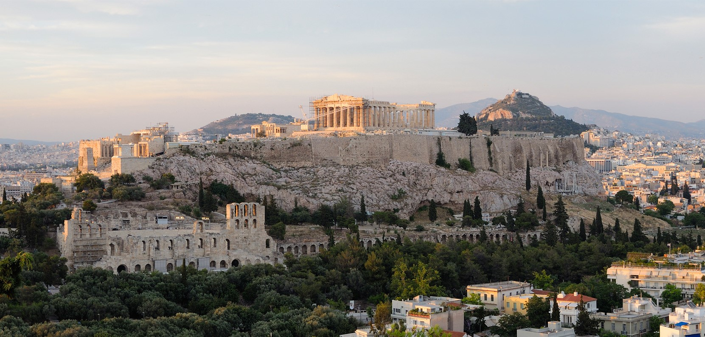

CAPÍTULO 17 - “Espaços de dor e de esperança.” A questão urbana
Enchentes em São Paulo revelam falta de planejamento urbano
Quem não reside na cidade de São Paulo acompanhou espantado pela TV as enchentes, praticamente diárias, provocadas pelas chuvas que atingiram a região em janeiro de 2010, provocando mortes e milhares de desabrigados, com quase 26 mil pessoas sendo obrigadas a deixar as suas casas. Um dos bairros mais atingidos foi o Jardim Pantanal, situado na zona leste, na várzea do rio Tietê. Segundo os dados divulgados, o volume de chuva durante todo o mês chegou a 480,5 milímetros, que representou o dobro da média habitual dessa época do ano, e o maior volume de água registrado desde 1947. As chuvas continuaram a cair em fevereiro, com os primeiros quatro dias registrando 61% acima da média histórica.
Ao ser entrevistado pela jornalista Talita Mochiute, o arquiteto e urbanista Kazuo Nakano, do Instituto Pólis, alertou que o modelo de urbanização implementado na região foi errado. As inundações foram provocadas pela ocupação humana inadequada, com a impermeabilização do solo provocada pelo asfaltamento nas margens dos rios. Além disso, os leitos dos maiores rios – Tietê, Pinheiros e Tamanduateí – foram alterados de forma inadequada, perdendo suas curvas naturais e sendo transformados em canais, com linhas retas.
Segundo Nakano, ‘é preciso reformular o jeito de ocupar os espaços das várzeas de rios e córregos. Abrir os rios. Liberar o solo. Essa é uma medida estrutural e de planejamento para longo prazo’. O grande problema é que uma intervenção desse tipo, nos dias de hoje, enfrentaria resistências de todos os grupos sociais envolvidos, inclusive grandes proprietários de imóveis. Por este motivo, a Prefeitura da cidade decidiu pela implantação do projeto “bolsa-enchente”, um benefício financeiro concedido aos desabrigados, para que possam sair das suas casas, localizadas nos bairros alagados, e pagar o aluguel de outro imóvel.
Trata-se de medidas apenas paliativas, quer dizer, que não resolvem o problema, pois não levam em conta uma série de aspectos, como, por exemplo, a necessidade de reforma da galeria fluvial. Nakano afirma que ‘O mapa de galerias de águas fluviais é de sete anos atrás. É necessário ainda atualizar os mapas dos pontos de alagamento, geológico e de infraestrutura, como esgoto’, aponta, destacando que não há serviço de manutenção dessas galerias. Outro problema, apontado pelo urbanista, que agrava esse cenário, são os inúmeros lixões clandestinos existentes em São Paulo.
[Conferir as declarações de Kazuo Nakano, à jornalista Talita Mochiute, na reportagem do título, publicada pelo Portal Aprendiz, em 11/02/10 em http://aprendiz.uol.com.br/content/meshitheth.mmp. Acesso em 13 de fevereiro de 2013].
A notícia anterior poderia se referir a inúmeras cidades brasileiras, de Norte a Sul do país, capitais ou não, pertencentes às regiões metropolitanas ou situadas no interior. Poderíamos dizer também que as causas geralmente apontadas para esse tipo de problema, em todos esses lugares, estão relacionadas à ausência de planejamento urbano – exatamente a questão principal presente no título da matéria publicada, sobre a cidade de São Paulo.
Você percebeu que a própria reportagem, ao se preocupar em entrevistar um especialista sobre o assunto, aponta a “ocupação humana inadequada” como a causa para esse tipo de tragédia? Por que será que isso ocorre? Os homens, ao se organizarem em sociedade e construírem e habitarem as suas cidades, não teriam como prever antecipadamente esses problemas?
 “Ninguém merece isso!” Chuva forte provoca enchente, deixando rastro de sofrimento e dor, no Rio de Janeiro, 2012.
“Ninguém merece isso!” Chuva forte provoca enchente, deixando rastro de sofrimento e dor, no Rio de Janeiro, 2012.
Podemos responder que sim – e desde os tempos mais remotos. Um exemplo histórico é a civilização inca, que formou um vasto império na América do Sul – abrangendo partes dos atuais Chile, Argentina, Peru, Bolívia, Equador e Colômbia –, construindo, no século XV, a cidade sagrada de Machu Picchu, a mais de 2.400 metros de altitude, na Cordilheira dos Andes.
Os incas utilizaram uma técnica que permitia o escoamento da água e, consequentemente, impedia a destruição que fortes tempestades poderiam provocar. Coincidência ou não, na mesma época em que a cidade de São Paulo sofria com as enchentes – final de janeiro de 2010 –, chuvas fortíssimas também atingiram o Vale Sagrado, a região do Peru onde se localiza Machu Picchu, destruindo pontes e provocando desmoronamentos nas estradas, isolando por dias os moradores e centenas de turistas. As construções seculares de Machu Picchu, no entanto, não foram afetadas em momento algum.
 A cidade de Machu Picchu (Peru) foi construída na Cordilheira dos Andes, pela civilização inca, com uma tecnologia que a protege de fortes tempestades. (Imagem de wirestock no Freepik)
A cidade de Machu Picchu (Peru) foi construída na Cordilheira dos Andes, pela civilização inca, com uma tecnologia que a protege de fortes tempestades. (Imagem de wirestock no Freepik)
Atualmente, em diversas cidades de todas as regiões de nosso país, convivemos com enchentes e outras tragédias causadas todos os anos pelas chuvas. Será que essas tragédias poderiam ser evitadas? Como?
Feitas estas considerações e indagações, vejamos como a Sociologia nos ajuda a entender um conjunto de questões que podemos intitular de “urbanas”, conforme nomeamos neste capítulo
Origem e desenvolvimento das cidades e da urbanização
O termo urbano é derivado do latim urbe, que significa cidade, se constituindo em oposição ao termo rural. A urbanização, portanto, nasce com a sedentarização do homem, quando ele se fixa em um determinado território e passa a se dedicar também à agricultura. Portanto, assim como o urbano se opõe a rural, podemos dizer que a ideia de cidade se opõe a campo.
Nas sociedades que passaram a viver também da agricultura, o que podemos chamar de áreas urbanas reuniam uma parcela bem pequena da população, já que a maior parte vivia na área rural. Nas sociedades industriais, muitos séculos depois, essa relação se inverte, com a esmagadora maioria da população migrando e se concentrando cada vez mais nas regiões urbanas, trazendo, com esse movimento, uma série de consequências para a vida cotidiana dos seres humanos.
A arquiteta e historiadora Raquel Rolnik (1988) apresenta um paralelo entre a construção de cidades e o aparecimento da escrita entre os homens. Segundo ela, a escrita e a cidade são fenômenos que ocorreram quase que simultaneamente, como uma necessidade de organização do trabalho coletivo, a partir da geração de um determinado excedente, proporcionado pela agricultura:
O excedente é, ao mesmo tempo, a possibilidade de existência da cidade – na medida em que seus moradores são consumidores e não produtores agrícolas – e seu resultado – na medida em que é a partir da cidade que a produção agrícola é impulsionada. Ali são concebidas e administradas as grandes obras de drenagem e irrigação que incrementam a produtividade da terra; ali se produzem as novas tecnologias do trabalho e da guerra. Enfim, é na cidade, e através da escrita, que se registra a acumulação de riquezas, de conhecimentos.
(ROLNIK, 1988, p. 16)
Quando falamos da origem da vida nas cidades, nos referimos à organização da vida coletiva, em um nível bem diferente daquele que era característico dos grupos nômades. A acumulação de riquezas e de conhecimentos de que nos fala Rolnik significou também a emergência de um “poder urbano”, de uma autoridade político-administrativa, relacionada à divisão social do trabalho entre os homens. Esta divisão do trabalho era encarregada, por exemplo, de gerir os excedentes e de comandar as guerras, estabelecendo uma série de hierarquias, que se distribuíam de forma diferenciada no espaço urbano – daí é que podemos entender a construção de palácios suntuosos para abrigar a realeza, templos imponentes para o culto ao sagrado, fortalezas inabaláveis defendidas pelos guerreiros
 Ruínas da cidade de Meroe, capital do Império de Kush entre 270 a.C. e 370 d.C. Algumas pesquisas arqueológicas indicam o estabelecimento desse império, ao sul do Egito, próximo à Núbia, por volta de 2.500 a.C. (cf. M'BOKOLO, 2008, p. 77-78).
Ruínas da cidade de Meroe, capital do Império de Kush entre 270 a.C. e 370 d.C. Algumas pesquisas arqueológicas indicam o estabelecimento desse império, ao sul do Egito, próximo à Núbia, por volta de 2.500 a.C. (cf. M'BOKOLO, 2008, p. 77-78).
Segundo o filólogo e arqueólogo australiano Vere Gordon Childe, o surgimento das primeiras cidades pode ser definido pelo termo Revolução Neolítica. Suas pesquisas apontaram que o início desse processo de sedentarização teria ocorrido há cerca de dez mil anos (CHILDE, 1968). Outros pesquisadores definem esses primeiras concentrações humanas como "vilas neolíticas", que prosperaram e se transformaram posteriormente em cidades (PINSKY, 2003). Apesar da identificação tradicional da Mesopotâmia (entre os rios Eufrates e Tigre) como a região em que teriam surgido as primeiras cidades, por volta de 3.500 a.C. (cf., entre outros, MUMFORD, 1998), acompanhada, muitos anos depois (entre 2.000 e 1.500 a.C.), pela ocupação humana em regiões férteis do Egito, da China e da Palestina, novas pesquisas arqueológicas continuam sendo realizadas, alterando datas e regiões quanto à identificação da organização da vida urbana. Em relação ao continente africano, por exemplo, reconhecido cientificamente como o berço da Humanidade, investigações mais recentes apontam para a prática da agricultura no delta do rio Nilo entre 6.000 e 5.000 a.C. (cf. apurado por COSTA E SILVA, 2006, p. 83). Além disso, há ainda outros registros desse processo de sedentarização ocorrido na África, com algumas das suas características principais (agricultura, criação de gado, sistemas de escrita, metalurgia), "em pequena escala, cerca de um milênio antes, no Deserto Ocidental"; entre 12.000 a 9.000 a.C., na Núbia (Idem, ibidem, p. 85); e, por fim, em 13.000 a.C., na localidade de Lukenya, próxima à atual Nairóbi, no Quênia (cf. NASCIMENTO, 2008, p. 62). Esta última apresentaria um "grau de sofisticação" na domesticação de animais tão acentuado que, segundo o antropólogo, linguista e professor de Estudos Africanos da Universidade de Rutgers, nos EUA, Ivan Van Sertima, poderia ter se espalhado exatamente para a Mesopotâmia (SERTIMA, 1983, p. 20). Cada vez mais, portanto, apresentam-se dados que questionam a leitura eurocêntrica da História que aponta para a uma origem greco-romana da "civilização ocidental" - até reconhecendo em determinados estudos a contribuição do Egito, mas desconsiderando a sua caracterização como uma sociedade africana e negra.

A divisão social do trabalho entre os homens correspondeu a sua distribuição diferenciada no espaço urbano, como é o caso da Acrópole de Atenas, Grécia. (Por Christophe Meneboeuf - Obra do próprioMore of my work on my photoblog: http://www.pixinn.net, CC BY-SA 3.0, https://commons.wikimedia.org/w/index.php?curid=17628432)
Participar da cidade passou a significar se submeter a regras que deveriam ser seguidas por todos os seus habitantes. Tomando como referência o trabalho citado de Rachel Rolnik, vamos tomar como um exemplo histórico do que estamos dizendo a pólis, a cidade-estado grega, dividida territorialmente em duas: acrópole e ágora.
A primeira era o lugar do sagrado, do religioso; a segunda era o espaço público que reunia o conjunto de “cidadãos”. Com o mesmo sentido dado pelos gregos, os romanos se referiam à sua civitas, quer dizer, “a cidade no sentido da participação dos cidadãos na vida pública”. Observa-se, portanto, que o conceito de pólis ou de civitas se referia mais à possibilidade de participação política do habitante da cidade, e não ao fato dele residir na área urbana (cf. ROLNIK, p. 22).
De qualquer forma, em Roma, a cidade apresentava-se “cosmopolita e urbanizada”, com casas divididas em vários pavimentos, lojas, mercados, restaurantes, casas de banho – um modelo que se expandiu pelo seu vasto Império:
A cidade romana, com seu território ordenado e suas instituições, contribuiu para a romanização das populações conquistadas. Seu modelo, cons-truído segundo um traçado regular, proporcionava esquemas ágeis de circulação de público e mercadorias, indispensáveis numa economia mercantil em larga escala como a romana imperial.
(MENDES; VERÍSSIMO; BITTAR, 2007, p. 12)
Agora, vamos nos transportar para a Europa na Idade Média, que apresenta diferenças substanciais com a cidade romana – a terra passa a ser o centro da produção de bens e de riquezas, sob o controle dos senhores feudais, que têm total autonomia em seus domínios. As cidades medievais eram constituídas por terras comunais, nas quais os moradores iam se instalando de forma irregular dentro das muralhas, com construções sinuosas e descontínuas – sempre em torno da igreja e dos castelos dos senhores feudais. A construção dessas cidades fortificadas no alto de montanhas era determinada pela necessidade de defesa contra exércitos inimigos. Já o lugar de moradia coincidia com o lugar de trabalho, sob o comando das chamadas corporações de ofício e sua produção artesanal.
Na sociedade feudal europeia, as grandes propriedades rurais passaram a representar o centro da vida, conforme representação na iluminura do século XV, do Livro de Horas do Duque de Berry.
A mudança descrita, que marcou o início da Era Feudal, foi determinada pela total desestruturação do Império Romano e o abandono das suas cidades, a partir das invasões bárbaras:
O meio rural representava maior possibilidade de sobrevivência aos invasores. E o mundo europeu se organizou de forma diferente. As cidades, abandonadas, perderam a importância. As grandes propriedades rurais passaram a representar o centro da vida.
(MENDES; VERÍSSIMO; BITTAR, 2007, p. 14)
Com o tempo, a intensificação do comércio nas sociedades feudais fez surgir novas cidades no caminho das rotas comerciais. É interessante assinalar que esse fenômeno ocorreu na Europa medieval, mas também nas rotas comerciais asiáticas e africanas. Neste mundo desconhecido dos europeus, mas praticamente no mesmo tempo histórico medieval, um exemplo importante foi a cidade de Tombuctu que servia como entreposto do vasto comércio que existia através do Saara, unindo o Norte e o Sul do continente africano.
A cidade de Tombuctu, no Mali, África, fundada por volta do ano 1100, era o ponto de encontro entre as caravanas que traziam sal das minas do deserto do Saara para trocar por ouro e escravos trazidos do sul, através do rio Níger. (Lazare Eloundou Assomo, CC BY-SA 3.0 IGO , via Wikimedia Commons)
Foi nas cidades fortificadas europeias, também conhecidas como burgos, que a atividade comercial assumiu um novo papel ao libertar os servos que passaram a migrar das terras feudais, juntamente com as amarras que os prendiam a seus senhores. Aos poucos, a expansão comercial das cidades significou também a sua expansão política e territorial, com a unificação de antigos feudos em reinos centralizados – governados por monarcas absolutistas e suas linhagens nobres – com vastas regiões que passaram a utilizar uma mesma moeda.
Falamos do surgimento dos poderosos Estados modernos, cuja organização correspondeu aos interesses crescentes da classe mercantil e manufatureira. Nesse processo, o espaço urbano assume outro caráter, de que nos fala a professora Raquel Rolnik:
A transformação da vila medieval em cidade-capital de um Estado moderno vai operar uma reorganização radical na forma de organização das cidades. O primeiro elemento que entra em jogo é a questão da mercantilização do espaço, ou seja, a terra urbana, que era comunalmente ocupada, passa a ser uma mercadoria – que se compra e vende como um lote de bois, um sapato, uma carroça ou um punhado de ouro.
Em segundo lugar, a organização da cidade passa a ser marcada pela divisão da sociedade em classes: de um lado os proprietários dos meios de produção, os ricos detentores do dinheiro e bens; de outro, os vendedores de sua força de trabalho, os livres e despossuídos. (...)
Finalmente, um poder centralizado e despótico ali se instala; um poder de novo tipo, que interfere diretamente na condução do destino da vida cotidiana dos cidadãos.
(ROLNIK, p. 39, grifos dos autores)
Daí por diante, a vida urbana não seria mais a mesma. Estava configurada uma nova organização da cidade, que somente viria a se aprofundar cada vez mais a partir da Revolução Industrial.
A cidade contemporânea como espaço de segregação socioespacial
Você conhece bem a cidade onde mora? Tem noção da sua estrutura e funcionamento?
O que vê quando anda pelo Centro da cidade? O Centro é o espaço da política e da máquina pública, onde se localizam a sede da Prefeitura, o posto do INSS, a delegacia de polícia, a sede local da Receita Federal, os cartórios etc. Ao mesmo tempo, é também um centro comercial, com os supermercados, as lojas de roupas e sapatarias, drogarias, lanchonetes, restaurantes, bancas de jornais etc.
Porém, a maioria dos outros bairros, localizados próximos ou não do Centro, são locais de residência da maior parte da população, que se desloca para o trabalho no Centro ou para algumas regiões características, como as chamadas “zonas industriais”, locais com grande concentração de fábricas. Esses espaços urbanos são ligados por uma malha de transportes, através de rodovias, estradas de ferro, metrô, barcas etc.
Uma primeira observação a ser feita é a respeito da ordenação desses espaços, organizados de acordo com o seu objetivo principal. Pode ser de circulação pública – como lugar em que funcionam as instituições do Estado e o comércio ou de circulação privada – como é o caso dos inúmeros edifícios e condomínios residenciais que proliferam nas médias e grandes cidades.
Este ordenamento do espaço urbano teve origem na reorganização das cidades a partir da produção industrial. As cidades medievais, com seu desenho irregular e descontínuo, são substituídas por cidades geometricamente planejadas que crescem, primeiro, em torno dos centros de comércio e do poder centralizado do Estado absolutista; depois, com a Revolução Industrial, em volta das fábricas, concentrando a população que migra, em peso, das áreas rurais cada vez mais esvaziadas economicamente.
A principal marca dessas novas cidades da “Era do Capital” é o que os especialistas chamam de segregação espacial, ou seja, a separação, no espaço urbano, entre as classes sociais, demarcando os locais de moradia e as diversas funções e serviços. Este movimento foi incrementado pela expansão do trabalho assalariado: “É como se a cidade fosse um imenso quebra-cabeças, feito de peças diferenciadas, onde cada qual conhece seu lugar e se sente estrangeiro nos demais” (ROLNIK, p. 41).
 Com a Revolução Industrial, as cidades passaram a ser acompanhadas pela ideia científica de planejamento, com os espaços urbanos desenhados e ordenados de forma geométrica. Vista aérea da cidade de Taubaté, SP, região do Vale do Paraíba.
Com a Revolução Industrial, as cidades passaram a ser acompanhadas pela ideia científica de planejamento, com os espaços urbanos desenhados e ordenados de forma geométrica. Vista aérea da cidade de Taubaté, SP, região do Vale do Paraíba.
Concorda com essa análise? Será que existem “muros visíveis” e “muros invisíveis” dividindo a cidade? Como exemplos de “muros visíveis”, citamos os shopping centers e os condomínios de luxo; como “muros invisíveis”, a divisão que se percebe a olho nu entre os bairros onde reside a classe média e os bairros onde mora a população mais pobre.
Porém, se olharmos mais de perto, veremos que esses muros não são tão “invisíveis” assim: nos bairros onde reside a classe média, as ruas são asfaltadas e iluminadas, o lixo é recolhido em dia marcado, existe rede de água e de esgoto, são melhor servidos de meios de transporte. Já os bairros periféricos, onde reside boa fatia da população trabalhadora, parecem abandonados pelo poder público, muitas vezes sem serviço de água, esgoto, energia elétrica e sem recolhimento do lixo, que é jogado em terrenos abandonados ou nas encostas dos morros. Há um grande número de ruas sem pavimentação e o transporte público é precário. Estes são elementos componentes da segregação socioespacial, com os investimentos públicos direcionados pela e para a classe social que controla o poder político e econômico.
É claro que as verbas públicas também são aplicadas nos bairros periféricos, mas há uma grande diferença no nível dos investimentos. O Estado, dessa forma, produz uma clara ação de segregação na cidade moderna. Além de produzir e reproduzir a segregação, ele passa a ser o gestor dos conflitos sociais, interferindo com a intenção de punir ou de reprimir aqueles que fogem à “ordem”. Um exemplo dessa política tem sido dado pelo estado do Rio de Janeiro e a determinação governamental de instalação de Unidades Policiais Pacificadoras – UPPs – nas favelas cariocas, principalmente após a escolha do país para realização da Copa do Mundo de futebol de 2014 e da cidade para sede das Olimpíadas de 2016 (cf. MACHADO DA SILVA, 2010, p. 3). As favelas são caracterizadas sempre pela sua “clandestinidade”, um “território inimigo” presente dentro do próprio sistema que o produz, mas que, contraditoriamente, precisa ser “eliminado”:
É inimigo do capital imobiliário porque desvaloriza a região; da polícia, porque em seus espaços irregulares e densos é difícil penetrar; dos médicos, porque ali, espaço sem saneamento, proliferam os parasitas que se reproduzem nos esgotos a céu aberto.
(ROLNIK, p. 69)
Como o Estado geralmente consegue “recuperar” esse “território inimigo”? Em geral, a maioria dos governos recorre à intervenção armada, através da polícia militar.
Então, mesmo fazendo parte da cidade e da sua constituição como espaço de circulação de mercadorias, as favelas e comunidades dominadas pelos traficantes tornam-se zonas apartadas dos interesses mais globalizados e rentáveis do capital, além de prejudicarem a especulação imobiliária.
O que dissemos até aqui demonstra que a segregação socioespacial é parte integrante da divisão da sociedade capitalista em classes sociais. Mas se trata também de uma segregação étnico-racial, pois a maioria das favelas é habitada não só por trabalhadores com pouca ou nenhuma qualificação profissional, mas majoritariamente pela população negra.
Além do Brasil, essas informações sobre a segregação valem também para outros países, como é o caso dos bairros pobres da África do Sul pós-apartheid; dos guetos negros de Nova York e dos bairros das principais cidades norte-americanas onde mora a classe trabalhadora de origem latina; ou ainda os bairros periféricos de Paris, onde residem os imigrantes que vieram da Turquia ou da Argélia e seus descendentes nascidos na França.
 Vivemos em “cidades partidas” por “muros invisíveis”? Ou seriam muros bastante visíveis? Vista da favela da Rocinha, no Rio de Janeiro (RJ).
Vivemos em “cidades partidas” por “muros invisíveis”? Ou seriam muros bastante visíveis? Vista da favela da Rocinha, no Rio de Janeiro (RJ).
No Brasil, a segregação socioespacial e étnico-racial nos remete historicamente às cidades coloniais, marcadas pela divisão entre a casa-grande e a senzala; entre os latifundiários portugueses e/ou descendentes dos europeus e os africanos trazidos como escravos através do tráfico atlântico. Fazendo um paralelo com a sociedade feudal, enquanto tínhamos na Europa as corporações de ofício, aqui a senzala era o espaço que representava o mundo do trabalho (cf. ROLNIK, p. 45).
 No Brasil, a atual segregação socioespacial e étnico-racial nos remete às cidades coloniais e à divisão entre a casa-grande e a senzala. (Planta da casa-grande do engenho Noruega, desenhada por Cícero Dias).
No Brasil, a atual segregação socioespacial e étnico-racial nos remete às cidades coloniais e à divisão entre a casa-grande e a senzala. (Planta da casa-grande do engenho Noruega, desenhada por Cícero Dias).
Mesmo a chamada “Abolição” e o advento da República não alteraram radicalmente o quadro de segregação pré-existente: como observou o professor Andrelino Campos, citando a região urbana do Rio de Janeiro, a população que habitava as senzalas e os quilombos foi absorvida pelas favelas, desde a passagem dos séculos XIX para o XX, proliferando em escala geométrica com o passar das décadas, acompanhando a crescente desigualdade social que marca a história do capitalismo em nosso país:
A favela, como espaço transmutado, adensou-se de forma significativa à medida que a reforma do espaço urbano do Rio de Janeiro avançava no sentido de adequá-lo aos investimentos capitalistas. Se, por um lado, a cidade ganhava as feições de modernidade (...), deixando-a cada vez mais parecida com as cidades europeias (...), de outro lado, incrementavam-se cada vez mais os núcleos favelados com a extinção de áreas de cortiços que ainda abrigavam populações pobres, principalmente negras, egressas de cativeiros.
(CAMPOS, 2007, p. 24)
Casas pertencentes à comunidade remanescente de quilombo, em Alcântara, Maranhão, novembro de 2008.
Mas, o que são mesmo as favelas, que insistimos em descrever?
Segundo os professores Jaílson de Souza e Silva e Jorge Luiz Barbosa, a representação dos espaços urbanos que receberam o nome favela, no Brasil é marcada pela “negatividade” e por “juízos pré-concebidos”, que ignoram a pluralidade realmente existente. A favela, nesse sentido, seria sempre representada pela “noção de ausência”: “Ela é sempre definida pelo que não teria: um lugar sem infraestrutura urbana – água, luz, esgoto, coleta de lixo –, sem arruamento, sem ordem, sem lei, sem moral e globalmente miserável. Ou seja, o caos.” (SOUZA E SILVA; BARBOSA, 2005, p. 24)
A primeira favela brasileira de que se tem notícia teve origem na cidade do Rio de Janeiro, no Morro da Providência, ocupado no final do século XIX por negros que participaram como soldados da Guerra de Canudos, em 1897. O termo “favela” teria sido utilizado para se referir ao morro (Morro da Favela), em função de corresponder às características de um determinado lugar do sertão baiano, cujos moradores conheciam por esse nome. Mas, evidentemente, esta é apenas uma versão possível, apesar de bastante difundida. Outras versões se referem ao surgimento da primeira favela a partir dos escravos alforriados que voltaram da Guerra do Paraguai, na década de 1870, ou ainda como resultado da destruição de cortiços por parte do prefeito Barata Ribeiro, em 1894. O professor Andrelino Campos, que é um dos pesquisadores que mais se dedicam a esse tema, apresenta e discute as três versões citadas (cf. CAMPOS, 2007, p. 51-62).
.jpg) A comunidade da Mangueira, Rio de Janeiro.
A comunidade da Mangueira, Rio de Janeiro.
Assim, o espaço urbano e o rural assumem novos formatos que reafirmam a lógica da segregação – real ou imaginária –, chegando ao século XXI reproduzindo e ampliando, em larga escala, uma série de “cidades partidas”, que tem como referência exemplar a capital do Rio de Janeiro (a expressão “cidade partida”, para representar a segregação socioespacial existente no Rio, foi utilizada pelo jornalista Zuenir Ventura em um livro que teve grande repercussão, lançado em 1994).
O movimento de urbanização da população mundial cresce de forma cada vez mais acelerada desde a Revolução Industrial. Mas, somente no final da primeira década do século XXI é que se estima que, pela primeira vez na História da humanidade, a população urbana será superior à população rural, completando, finalmente, depois de milênios, o movimento de migração humana iniciado com o processo de sedentarização.
O urbanista norte-americano Mike Davis reúne uma série de dados sobre essa explosão populacional urbana em seu livro Planeta Favela, de 2006. Entre esses dados, na página seguinte, consta que as cidades em breve serão responsáveis pelo crescimento de quase toda a população mundial, que poderá atingir dez bilhões de habitantes em 2050:
Noventa e cinco por cento desse aumento final da humanidade ocorrerá nas áreas urbanas dos países em desenvolvimento, cuja população dobrará para quase 4 bilhões de pessoas na próxima geração. De fato, a população urbana conjunta da China, da Índia e do Brasil já é quase igual à da Europa e da América do Norte (DAVIS, 2006, p. 14) (…).
(…) Dentre as 24 cidades mais populosas do planeta em 2004, apenas Nova York não está localizada nos países mais pobres e ‘em desenvolvimento’, aparecendo em terceiro lugar, com 21,9 milhões de habitantes. Em primeiro e segundo lugares da lista aparecem a Cidade do México (22,1 milhões) e Seul (21,9). Após a terceira posição de Nova York, seguem São Paulo (19,9 milhões), Bombaim (19,1), Délhi (18,6), Jacarta (16,0),... Dentre essas megacidades, o Rio de Janeiro ocupa a 16ª posição, com 11,9 milhões de habitantes, à frente de Teerã, Istambul e Pequim, que a seguem de perto nessa “corrida”.
(cf. DAVIS, p. 15)
Esse crescimento da população urbana, que se acentua em países mais pobres e em desenvolvimento, se dará principalmente em favelas. Em 2006, estas reuniam 36,6% da população urbana brasileira, com um número de 51,7 milhões de “favelados” – apesar do elevado número absoluto –, o percentual pode até ser considerado como “modesto”, se comparado com o percentual de outros países, como mostramos na tabela a seguir:

Será que estes números não nos fazem pensar como algumas cidades apresentam quase a totalidade da sua população residindo em condições consideradas subnormais, como é o caso das favelas?
Você sabia que o Brasil apresenta a terceira maior população favelada do mundo, em números absolutos? Acima do número de 51,7 milhões de favelados brasileiros, tínhamos, em 2003, somente os dois países mais populosos do mundo: a China, com 193,8 milhões de habitantes residindo em favelas (correspondendo a 37,8% da sua população urbana), e a citada Índia, com os 158,4 milhões que aparecem na tabela.
O que não aparece na relação acima são outros países onde quase todos os seus moradores urbanos – da mesma forma que na Tanzânia e na Etiópia – residem em favelas. É o caso também do Nepal, com 92% de favelados; do Afeganistão, com 98,5%; e do Tchade, com 99,4%, igual a Etiópia (DAVIS, p. 34-35).
 Favela do Quênia, África.
Favela do Quênia, África.
Se entendemos o que significam as condições de vida de quase a totalidade dos moradores de uma favela – que pode ser pior em outras partes da África e da Ásia do que aqui em nosso país –, dá para imaginar o que representam esses números espantosos! Enfim, como você, estudante, vê isso tudo?
As cidades dos grandes eventos
Outro aspecto importante para pensarmos as cidades a partir da Sociologia são os megaeventos espor-tivos, como a Copa do Mundo de futebol e os Jogos Olímpicos.
Há alguns anos, o Brasil e a cidade do Rio de Janeiro foram escolhidos, respectivamente, para país-sede da Copa do Mundo de futebol em 2014, e a cidade-sede dos Jogos Olímpicos de 2016.
Você se lembra das repercussões dessas escolhas? Recorda-se da grande festa transmitida pelas redes de TV e da imensa alegria que contagiou inúmeros brasileiros?
O que isso tem a ver com nossa discussão sobre as cidades e a questão urbana?
Ser sede de megaeventos esportivos implica em vários compromissos como:
- Melhoria da infraestrutura urbana e mais obras;
- Mudança de algumas leis municipais e federais;
- Melhorias das ruas e avenidas para circulação de pessoas e equipes esportivas;
- Deslocamentos geográfico de pessoas, casas e construções, dentre outros.
Esses compromissos, em tese, deveriam também melhorar a vida das populações das cidades. Concorda? Na verdade, eles têm consequências sociais, econômicas e territoriais que quase nunca são divulgados pela grande mídia.
Como exemplo dessas questões levantadas, veja o que ocorreu no megaevento esportivo que foi a Copa do Mundo de futebol, organizada pela FIFA em 2010, na África do Sul.
Durante a Copa do Mundo de 2010 o canal esportivo ESPN colocou no ar uma matéria sobre a “Cidade de Lata”. O que era isso? Tratava-se do seguinte: muitas pessoas que moravam em favela e nas ruas da Cidade do Cabo, durante os jogos da Copa, foram encaminhadas para um local que passou a ser conhecido como “Cidade de Lata”. Eram pobres, mendigos, imigrantes etc., gente que a FIFA e o governo sul-africano tentaram esconder dos visitantes, os turistas estrangeiros. Para esses locais, foram deslocadas mais de 10 mil pessoas, que sobreviviam sem saneamento básico ou qualquer tipo de apoio do Estado.Segundo os moradores da Cidade de Lata, tudo começou em 2007, quando o governo iniciou a construção do estádio Green Point e outras obras para a Copa do Mundo. Desde então, as pessoas passaram a ser removidas à força, à base até de tiros disparados em alguns momentos. Depois, elas foram despejadas em cubículos minúsculos feitos de lata e cobertos por lonas. A promessa era de que essa situação seria temporária e todos receberiam uma moradia digna. Passados três anos nada tinha sido feito. Isto dá no que pensar, não?
A respeito dos futuros megaeventos, como essas questões foram e estão sendo tratadas e planejadas no Brasil? Quais são as medidas governamentais que estão ocorrendo e ocorrerão?
 Favela de Blikkiesdorp, na Cidade do Cabo, África do Sul, que ficou conhecida, mundialmente, na época da Copa do Mundo de 2010, como “a Cidade de Lata”
Favela de Blikkiesdorp, na Cidade do Cabo, África do Sul, que ficou conhecida, mundialmente, na época da Copa do Mundo de 2010, como “a Cidade de Lata”
Destacam-se, nesse sentido, as remoções de moradores e prédios que ocorreram até 2014 em diversas capitais que sediaram a Copa do Mundo de futebol e no Rio de Janeiro por conta das Olimpíadas de 2016. Em Curitiba, São Paulo, Rio de Janeiro, Manaus, Natal, Fortaleza, Salvador, Porto Alegre e outras cidades- -sedes da Copa, várias comunidades foram removidas e enviadas para longe de seus locais de trabalho. A legislação que prevê a realocação imediata dos despejados, em um raio de dois quilômetros, quase não foi cumprida em todas as cidades- -sedes dos jogos de futebol.
Mas por que isso tudo ocorre da forma como estamos descrevendo?
O pesquisador e professor Carlos Bernardo Vainer, especialista em estudos urbanos, afirma que os megaeventos esportivos, na verdade, são um grande negócio capitalista que significa somente a ponta de um iceberg da ideia de “cidade-empresa”. Nesse sentido, durante os megaeventos, se estabelece o que esse pesquisador chama de “cidade de exceção” (cf. VAINER, 2011).
Vamos explicar melhor o que é uma cidade-empresa e uma cidade de exceção.
O professor Vainer diz que, a partir da década de 1990, novos modelos de desenvolvimento e planejamento urbanos vão se fortalecendo. Esses modelos baseiam-se numa ênfase competitiva e empresarial, ou seja, um ideal de cidade que seja capaz de atrair capitais e turistas, uma cidade que funciona como uma empresa. O que uma cidade-empresa faz? Vainer responde:
Ela concorre, por isso tem que ser ágil. Como eles dizem, ela tem que aproveitar as oportunidades de negócio. Um plano diretor, que estabelece o que se pode e o que não se pode fazer numa cidade, é um obstáculo a essa flexibilidade, que é condição para se apro-veitarem as oportunidades de negócios. Tudo que é regra aparece como obstáculo. Na verdade, o modelo de planejamento é o que, no Banco Mundial, se chama de ‘planejamento amigável ao mercado’ ou ‘planejamento orientado ao mercado’. Não se trata de, como nos anos 1950, 1960, fazer um planejamento porque o mercado gera imperfeições. O mercado passa a ser a melhor forma de organizar a cidade.
(VAINER, 2012)
O que o autor diz, em outras palavras, é que a ocupação da cidade e a forma de governá-la são pensadas como uma empresa que deve ser dirigida por empresários. E as legislações devem se adequar a este modelo para atender às demandas empresariais. Essa ideia de cidade, durante os megaeventos, é levada ao extremo, pois a cidade inteira vira cidade de exceção.
Por exemplo, para a organização de uma área da cidade do Rio de Janeiro, que se planejou e se planeja para a Copa do Mundo e para as olimpíadas, o professor Vainer diz:
Criou-se uma legislação específica para algumas áreas, como se elas fossem fora da cidade – ali pode-se fazer coisas que não se pode em outros lugares. Nesse caso, o Rio de Janeiro tem a triste vanguarda no Brasil: sua área portuária foi entregue a um consórcio empresarial que vai governar aquele território, inclusive recolher impostos e reunir ali os serviços públicos ‘privatizados’, como iluminação – é como se fosse um território terceirizado.
(VAINER, 2012)
Nos megaeventos esportivos, em vez de ações políticas, como as citadas anteriormente, serem localizadas, a cidade inteira vira um lugar para fins específicos dos empresários. Implementam-se assim novas regras urbanas, novas legislações de isenções fiscais, com remoções de pessoas que estão há décadas morando no lugar.
Dessa forma, então, podemos concluir que megaeventos como Copa do Mundo e Olimpíadas não envolvem somente esportes, mas negócios também?
O que você acha das análises apresentadas pelo professor Vainer?
A concepção de cidade-empresa significa transformações urbanas duradouras no acesso da população a certas áreas, no comércio de mercadorias e no acesso a locais de moradias. Mas, muito além dessas intervenções, elas representam uma grande mudança no perfil da cidade, com a realocação de parte de seus moradores, remanejados das áreas objeto de especulação imobiliária e por onde circularão os turistas.
Portanto, a Copa do Mundo de futebol e as Olimpíadas não são simples eventos “que passam”, após terem ocorrido num determinado período. Com tantos interesses envolvidos, deixam marcas quase definitivas nas suas cidades-sede. Vamos pensar mais sobre isto?
Caminhamos para uma cidade pós-industrial ou para uma cidade mais democrática? Como serão as cidades do futuro?
As cidades se encontram sempre em permanente transformação, como nos mostra a História. Alguns estudiosos, considerando os diversos avanços tecnológicos trazidos pela sociedade da informação, entendem que a cidade do futuro poderá ser um espaço desconcentrado, descentralizado, já que o espaço e o tempo seriam redefinidos pela nova ordem gerada e gerida pelo capital financeiro (ver ainda ROLNIK, p. 83-84).
Preferimos entender o futuro da cidade, no entanto, não como o “caos” e o “lugar do sofrimento”, mas sim como importantes espaços de luta, de construção permanente da Utopia ou de verdadeiros espaços de esperança – para utilizar uma ideia apresentada pelo professor David Harvey (2006).
No sentido do que dissemos acima, Carlos Bernardo Vainer entende que os governos municipais poderiam aprovar políticas que:
- reduzissem as desigualdades e melhorassem as condições (materiais e imateriais) de vida das classes trabalhadoras, com a transferência, para estes, de recursos que sempre foram historicamente apropriados pelas elites econômicas dominantes;
- contribuíssem para a organização dos trabalhadores e das lutas populares;
- enfraquecessem os grupos de poder dominantes, com o combate às políticas de clientelismo, à privatização dos recursos públicos e às práticas de corrupção, entre outras ações.
(cf. VAINER, 2002, p. 28-29)
 Reprodução do cartaz do Fórum Social Urbano, Rio de Janeiro, 2010.
Reprodução do cartaz do Fórum Social Urbano, Rio de Janeiro, 2010.
Estas e outras questões estiveram presentes nos debates que ocorreram na cidade do Rio de Janeiro, entre 22 e 26 de março de 2010, por ocasião da realização do Fórum Social Urbano, organizado pelos movimentos sociais e pelos centros de estudos universitários voltados para pensar a questão urbana neste século XXI sob o ponto de vista dos trabalhadores. Esse Fórum foi pensado como a alternativa não governamental a outro evento oficial que ocorreu no mesmo período na cidade, o V Fórum Urbano Mundial, promovido pelo Programa das Nações Unidas para Assentamentos Humanos – ONU-Habitat –, com a presença de chefes de Estado e diversas autoridades, com o objetivo de se debater sobre a gestão do crescimento das cidades.
Nas suas diversas palestras e mesas-redondas, o tema central do evento da ONU foi “O direito à vida: unindo o urbano dividido”. Avaliando o problema urbano do Rio de Janeiro, a diretora-executiva do ONU-Habitat, a tanzaniana Anna Tibaijuka, defendeu o desenvolvimento da cidade a partir do investimento dos governos em saneamento básico. Segundo ela, “os investimentos em saneamento poderiam elevar um quarto das moradias de favelas ao status de não favela, gerando também oportunidades de emprego para a mão de obra menos qualificada” (TIBAIJUKA, 2010, p.15).
Por outro lado, o Fórum Social Urbano apresentou como contraponto ao evento oficial da ONU uma pauta diferenciada, tendo como preocupações principais a troca de experiências de organizações e lideranças comunitárias de todo o mundo; a denúncia sobre as iniciativas de “criminalização dos movimentos sociais” por parte dos diversos governos; a necessidade de se buscar a Justiça Ambiental; entre outros temas – como consta da convocatória assinada pelos movimentos sociais: Fórum Social Urbano – Nos bairros e no mundo, em luta pelo direito à cidade, pela democracia e justiça urbanas, Rio de Janeiro, Brasil, 22-26 março de 2010.
E você, o que pensa sobre tudo que levantamos neste capítulo? Será que podemos apostar em um futuro diferente para as nossas cidades? Os homens conseguirão resolver o que intitulamos aqui de questão urbana? O que pode e deve ser feito nesse sentido?
A organização da população é o caminho possível para a democratização do espaço urbano. Cartaz de convocação para a Assembleia Mundial dos Habitantes que ocorreu durante o Fórum Social Mundial, em Dakar, Senegal, África, em 2011.
CAPÍTULO 18 - “Ocupar, resistir, produzir.” A questão da terra no Brasil
Tudo o que fere a terra, fere também os filhos da terra.
O índio é filho da terra;
A terra é a nossa vida e a nossa liberdade.
Os grandes senhores da terra não compreendem o povo índio, porque os grandes senhores da terra escravizam a terra.
São estranhos que chegam de noite roubam da terra tudo quanto querem. Para eles um torrão de terra é igual a outro.
A terra não é sua irmã, é sua inimiga, eles a destroem e vão embora.
Deixam para trás o túmulo de seus pais, roubam a terra dos seus filhos.
Sua ganância empobrecerá a terra e eles deixarão atrás de si só a areia cansada dos desertos.
A força do povo índio é amar e defender a terra. Ela é de todos os homens.
Quem tem o direito de vender a mãe de todos os homens? A terra é a nossa vida e a nossa liberdade.
Índio sem terra é como tronco sem raízes à beira do caminho. Tudo o que fere a terra, fere também os filhos da terra.
(Texto escrito por um índio desconhecido, recolhido pela Comissão Pastoral da Terra – CPT. Publicado em CARVALHO,1980, p. 89)
Podemos dizer que a questão da terra no Brasil teve início com a chegada dos colonizadores portugueses, em 1500. E as primeiras vítimas dessa “invasão”, com a consequente ocupação predatória das terras brasileiras, foram aqueles que aqui viviam – os povos indígenas. O texto acima nos mostra que estes povos continuaram sendo vitimados através dos séculos, massacrados pela expansão do “homem branco”, com seus tratores e motosserras, suas estradas e fazendas, a criação de gado para a exportação de carne e as plantações de soja administradas por modernas agroindústrias capitalistas.
 Quais as consequênciaspara o desenvolvimento do Brasil da concentração de terras sempre ter estado nas mãos de poucos? De que forma essa realidade poderia ser modificada? Na foto, militantes do MST em manifestação pela reforma agrária, Curitiba (PR), em2011.
Quais as consequênciaspara o desenvolvimento do Brasil da concentração de terras sempre ter estado nas mãos de poucos? De que forma essa realidade poderia ser modificada? Na foto, militantes do MST em manifestação pela reforma agrária, Curitiba (PR), em2011.
O que acabamos de escrever não significa que somos “contra o desenvolvimento econômico”. Nada disso! Da mesma forma que os portugueses ocuparam o território da Terra de Santa Cruz somente com a intenção de extrair todas as riquezas possíveis, “passando por cima” de quem estivesse no caminho, pode-se dizer, em se tratando da questão da terra no Brasil, que essa história continua se repetindo – guardando as diferenças e especificidades de cada época –, apresentando a mesma “lógica perversa” nesta atual expansão capitalista do chamado “agronegócio”.
Questão de terra ou questão de gente?
A propriedade da terra no Brasil sempre esteve concentrada nas mãos de poucos. Usaremos como imagem o momento em que todo o território da então colônia portuguesa foi dividido em Capitanias Hereditárias, separado da colônia espanhola pelo Tratado de Tordesilhas. Na época, houve “gritaria” de outros reinos europeus que indagavam se “Deus havia dividido o mundo entre Portugal e Espanha”.
Ingleses e franceses protestaram e resolveram se apossar de parte da terra dividida, para poder usufruir das eventuais riquezas que encontrariam na América e na África. Os portugueses, por sua vez, não se contentaram com o território que lhes coube e invadiram a parte espanhola, contando a seu favor com o trabalho dos bandeirantes – aventureiros e mercenários que não hesitavam em assassinar seus adversários. Hoje dão seus nomes a grandes rodovias como Fernão Dias, Anhanguera etc. e a um monumento em sua homenagem, na cidade de São Paulo.
Passando bem rapidamente pela História do Brasil, a título de exemplo, perguntamos:
No tempo do Brasil Colônia, por que os povos indígenas foram massacrados em todas as partes do território?
O que significou e por que ocorreu a guerra dos Sete Povos das Missões?
Durante o Brasil Império, por que foi aprovada, em 1850, uma Lei de Terras?
O que ela de fato significava?
Já no início do Brasil República, por que aconteceu o massacre do povo co-mandado por Antonio Conselheiro, em Canudos?
Nestes três exemplos, apesar dos momentos históricos diferentes, uma mesma dinâmica acompanhou a luta pela terra no Brasil – a lógica determinada pelos interesses econômicos e políticos da classe dominante, formada por grandes proprietários de terras.
Começando pelo Brasil Colônia, qual era o modelo adotado para a ocupação do nosso imenso território? Ora, o rei de Portugal doava sesmarias – grandes extensões de terra – a pessoas de sua inteira confiança, que viraram “nossos” primeiros latifundiários (grandes proprietários de terras). Para extrair a riqueza da terra, escravizavam os povos indígenas que aqui viviam e, posteriormente, os povos africanos trazidos pela empresa do tráfico negreiro.

Segundo o pesquisador Júlio José Chiavenato, uma norma que existia no Regimento de 1548 – que determinava as funções do primeiro governador-geral do Brasil, Tomé de Sousa – foi a responsável não só pela instituição do latifúndio, como também da monocultura, implantando um modelo de posse da terra que perdura até hoje. Essa norma recomendava que “as terras apropriadas fossem doadas, livremente, para o cultivo de cana e para a fundação de engenhos, às pessoas com ‘possibilidades’ de desenvolver a empresa”(CHIAVENATO, 1996, p. 29). Esta decisão significava, de acordo com Chiavenato, que os gigantescos latifúndios implantados pelas sesmarias seriam ocupados, segundo o Regimento, somente pela monocultura da cana-de-açúcar, impedindo a formação de pequenas propriedades.
A concentração da terra permaneceu e se aprofundou durante todo o Período Colonial. E era um problema tão grave que, pouco antes da Independência, até um dos membros da classe dominante, José Bonifácio, apresentou uma proposta de legislação que previa a possibilidade de redistribuição das terras improdutivas por parte do Estado, por impossibilitarem o desenvolvimento econômico da Colônia (CHIAVENATO, p. 29-30).
 José Bonifácio de Andrada e Silva (1763-1838), o “Patriarca da Independência”.
José Bonifácio de Andrada e Silva (1763-1838), o “Patriarca da Independência”.
Essa realidade ficou inalterada até 1850, já durante o Império, quando a Lei n. 601, que ficou conhecida como Lei de Terras, acabou com o sistema de posse, determinando que a terra somente poderia ser adquirida através da compra. Mas, o que significou essa Lei de Terras, afinal?
Uma das suas características era elevar o preço das terras, obrigando o pagamento à vista. Dessa forma, a venda das terras públicas era dirigida para uma elite social e o dinheiro arrecadado seria aplicado na vinda de colonos europeus. “A Lei de Terras visava não só consolidar a posse da terra nas mãos de uma elite, como também preparar um novo tipo de mão de obra para a lavoura, pois sabia-seque o escravismo teria de acabar.” (CHIAVENATO, p. 30).
Essa lei concentrou ainda mais o latifúndio, pois as terras públicas – aquelas que não estavam ocupadas pela monocultura da cana-de-açúcar, do algodão, do café etc. – se tornaram muito mais caras do que as terras particulares, fazendo com que a sua aquisição somente fosse possível por parte das famílias mais ricas e poderosas, melhor dizendo, aquelas que já eram latifundiárias. Como o trabalho escravo foi sendo aos poucos substituído pelo trabalho assalariado, a Lei de Terras acabou por cumprir dois papéis: impediu que o imigrante europeu que chegava ao país adquirisse o seu pedaço de terra por meio da compra (com exceção de algumas regiões do Sul do Brasil) e impediu que o ex-escravo tivesse uma alternativa de trabalho com base na pequena propriedade da terra. É evidente que isso somente seria possível através da realização de uma reforma agrária, como fizeram todos os países capitalistas que realizaram a Segunda Revolução Industrial na mesma época, no século XIX. Nesse sentido, um exemplo clássico de um modelo capitalista, totalmente oposto ao brasileiro, foi dado pelos Estados Unidos que incentivou e forneceu todas as condições para a ocupação de terras por colonos americanos em direção ao Oeste – apesar do massacre dos povos indígenas, como ocorreu por aqui.
 A estátua acima, localizada em Canudos - BA, é uma representação de Antônio Conselheiro, o fundador do antigo Arraial de Canudos, no interior do estado.
A estátua acima, localizada em Canudos - BA, é uma representação de Antônio Conselheiro, o fundador do antigo Arraial de Canudos, no interior do estado.
Este modelo brasileiro de alta concentração fundiária permanece até os dias de hoje. A Guerra de Canudos (1896-1897) pode ser considerada como um emblema do drama e da luta dos sem-terra em nosso país. Deixando de lado o fanatismo religioso que formou o Arraial de Canudos, a pregação mística do beato Antonio Conselheiro arrastou uma multidão que não tinha onde ficar e nem para onde ir, em um Nordeste empobrecido enormemente pelo acelerado deslocamento dos investimentos econômicos rumo ao Sul do país, iniciado pela expansão da lavoura cafeeira. O massacre militar de toda aquela população de miseráveis foi a “solução natural” determinada pelo governo dos “coronéis” da República Velha, sob pressão dos latifundiários baianos, assustados com a possibilidade de que aquele movimentosignificasse uma verdadeira reforma agrária naquela região, “na marra” e “de baixo para cima” (cf. MARTINEZ, 1987, p. 10).
Apesar de apresentar algumas características específicas, parte do que escrevemos sobre Canudos igualmente poderia abarcar a Guerra do Contestado (1912-1916), que também apresentou como semelhanças uma população expulsa de suasterras pelo processode expansão capitalista no Sul do país, com o massacre da população camponesa pelo exército. Assim como em Canudos, a forte resistência popular tinha como base de sustentação a fé proporcionada por lideranças místicas e religiosas.
Na História do Brasil, portanto, a garantia da propriedade da terra para uns poucos chefes locais (a “oligarquia dos coronéis”) e, depois, os modernos interesses capitalistas sempre prevaleceram sobre as necessidades de sobrevivência física da grande maioria da população.
Mas os trabalhadores do campo aos poucos se organizam...
O modelo citado de concentração fundiária somente começou a ser questionado na segunda metade do século XX, após o processo de industrialização que determinou o deslocamento dos trabalhadores e a crescente concentração urbana da população brasileira. Agora, diferentemente do que ocorrera em Canudos e em outras regiões do país, a população rural tinha “para onde ir”: empregar-se como trabalhador assalariado nas empresas que comandaram o processo de modernização capitalista do Brasil.
Como operários, inclusive, esses trabalhadores tiveram acesso a benefícios adicionais e inéditos. A partir da Era Vargas, após a Revolução de 1930, todas as categorias profissionais reconhecidas pelo Estado tiveram a sua carteira de trabalho assinada, e uma legislação que lhes garantia o recebimento de um salário mínimo, férias remuneradas, a estabilidade no emprego e um sistema de previdência social que lhes assegurava a assistência médica e a posterior aposentadoria. Porém, para aqueles que permaneciam como lavradores, nada – o tempoestacionara no Brasil Império e na Primeira República, sem qualquer legislação trabalhista, sem acesso a quaisquer direitos previdenciários. Esse era o “pacto da classe dominante”, iniciado pelo Estado Novo do presidente Getúlio Vargas (1937-1945) e seguido pela política da República Populista (1946-1964): a modernização capitalista brasileira – com as suas consequências para o trabalho assalariado – era um fenômeno exclusivamente urbano, sem qualquer incidência no meio rural.
O grande problema é que somente através de uma violência brutal seria possível manter uma realidade marcada por tanta desigualdade no campo, que pretendia a perpetuação da herança colonial do modelo com base no latifúndio, controlado pelos ricos proprietários que formavam as “oligarquias rurais”.
Mas, os tempos eram outros – pelo menos, para os trabalhadores do campo. Em 1954, ao mesmo tempo em que o Partido Comunista lançava uma Campanha Nacional pela Reforma Agrária, em Vitória de Santo Antão, em Pernambuco, uma associação fundada originalmente pelos camponeses – com o objetivo de obter assistência jurídica, médica, educacional e funerária – entrou em confronto aberto com os proprietários de terra. Conseguiu, então, em 1959, como resultado da sua luta e da sua organização, a desapropriação do engenho Galileia que passou a ser administrado pelos próprios trabalhadores rurais. Esse movimento, sob a liderança do advogado Francisco Julião, ficou conhecido como Ligas Camponesas. Espalhou-se por treze estados brasileiros e tornou-se uma referência nacional e internacional pela luta dos trabalhadores rurais pela realização de uma reforma agrária no país – uma bandeira assumida pelo governo presidido por João Goulart (1961-1964), fazendeiro e ex-ministro do Trabalho de Getúlio Vargas. A “lei agrária” de Goulart fez parte da lista das prometidas “reformas de base” de seu governo, que tanto assustaram os interesses capitalistas e seus projetos em curso no Brasil. Estes projetos eram comandados por uma burguesia extremamente conservadora, incapaz de perceber que uma reforma agrária não seria contrária aos seus interesses de classe.
A experiência das Ligas Camponesas – assim como de outros movimentos e sindicatos rurais independentes da Liga, criados nesse período, como a União dos Lavradores e Trabalhadores Agrícolas do Brasil (ULTABs) e o Movimento dos Agricultores Sem Terra (Master) – foi praticamente encerrada com o golpe civil-militar de 1964 e a prisão das principais lideranças domovimento. Até hoje, pelo papel que acabaram exercendo, as Ligas são uma referência histórica para aqueles que participam da luta pela terra em nosso país.
A permanente tensão existente no campo, entretanto, fez com que o governo militar do Marechal Castello Branco aprovasse, com modificações, a “lei agrária” que se discutia no período anterior, resultando, ainda em novembro de 1964, no chamado Estatuto da Terra. Com isso, o governo pretendia, ao mesmo tempo, apaziguar os camponeses e tranquilizar os latifundiários. Nesse sentido, podemos dizer que as metas eram praticamente duas: para reduzir a pressão dos camponeses, prometia a execução de uma reforma agrária (o que não aconteceu); em benefício dos fazendeiros, planejava a modernização e o desenvolvimento capitalista da agricultura – política de fato implementada pelos governos militares que se seguiram. Como ressalta o sociólogo José de Souza Martins, especialista na questão agrária brasileira, no livro Não há terra para plantar neste verão:
Essa opção de desenvolvimento capitalista implica numa composição de classes inteiramente desfavorável à participação política das classes trabalhadoras, pois diminui o seu papel político e marginaliza, uma vez mais, os trabalhadores rurais.
(...) No campo, a associação entre os militares e os grandes proprietários de terra se deu para concretizar transformações econômicas, baseadas na expansão do capital. Em outras palavras, a ditadura militar promoveu ou intensificou, quando foi o caso, a associação entre o grande capital e a propriedade da terra.
(MARTINS, 1986, p. 89; 91)
 O latifúndio, presente em toda a História do Brasil, é geralmente definido como uma propriedade agrícola de grande extensão, sob controle de famílias ou empresas, voltado para a monocultura – com baixa produtividade – ou destinado à criação de gado. Na foto, plantação de milho em Rio Verde – GO.
O latifúndio, presente em toda a História do Brasil, é geralmente definido como uma propriedade agrícola de grande extensão, sob controle de famílias ou empresas, voltado para a monocultura – com baixa produtividade – ou destinado à criação de gado. Na foto, plantação de milho em Rio Verde – GO.
Terra para quem nela trabalha: os trabalhadores sem-terra retomam a sua luta histórica...
Após uma fase de violenta repressão às suas lideranças, comandada pelo aparato militar que tomou o poder em 1964, a questão agrária voltou com força no final da década de 1970, impulsionada pelo aprofundamento da crise econômica capitalista mundial, com o aumento do desemprego, da miséria e, consequentemente, do êxodo da população do campo para a cidade. Neste contexto político explosivo, diversos movimentos sociais contra a alta do custo de vida eclodiram nas maiores cidades, sob o comando de um renovado movimento sindical em luta por melhores condições de trabalho e maiores salários.
Em relação a essa retomada das lutas do campo, teve grande destaque o papel exercido por lideranças leigas e religiosas da Igreja católica que abraçaram as ideias da Teologia da Libertação (maiores detalhes no capítulo sobre Religiosidade), criando, em 1975, a Comissão Pastoral da Terra (CPT), um órgão de assessoria política e jurídica que contribuiu, efetivamente, para a organização dos trabalhadores rurais, de norte a sul do país.

Através da ação organizada da CPT, no Sul do Brasil, que associou militantes católicos e luteranos, foi criado o Movimento dos Trabalhadores Rurais Sem-Terra (MST), a partir das lideranças que se reuniam no acampamento da Encruzilhada Natalino, em Ronda Alta, no Rio Grande do Sul, e o Movimento dos Agricultores Sem-Terra do Oeste do Paraná (MASTRO), no final dos anos 1970. Rapidamente, esses movimentos localizados se articularam nacionalmente com outras lutas isoladas que se desenvolviam no campo, em diferentes regiões do país – como, por exemplo, dos trabalhadores atingidos por barragens, obrigados a desocupar suas terras em decorrência de projetos de construção de grandes hidrelétricas por parte do governo federal –, fornecendo o corpo e a estrutura que viriam a formar o MST. Após a realização de várias reuniões regionais de organização, o Encontro Nacional, que é considerado como o marco de fundação do movimento, ocorre em janeiro de 1984, em Cascavel, no Paraná.
Com o lema “Terra para quem nela trabalha”, esse primeiro encontro do MST reuniu lideranças de doze estados brasileiros, representantes da Abra – Associação Brasileira de Reforma Agrária, da CUT – Central Única dos Trabalhadores, do Cimi – Conselho Indigenista Missionário e da Pastoral Operária de São Paulo, comprovando a forte ligação do movimento com os militantes católicos da Teologia da Libertação. Segundo o site do MST, nesse encontro:
(…) os participantes concluíram que a ocupação de terra era uma ferramenta fundamental e legítima das trabalhadoras e trabalhadores rurais em luta pela democratização da terra. A partir desse encontro, os trabalhadores rurais saíram com a tarefa de construir um movimento orgânico, em nível nacional. Os objetivos foram definidos: a luta pela terra, a luta pela Reforma Agrária e um novo modelo agrícola, e a luta por transformações na estrutura da sociedade brasileira e um projeto de desenvolvimento nacional com justiça social (MST, jan. 2009).
 Cerca de 1.200 crianças e adolescentes, filhos de agricultores do Movimento dos Trabalhadores Rurais Sem Terra (MST), protestam contra a situação vivida pelos trabalhadores rurais e reivindicam “Escola, Terra e Dignidade”, em Curitiba (PR), 2007.
Cerca de 1.200 crianças e adolescentes, filhos de agricultores do Movimento dos Trabalhadores Rurais Sem Terra (MST), protestam contra a situação vivida pelos trabalhadores rurais e reivindicam “Escola, Terra e Dignidade”, em Curitiba (PR), 2007.
Desde então, o MST transformou-se numa referência internacional da luta dos trabalhadores rurais, encontrando-se atualmente organizado em vinte e quatro estados, por todas as regiões brasileiras, reunindo cerca de 350 mil famílias assentadas. Transcrevemos a seguir o texto oficial do próprio movimento, que apresenta a sua estrutura organizativa:
Mesmo depois de assentadas, estas famílias permanecem organizadas no MST, pois a conquista da terra é apenas o primeiro passo para a realização da Reforma Agrária. Os latifúndios desapropriados para assentamentos normalmente possuem poucas benfeitorias e infraestrutura, como saneamento, energia elétrica, acesso à cultura e lazer. Por isso, as famílias assentadas seguem organizadas e realizam novas lutas para conquistarem estes direitos básicos.
Com esta dimensão nacional, as famílias assentadas e acampadas organizam-se numa estrutura participativa e democrática para tomar as decisões no MST. Nos assentamentos e acampamentos, as famílias organizam-se em núcleos que discutem a produção, a escola, as necessidades de cada área. Destes núcleos, saem os coordenadores e coordenadoras do assentamento ou do acampamento. A mesma estrutura se repete em nível regional, estadual e nacional. Um aspecto importante é que as instâncias de decisão são orientadas para garantir a participação das mulheres, sempre com dois coordenadores, um homem e uma mulher. E nas assembleias de acampamentos e assentamentos, todos têm direito a voto: adultos, jovens, homens e mulheres.
(MST, jul. 2009).
Além dessa estrutura, o MST organiza, a cada cinco anos, o seu Congresso Nacional com a participação de mais de quinze mil militantes na avaliação e definição das linhas políticas do movimento. A cada dois anos, o MST também realiza o seu Encontro Nacional, que analisa e atualiza as deliberações do Congresso.
A luta do MST ganhou notoriedade principalmente em 1995-1996. Ao lado das já históricas ocupações de terras improdutivas – ou seja, de terras férteis abandonadas ou subutilizadas para a produção de gêneros alimentícios –, o movimento promoveu uma caminhada de mil quilômetros até Brasília, em abril de 1996, em defesa da reforma agrária e do emprego, contra as políticas neoliberais do governo federal. Foi nesse período, entretanto,que ocorreram os massacres de Corumbiara, em Rondônia, e de Carajás, no Pará, com diversas lideranças do movimento entre os trabalhadores assassinados e presos.
A ocupação de terras avaliadas como “improdutivas” continua sendo a “tática” principal da ação política do MST, provocando sempre fortes reações dos proprietários de terras e dos grandes empresários dos meios de comunicação, que não reconhecem as terras como improdutivas e sempre se referem às ocupações como “invasões de propriedade”, configurando-as como “crimes” contra o capital.
Uma revista semanal brasileira, por exemplo, além de publicar sistematicamente notícias condenando as ações do MST, reuniu uma série de informações sobre o movimento na matéria “Os 25 anos do MST: invasões, badernas e desafio à lei”, publicada em 23 de janeiro de 2009. Nessa matéria, a revista Veja (23/01/09) se posiciona dessa forma:
Mantendo a falsa bandeira de sua incansável luta pela reforma agrária, o MST conseguiu permanecer impune das ações criminosas que cometeu ao longo de sua existência. Há tempos que a organização não quer mais apenas um pedaço de terra – e sim toda a terra. Em reportagens realizadas ao longo dos anos, VEJA acompanhou o crescimento, a desmoralização e os crimes cometidos por essa organização que não possui sede fixa e nem estatuto.
A partir dessa introdução, a reportagem cita diversos episódios nos quais a “violência do MST” é destacada. O presidente José Sarney, por exemplo, é citado como “responsável” pelo desencadeamento de conflitos de terra quando anunciou, em 1985, o Plano Nacional de Reforma Agrária, que o seu governo se propunha a implementar. A revista, na época, afirmou que o governo, com isso, tocou em “um vespeiro que havia vinte anos não estava tão agitado” – traduzindo: a reportagem se referia ao golpe civil-militar de 1964, que reprimiu violentamente o movimento de luta pela terra, como vimos anteriormente.
 Cartaz do documentário retratando a vida dos personagens da ocupação da Fazenda Annoni, no Rio Grande do Sul, 10 anos depois da primeira ocupação, ocorrida em 1985.
Cartaz do documentário retratando a vida dos personagens da ocupação da Fazenda Annoni, no Rio Grande do Sul, 10 anos depois da primeira ocupação, ocorrida em 1985.
Enumerando os diversos conflitos que ocorreram na luta pela terra, a citada revista relata a ocupação ocorrida no Ceará, nesse ano de 1985, por 45 famílias armadas de facões e foices, como para justificar a decisão dos fazendeiros em armar os seus empregados e a sua ordem de “atirar primeiro e perguntar depois”.
Além desse conflito que marcou o lançamento do Plano Nacional de Reforma Agrária, são destacados: o ato promovido por 400 agricultores no centro de Porto Alegre, em 1990, com a depredação de vidraças e a degola de um soldado da Polícia Militar; a marcha que o MST realizou em 1997, com 40.000 pessoas, que realçava o caráter de rebeldia do movimento e suas ações contra a ordem capitalista e a sua base de sustentação, a propriedade privada; a entrevista concedida por um dos líderes do MST, que admitia o recurso à luta armada, em determinadas circunstâncias; e, por fim, a revista se referia à ação “mais espetacular” promovida pelo movimento, ocorrida em 10 de maio de 2000:
Numa operação relâmpago e inédita, cerca de 5.000 sem-terra ocuparam prédios públicos em catorze capitais. Outros 25.000 realizaram invasões pelo interior e passeatas. Em três lugares, foram atacadas sedes regionais do INCRA, o órgão do governo federal encarregado da reforma agrária. Em onze, o MST escolheu escritórios do Ministério da Fazenda.
A reportagem finaliza afirmando que, com essas ações, no ano 2000, “o MST pretendia tomar o poder por meio da revolução”.
 Em outubro de 2009, a destruição de plantações de laranja da empresa Cutrale jogou grande parte da opinião pública contra o MST. Na foto, colheita de laranjas na fazenda Santa Maria, da Cutrale, em Analândia (SP), em 2010.
Em outubro de 2009, a destruição de plantações de laranja da empresa Cutrale jogou grande parte da opinião pública contra o MST. Na foto, colheita de laranjas na fazenda Santa Maria, da Cutrale, em Analândia (SP), em 2010.
Em outubro de 2009, em outra ação que gerou bastante polêmica, militantes do MST, dirigindo tratores, destruíram plantações de laranja em uma fazenda da empresa Cutrale, no interior de São Paulo. Ocuparam as terras com o objetivo de plantar feijão e milho para subsistência dos seus acampamentos na região. Os meios de comunicação condenaram com veemência a ação, mas ignoraram a informação de que essas terras pertenciam à União, tendo sido “griladas” (invadidas) anos atrás pela Cutrale – um dos maiores produtores mundiais de suco de laranja, contando com a conivência dos governos brasileiros. A destruição de pés de laranja, no entanto, “chocou” grande parte da “opinião pública”. Podemos, então, diante desses fatos, dizer que o Movimento Sem-Terra é uma organização criminosa?
Como hoje em dia, graças à possibilidade de acesso à tecnologia da internet, todos os estudantes podem recolher informações sobre esses e outros acontecimentos que envolveram o MST (esperamos que o acesso à internet seja uma realidade presente na sua escola!). Confrontando as posições conflitantes ou divergentes, propomos, como sugestão para um trabalho de pesquisa, chegar a um posicionamento: afinal de contas, as ações do MST são legítimas ou são criminosas? Quem tem razão, as lideranças do movimento ou os proprietários de terra? Qual é o papel desempenhado pelos meios de comunicação em relação ao problema da terra no Brasil?
O que as grandes empresas de comunicação quase nunca destacam é a quantidade de assassinatos de trabalhadores rurais, ocorridos em conflitos de luta pela terra. A título de exemplo, segundo levantamento da Comissão Pastoral da Terra, somente no ano de 2012 ocorreram 1067 conflitos, com 36 assassinatos e 77 tentativas de assassinato, 88 agressões e 296 ameaças de morte. Esses números mantêm uma certa regularidade macabra no país, ano após ano (CANUTO; LUZ; LAZZARIN, 2013). Você tinha conhecimento dessa informação? Não? Então, procure fazer um levantamento a respeito, pesquisando também sobre lideranças assassinadas ao longo da história da luta pela terra, como foram os casos de Margarida Maria Alves, em Alagoa Grande, na Paraíba, em 1983, do padre Josimo Tavares, em Imperatriz, no Maranhão, em 1986, e da missionária norte-americana Dorothy Stang, em Anapu, no Pará, em 2005.
 Capa de Cordel em homenagem à Margarida Maria Alves, lançado por ocasião da luta pela punição dos culpados pelo seu assassinato, que em 2013 completou 30 anos [ver em http://www.sindiaguapb.com.br/morte-de-margarida-maria-alves-completa-30-anos-de-impunidade/], e Dorothy Stang,, morta em 2005 [copiada de http://kdfrases.com/autor/dorothy-stang].
Capa de Cordel em homenagem à Margarida Maria Alves, lançado por ocasião da luta pela punição dos culpados pelo seu assassinato, que em 2013 completou 30 anos [ver em http://www.sindiaguapb.com.br/morte-de-margarida-maria-alves-completa-30-anos-de-impunidade/], e Dorothy Stang,, morta em 2005 [copiada de http://kdfrases.com/autor/dorothy-stang].
Devemos destacar, por fim, que o MST não é um movimento isolado de outros setores da sociedade, pois desenvolve diversos projetos na área de formação política e educacional, muitos deles em parceria com universidades públicas brasileiras e com a UNICEF – United Nations Children’s Fund (Fundo das Nações Unidas para a Infância) que é uma agência da ONU – Organização das Nações Unidas – voltada para a defesa dos direitos e o pleno desenvolvimento das crianças.
Além da preocupação com a educação, o MST também promove a formação técnica dos assentados, com o objetivo de proporcionar o aumento do poder aquisitivo das famílias dos militantes do movimento.
 Uma das iniciativas do MST, na área da educação, foi a criação da Escola Nacional Florestan Fernandes – ENFF, em Guararema (SP), que oferece cursos técnicos específicos e encontros de formação política. Na foto, turma em aula na ENFF, em 2003.
Uma das iniciativas do MST, na área da educação, foi a criação da Escola Nacional Florestan Fernandes – ENFF, em Guararema (SP), que oferece cursos técnicos específicos e encontros de formação política. Na foto, turma em aula na ENFF, em 2003.
O exercício dessas parcerias, porém, também é acompanhado pelas mesmas polêmicas citadas anteriormente: como os proprietários de terras e os meios de comunicação denunciam o MST como uma instituição criminosa e ilegal, o movimento não poderia, no entendimento deles, receber benefícios governamentais de qualquer tipo e utilizar recursos públicos – ainda por cima, sem fiscalização da sociedade. Nesse sentido, ainda em março de 2010, parlamentares de alguns partidos de oposição procuravam instalar uma Comissão Parlamentar de Inquérito (CPI) – no Congresso Nacional, com o objetivo de averiguar as verbas recebidas pelo movimento e denunciar as suas relações com o Governo Lula (2003-2010).
Como se pode perceber pelo que escrevemos, trata-se de uma história que, da mesma forma como a luta pela terra no Brasil, está muito longe de terminar.
A Sociologia e a questão da terra no Brasil
Neste capítulo, nos preocupamos em apresentar informações gerais sobre o modelo de concentração de terras implantado historicamente em nosso país pelas classes sociais dominantes que, mesmo sob o ponto de vista do desenvolvimento capitalista, resultou em um projeto politicamente conservador. Afirmar isto significa o entendimento que a não realização de uma reforma agrária, durante os nossos séculos de História, significou uma opção por um modelo de capitalismo atrasado, dependente e subalterno em relação aos interesses do capital internacional. Mas, o que isso tem a ver com os que moram nas cidades?
Entre as consequências da opção por esse modelo, podemos citar não só a manutenção da condição de pobreza entre os camponeses brasileiros, como as migrações contínuas do campo para as periferias das cidades, levando ao “inchaço” das regiões metropolitanas, com a multiplicação de favelas, a ocupação desordenada do espaço urbano e o aumento da violência. A ausência de políticas públicas adequadas contribui para o agravamento da questão social brasileira, onde a situação do uso e da distribuição da terra é um dos elementos mais importantes e que precisa constar em todos os debates sobre o presente e o futuro do nosso país.
Achamos importante destacar o processo de organização dos trabalhadores do campo na luta contra um modelo altamente concentrador e excludente, mesmo sob a perspectiva capitalista. Assim, nos preocupamos em apresentar o MST como um exemplo da luta e da organização dos trabalhadores rurais, que se articula com as lutas urbanas, mas cujas ações geram inúmeros conflitos no campo e produzem polêmicas de peso em diversos setores da sociedade brasileira. Um exemplo, nesse sentido, pode ser encontrado nas condenações que o MST tem recebido em algumas instâncias do Poder Judiciário, interpretadas como uma tentativa de “criminalização” do movimento social.
No campo de estudo da Sociologia, o investimento em pesquisas sobre esse tema é entendido como parte da Sociologia Rural, disciplina presente em diversas universidades públicas brasileiras. Em termos gerais, podemos dizer que a Sociologia Rural é o estudo da organização social do camponês – termo que significa “homem do campo” (derivado do latim campus) –, sujeito que se diferencia do “homem da cidade” em função do seu contexto social e histórico específico; das sociedades rurais em geral ouainda o estudo do “modo de vida rural e a natureza das diferenças rurais e urbanas”(LAKATOS; MARCONI, 1999, p. 29-30). Nesses estudos, tem especial destaque as mudanças sociais provocadas pela penetração do modo de produção capitalista no campo, com as suas opções pela monocultura e pelo latifúndio, ou pela modernização tecnológica e mecanização das lavouras, assim como a implantação de empresas multinacionais e do agronegócio e o papel assumido pelo Estado nesse processo.
 José de Souza Martins, professor da USP e um dos sociólogos brasileiros mais reconhecidos na área de estudos da Sociologia Rural.
José de Souza Martins, professor da USP e um dos sociólogos brasileiros mais reconhecidos na área de estudos da Sociologia Rural.
Então, como se pôde perceber neste capítulo, a questão da terra no Brasil não se trata de um assunto ”menor” neste país cada vez mais urbanizado ou que diga respeito apenas a quem vive no campo ou que vivencia os conflitos apontados no texto. O que você pensa a respeito?
CAPÍTULO 19 - “Chegou o caveirão!” E agora? Violência e desigualdades sociais
 O caveirão é um veículo usado pela Polícia Militar, do Rio de Janeiro, no combate à criminalidade urbana. Na foto, operação na favela Vila Cruzeiro, em 2007.
O caveirão é um veículo usado pela Polícia Militar, do Rio de Janeiro, no combate à criminalidade urbana. Na foto, operação na favela Vila Cruzeiro, em 2007.
Quando o carro blindado entra numa favela carioca todo mundo corre, pois as frases entoadas pelos policiais através dos alto-falantes acoplados ao veículo são bem explícitas:
“Sai da frente, vim buscar sua alma!”
“Trabalhador nós batemos na cara, bandido a gente mata com fuzil!”
“Tá indo pra escola para quê, semente do mal?”
Ele é o “Caveirão”, carro blindado construído para fins militares, semelhante a um tanque de guerra, e que é utilizado nas incursões nas favelas por parte do Batalhão de Operações Policiais Especiais (BOPE), da Polícia Militar do Rio de Janeiro. A Polícia Civil do estado tem também o seu blindado de mesmo tipo, mas que recebe a alcunha oficial de “Pacificador”. A população chama ambos os veículos de “Caveirão”. No caso do blindado do BOPE, esse nome é utilizado pelos próprios policiais.
As informações apresentadas acima fazem parte da rotina de milhares de moradores das favelas do Rio de Janeiro e se tornaram conhecidas de toda a população por intermédio de diversas notícias veiculadas pela imprensa. Durante o XIII Congresso Brasileiro de Sociologia, realizado entre 29 de maio e 01 de junho de 2007, em Recife, Pernambuco, dois pesquisadores, Viviane Rocha e Luiz Kleber Rodrigues, apresentaram o resultado parcial do trabalho que estavam desenvolvendo, confirmando as informações que eram divulgadas pela mídia. No artigo “O Caveirão como representação da polícia em favelas cariocas”, os dois pesquisadores não só confirmaram as frases ditas na abertura do texto, como acrescentaram outras, ditas por “policiais distorcendo a voz”, que “proferem maldições e ameaças”. Por vezes, os policiais utilizam “um tom mais polido”, pedindo àqueles que se encontram nas ruas que voltem para suas casas, pois “vai haver tiroteio”. Os moradores entrevistados nessa pesquisa relataram a correria e o nervosismo que sempre se instaura na favela com a chegada do blindado, que ocorria quase sempre no horário de entrada e saída das escolas. Descrevem os pesquisadores:
(...) Os empregados do tráfico devidamente armados, via de regra, são os primeiros a saberem da entrada do Caveirão, e o aviso é repassado aos demais traficantes por meio de fogos de artifício ou do disparo de tiros. (...) A sequência de acontecimentos rápidos instaura o pânico naquela área residencial onde a grande maioria de seus moradores não está envolvida no narcotráfico. Adultos e crianças correm para se esconder do tiroteio que se segue entre os policiais em seu veículo blindado e os traficantes da favela. De acordo com um informante, a instrução dada pelos próprios policiais para que os moradores se retirem das ruas rapidamente é interpretada pelo avesso por eles mesmos, como ressalta um entrevistado: “quando vem o Caveirão todo mundo corre. E aí, todo mundo corre, todo mundo é bandido.
(ROCHA; RODRIGUES, 2007, p. 7)
Não há como qualquer pessoa não ficar impactada e sensibilizada com um cenário de tanta violência, que parece reproduzir a rotina de um país em estado de guerra civil, você não acha? Quando a polícia, civil ou militar, entra na favela da forma como estamos reproduzindo aqui, passa-se a ideia de que todos os moradores podem estar envolvidos com o tráfico de drogas, ou seja, de que as comunidades pobres e negras – a grande maioria daqueles que residem nas favelas – devam ser criminalizadas, pois é ali que se encontram todos os males da violência, que envolvem também o comércio varejista de drogas.
Mas se procurarmos mais informações, veremos que muita coisa está por trás disso tudo.
Em reportagem, da revista Caros Amigos sobre o crime organizado, publicada em janeiro de 2003, três promotores de justiça afirmaram que não há organização criminosa que sobreviva sem a participação do Estado.
Nessa reportagem eles fazem revelações surpreendentes, como o fato de o PCC (Primeiro Comando da Capital – organização que atua principalmente no estado de São Paulo), ser constituído por líderes que, há pouco tempo, não eram considerados criminosos perigosos. Mas que, por intermédio de um sistema carcerário administrado pelo Estado, com suas torturas e maus-tratos, teriam sido levados ao mundo do crime organizado.
Entretanto, muitas vezes, no senso comum, não percebemos que a violência e a criminalidade urbanas têm as mais diversas origens possíveis. Quem nunca ouviu estas frases?
“Bandido bom é bandido morto.”
“O pobre é um fracassado que não luta pelos seus direitos.”
“Os meninos do tráfico estão nessa vida porque querem.”
Para você perceber melhor o enorme significado de frases assim, vale a pena pensar em algumas situações que ocorrem em nosso país. A primeira reflexão diz respeito à razão porque vem crescendo a quantidade de "linchamentos" no Brasil nesta segunda década do século XXI. De vez em quando surge notícias de que um determinado grupo ou uma multidão decidiu "fazer justiça com as próprias mãos", executando (assassinando) uma pessoa acusada de ter praticado um assalto ou algum outro tipo de crime. Isto ocorreu em São Luís, capital do Maranhão, no início de julho de 2015, e alguns dias depois, na Zona Oeste do Rio de Janeiro - esta última, contudo, sem ter resultado em morte. Cerca de um ano antes teve enorme repercussão o caso de um jovem de 15 anos que foi amarrado a um poste no Aterro do Flamengo, também na cidade do Rio, por um grupo de 15 homens que se autointitulavam como "justiceiros". Outro caso de grande impacto, em maio de 2014, foi a execução de uma dona de casa na periferia de Guarulhos, litoral de São Paulo, tendo como base uma acusação falsa espalhada pela internet. Ela foi espancada e morta por dezenas de moradores que acreditaram num boato.
Outra reflexão necessária, relacionada ao que observamos acima, se refere ao debate sobre a adoção da redução da maioridade penal para dezesseis anos de idade. Ou seja, devido ao fato de muitos adolescentes, menores de dezoito anos, estarem matando pessoas de bem por causa de drogas, por que, então, não diminuir a maioridade penal para, por exemplo, catorze anos? Afinal, como se diz no senso comum: “os menores de idade já tiram carteira de identidade, podem votar e por que, quando matam pessoas, não podem ir para a cadeia?” Ou ainda: “essas pessoas que cometem crime, sejam menores ou adultos, não têm caráter, são monstros que promovem a violência e se houvesse a pena de morte no Brasil isso diminuiria.”

Essas afirmações e conclusões do senso comum precisam ser discutidas. Devemos estudar o fenômeno da violência urbana para que possamos ter um conhecimento preciso, além de identificar as razões que levam certos indivíduos à prática do ato criminoso.
Neste capítulo veremos que a violência urbana é um fenômeno social resultado da carência de cidadania e de acesso às condições de vida dignas. Resulta também da desigualdade social decorrente de um modelo econômico dominante que impede parcelas significativas de indivíduos de terem outra possibilidade de existência, senão a da violência, ou como vítimas ou como atores principais.
A Sociologia da Violência
A palavra “violência” tem origem no latim violentia, que quer dizer “impetuosidade”, “veemência”, derivando da raiz vis, que significa “força”, “vigor”. O dicionário Aurélio apresenta, entre outras definições atuais para o termo, a ideia de constrangimento físico ou moral exercido sobre alguém. O que existe de diferente, portanto, entre a sua raiz latina e a sua definição moderna, é que a violência pode ser entendida não somente como física, mas também como psicológica.
A Organização Mundial da Saúde – OMS – propõe a seguinte definição:
O uso intencional da força física ou do poder, real ou potencial, contra si próprio, contra outras pessoas ou contra um grupo ou uma comunidade, que resulte ou tenha grande possibilidade de resultar em lesão, morte, dano psicológico, deficiência de desenvolvimento ou privação.
(cf. KRUG, 2002)
Como se pode perceber, a OMS amplia bastante a definição de violência, que passa a abarcar a prática do suicídio e das relações de poder, incluindo a possibilidade de ameaças e intimidações, que se inserem nas mais variadas formas de opressão. Nesse sentido, podemos citar como exemplo um determinado tipo de violência que ocorre com certa frequência nas escolas e que tem sido divulgado recentemente pelos meios de comunicação através do termo em inglês bullying ( bully = “valentão”, “brigão”). São formas agressivas e repetitivas de intimidação e discriminação em relação a determinados alunos, por parte de um grupo ou até mesmo de um professor.
Pesquisas indicam que essa prática envolve entre 25% e 36% dos estudantes brasileiros, seja no papel de agressores, seja no papel de vítimas (cf. IBGE, 2009. Para maiores informações sobre a prática do bullying, consultar SILVA, 2010). Outra modalidade desse tipo de violência - que tem crescido a cada ano em razão das maiores possibilidades de acesso à Internet - é o cyberbullying, ou seja, utilizar o espaço do mundo virtual para intimidar, insultar, difamar, discriminar ou hostilizar alguma pessoa, que pode ser algum colega de escola, professor, vizinho, ou mesmo alguém desconhecido. Esse tipo de violência tem ficado cada vez mais comum entre grupos de jovens, resultando até em casos de suicídios - a esse respeito, vale muito a pena ler e refletir sobre a reportagem intitulada "Como um sonho ruim - Adolescentes falam sobre internet e cyberbullying (ver DIP; AFIUNE, 2013).
O fenômeno da violência, como uma questão historicamente presente em todas as sociedades humanas, é objeto frequente de diversos estudos antropológicos. Um exemplo clássico que podemos citar é a obra Arqueologia da violência, escrita por Pierre Clastres (2004, publicada originalmente em 1977). Pesquisando em sociedades ameríndias, Clastres procura mostrar que estas poderiam ser entendidas como “sociedades-para-a-guerra”, onde aquelas que são diferentes podem ser vistas como inimigas, podendo ser negadas e, consequentemente, destruídas ou submetidas, como uma afirmação da identidade da sua própria sociedade (segundo Clastres, não existiria apenas a possibilidade da guerra, mas também a existência de alianças entre sociedades diferentes). A violência, então, não deveria ser entendida como uma negação das relações sociais (como interpretavam outros antropólogos), mas sim, ao contrário, como um elemento fundamental para a preservação e a conservação da autonomia desses grupos locais e das relações sociais vigentes.
 Segundo a ONU, em 2012 dez por cento (10%) do total de homicídios do planeta ocorreram no Brasil. Na foto, grupo de jovens da Zona Sul da cidade de São Paulo faz manifestação denunciando a violência policial na periferia, em 2001.
Segundo a ONU, em 2012 dez por cento (10%) do total de homicídios do planeta ocorreram no Brasil. Na foto, grupo de jovens da Zona Sul da cidade de São Paulo faz manifestação denunciando a violência policial na periferia, em 2001.
Dados sobre a violência que a definem como um problema mundial: segundo o Relatório Mundial de Saúde, de 2000, aconteceram 520 mil homicídios em todo o mundo, em 1999, estabelecendo um índice geral de 8,8 homicídios para cada 100 mil habitantes do planeta. Deste total, os homens foram responsáveis por 77% – três vezes mais que o número de mulheres. A distribuição das vítimas da violência é desigual também em relação a outros aspectos, pois atingia mais jovens do sexo masculino, entre 10 e 29 anos de idade, com uma média de 565 jovens por dia.
A apuração de dados mundiais mais recentes sobre a violência, efetuada por distintas organizações de atuação global, confirmam a magnitude desse problema. O documento Relatório Global sobre Homicídios 2013, por exemplo, divulgado pela ONU em 10 de abril de 2014, apontou um total de 437 mil homicídios ocorridos em todo o mundo em 2012. Esse relatório teve como foco a ocorrência de homicídios dolosos - ou seja, quando houve a intenção de matar -, vinculados à problemas de relações interpessoais, sociais ou políticas, não considerando, portanto, as mortes causadas por guerras e outros conflitos armados. Outro dado reafirmado pelo documento se refere ao perfil das vítimas: 43% têm entre 15 e 29 anos, e "pelo menos uma em cada sete do total de homicídios no mundo é um homem jovem [...] vivendo nas Américas" (PIMENTEL, 2014).
O Brasil também se destaca em relação a esses números, pois ocorriam em nosso país 10% do total de homicídios de jovens do planeta em 1999. Dados do citado Relatório Mundial de Saúde, de 2000, alçava-nos então à terceira posição mundial dentre as taxas de homicídios nessa faixa etária. Em relação a todos os homicídios, o Brasil passava para o segundo lugar, numa relação de 60 países – o primeiro lugar, em 1999, era da Colômbia, que enfrentava naquele momento um estado de “guerra civil” (cf. PINHEIRO; ALMEIDA, 2003, p. 17-18).
Perguntamos: será que, depois desses anos, esses números se modificaram de alguma forma?
"Não" - esta foi a resposta do Relatório Sobre a Situação Mundial da Prevenção à Violência 2014, também da ONU (parceria OMS - Organização Mundial de Saúde/PNUD - Programa das Nações Unidas para o Desenvolvimento/UNODC - Escritório das Nações Unidas sobre Drogas e Crime), assim como do já citado Relatório Global sobre Homicídios 2013, da ONU, sob responsabilidade da UNODC. Os documentos da ONU confirmam que no Brasil, no qual vive menos que 3% da população mundial, foram registrados cerca de 10% dos homicídios do planeta, ou seja, 50.108 de um total de 437 mil assassinatos (cf. UNODC, 2013). O percentual apontado, neste caso, foi apurado levando-se em conta todas as faixas etárias. Já o cálculo efetuado pelo Fórum Brasileiro de Segurança Pública, para esse mesmo ano de 2012, contabilizou 53.054 assassinatos em todo o país (cf. MONTEIRO; TUROLLO JR., 2014).
Já o relatório da OMS/PNUD/UNODC (2014), também tomando como referência o ano de 2012, foi ainda mais abrangente, por inserir em sua metodologia casos de latrocínios (roubos seguido de morte da vítima) e de lesões corporais que resultaram em morte (cf. MONTEIRO; TUROLLO JR., 2014). Dessa forma o número de homicídios no Brasil se elevou para 64.357 pessoas em 2012, colocando o país como aquele com maior número de mortes, em termos absolutos, num total de 194 países. Só para você ter uma ideia, a Índia, que apresenta uma população com um 1 bilhão de habitantes a mais do que o Brasil, aparece nessa estatística somente em segundo lugar, com 53 mil mortes (Idem, ibidem). Em termos percentuais, o Brasil apresenta a 11ª maior taxa de homicídios do mundo, com um índice de 32,4 mortes/100 mil habitantes. O recordista, em 2012, foi Honduras, com 103,9, seguido pela Venezuela, com 57,6. Com exceção de Lesoto e África do Sul, 8º e 9º colocados nesse ranking (com 37,5 e 35,7, respectivamente), os demais países com taxa superior à brasileira são todos da América Latina (Idem, ibidem). Para efeito de comparação, veja a seguir outros índices de homicídios por 100 mil habitantes, apurados pela OMS nesse mesmo ano: México (22,0), Rússia (13,1), Uganda (12,0), Argentina (6,0), Estados Unidos (5,4), Cuba (5,0), Índia (4,3), China (1,1) e Itália (0,9). Fecham o ranking o Japão, com 0,4 (na posição 193º), e Luxemburgo, com 0,2 (194º).
Você deve reparar que muitas vezes esses números destoam na quantidade total de ocorrências de homicídios, mesmo quando referente ao mesmo ano - como vimos acima. Essas diferenças acontecem porque se relacionam sempre com a metodologia utilizada por cada órgão que faz o levantamento. No resultado final, entretanto, os números são aproximados e mantêm os países citados nas mesmas posições, em termos de classificação nas ocorrências de mortes violentas.
Apesar dessas diferenças, os índices de homicídio continuam reportando, invariavelmente, ao mesmo perfil apontado nos diversos documentos e estatísticas sobre o tema: 90% das vítimas brasileiras são homens, em sua maioria jovens e negros, residentes nas periferias urbanas. Em relação às mulheres assassinadas, os homicídios ocorridos no país confirmam o que ocorre globalmente: quase a metade das mulheres mortas em 2012 foram vítimas de violência doméstica, atacadas pelos parceiros ou por outros membros da sua família (cf. PIMENTEL, 2014).
Não é sem motivo, portanto, que os chamados estudos sobre a violência estão presentes em centros de pesquisa de diversas universidades brasileiras, como, entre outros, o Núcleo de Estudos da Cidadania, Conflito e Violência Urbana (NECVU), criado em 1999, na Universidade Federal do Rio de Janeiro, pelo sociólogo, professor e especialista brasileiro no tema Michel Misse. Em 2002, foi criado na UERJ - Universidade do Estado do Rio de Janeiro, o Laboratório de Análises da Violência, coordenado em 2015 pelos sociólogos Ignacio Cano e João Trajano Sento-Sé. O centro de estudos mais antigo sobre o tema, porém, é o Núcleo de Estudos da Violência (NEV), da Universidade de São Paulo (USP), criado em 1987, ao qual pertencem sociólogos como Paulo Sérgio Pinheiro, Sérgio Adorno e Nancy Cardia.
Mas podemos dizer que os estudos sociológicos sobre a violência tiveram origem com a própria constituição da Sociologia como ciência, afinal, basta recorrer aos autores considerados clássicos para atestar isso. O suicídio foi um dos principais estudos desenvolvidos por Durkheim, e o papel do Estado como detentor do monopólio legítimo da força foi uma das questões debatidas por Max Weber. Já Karl Marx pode ser citado aqui por sua percepção e descrição da violência presente nas lutas de classes existentes em diferentes sociedades através da História, com especial atenção para a sociedade capitalista e seus mecanismos de exploração dos trabalhadores e reprodução das desigualdades sociais.
Sociólogos contemporâneos conhecidos, além dos brasileiros citados, também se dedicaram ao estudo da violência, tornando-se referências sobre o tema. Um exemplo importante foi o francês Pierre Bourdieu (1930-2002) e o seu conceito de violência simbólica, que ele elaborou para definir uma forma de violência que é aparentemente consentida por aquele que é a vítima, mas que não se percebe como tal – pelo contrário, trata as relações de dominação como “naturais” e “inevitáveis”. Assim, para Bourdieu, a violência simbólica é um mecanismo que reproduz socialmente e legitima a dominação de uma classe sobre outra. Um exemplo clássico estudado por Bourdieu é a educação que inculca nos estudantes uma determinada forma de pensar, de se ver o mundo, que é exatamente a visão de mundo da classe dominante, com os seus valores, ideias, enfim, a sua cultura. Tal mecanismo arbitrário é essencial para se entender a manutenção das estruturas de poder e do pensamento conservador em uma determinada sociedade (BOURDIEU; PASSERON, 1975). Um dos sociólogos contemporâneos mais importantes que desenvolve estudos nessa área é um ex- -aluno de Bourdieu, Löic Wacquant.
 Certas “brincadeiras” comuns nas escolas têm sido definidas atualmente como bullying. Alguns sociólogos e pedagogos identificam a prática do bullying como uma forma de violência simbólica. E você, o que acha?
Certas “brincadeiras” comuns nas escolas têm sido definidas atualmente como bullying. Alguns sociólogos e pedagogos identificam a prática do bullying como uma forma de violência simbólica. E você, o que acha?
Então, podemos perceber como a Sociologia pode contribuir para entender os mecanismos que produzem e reproduzem a violência em nossas sociedades, em todas as suas modalidades, seja ela representada pelas diversas formas de violência simbólica¸ seja ela motivada por disputas políticas de qualquer tipo; sob a forma da criminalidade urbana ou como aquela que caracteriza a luta pela terra no Brasil e em outros países; como uma forma de opressão, de abusos sexuais ou as mais distintas tentativas de submissão da mulher diante dos homens ou como discriminação, intimidação e maus-tratos contra idosos e crianças. No limite, qualquer uma das formas de violência que citamos aqui como exemplo pode resultar na morte daquelas que são as suas vítimas. Tratamos neste livro destes temas, de acordo com a abordagem de cada capítulo. Neste, especificamente, nos deteremos sobre a versão urbana da violência, com atenção para os índices de criminalidade e para as desigualdades sociais que afloram em nosso país.
Me pedem para comprar, mas não posso... Me pedem para trabalhar, mas não consigo...
Antes de apresentar alguns dados e discutir as características do fenômeno da violência no Brasil, devemos analisar uma das principais questões do novo milênio nos países dependentes como o nosso: a questão da desigualdade social.
O capitalismo, como vimos, é essencialmente excludente, como demonstrado por Karl Marx, no século XIX. Assim, a desigualdade e a exclusão social não são fenômenos novos. Pelo contrário, elas são inerentes ao processo de concentração de capital.
Ora, se não são novidades, na história do capitalismo, por que, então, se fala tanto hoje em “exclusão social”?
A novidade é motivada pelo fato, como afirma Virginia Fontes (1999), de que a nova forma de organização da produção capitalista produz seres descartáveis em todas as áreas da vida social, trabalhadores que não encontram mais empregos em suas profissões devido à automação e à robotização. São trabalhadores com pouca qualificação profissional condenados para sempre à informalidade, são mulheres discriminadas, jovens impossibilitados de ter educação básica e um primeiro emprego, sem-terras que não têm direito de plantar em terras improdutivas etc.
Karl Marx (1980) assinala que a transformação de parte da classe trabalhadora em “supérflua” é parte inerente ao processo de produção do capital. Esses trabalhadores se transformam em definitivamente “excluídos”, com o destino traçado diretamente para a morte física – cabe aqui a pergunta aos que ainda defendem a eficácia das políticas neoliberais: poderíamos falar em alguma “exclusão” ainda maior do que esta?!
Marx complementa a ideia anterior ao afirmar que a máquina não é apenas o “concorrente todo-poderoso”, que torna o trabalhador assalariado “supérfluo”. Na verdade, mesmo considerando a impossibilidade de sua supressão enquanto classe, as seguidas invenções de novas máquinas assumem o papel, atribuído pelo capital, de o poder inimigo do trabalhador, uma arma eficaz de repressão de greves e revoltas (cf. MARX, 1980, p. 499).
Em outra passagem, no capítulo XV da sua obra O Capital, Marx destaca que o crescente estado de pobreza do proletariado na Inglaterra era determinado não só pelo rápido desenvolvimento tecnológico, como também pela mais-valia absoluta, com o prolongamento desmedido da jornada de trabalho, e a exploração do trabalho das mulheres e das crianças. Esses elementos, naquela conjuntura marcada pelo fim do monopólio inglês nos mercados mundiais – que era o contexto em que Marx escrevia, no século XIX – tornou supérflua grande parte da classe trabalhadora (MARX, 2006, p. 600-601, nota 15. Para maiores detalhes, ver COSTA, 2008).
Voltando para o Brasil atual, muitas pesquisas socioeconômicas demonstravam que, durante a década de 1990, cerca de 60% da PEA (População Economicamente Ativa) estava fora do mercado formal de trabalho. Em nosso país, a desigual distribuição de renda e de riqueza é historicamente assustadora (Tabela 1).
Gráfico 1
Participação na renda nacional (%) dos 10% mais ricos (barras à esquerda) e dos 10% mais pobres (barras da direita) no Brasil e em países com boa distribuição de renda

Fonte: Gráfico reproduzido de Helene (2015), que compilou os dados com base no IBGE e no Banco Mundial (respectivamente, http://www.ibge.gov.br e http://data.worldbank.org/indicator),
O Gráfico 1 demonstra que, apesar dos 10% mais ricos terem diminuído a sua participação na renda nacional entre 1990 e 2012 - de cerca de 50% para pouco mais de 40% -, a participação dos 10% mais pobres ficou praticamente inalterada, contribuindo para que a concentração de renda continuasse elevadíssima, e sem possibilidades de comparação com os países considerados com "boas distribuições de renda", mesmo com a crise econômica vivida pelo capitalismo a partir de 2008 - como é o caso principalmente da Holanda e do Japão, destacados na Tabela 1.
Segundo o cadastro do INCRA - Instituto Nacional de Colonização e Reforma Agrária, de 1996, existia nesse ano um total de 35.083 latifúndios improdutivos (cada um com mais de 1.000 hectares) espalhados pelo Brasil, com 44% (15.567 propriedades) situados na Região Centro-Oeste. Essas terras brasileiras improdutivas correspondiam a uma área total de 153 milhões de hectares, equivalente às áreas somadas dos territórios da França, Alemanha, Espanha, Suíça e Áustria (cf. BENJAMIN, 1998, p. 184).
Esse quadro se alterou, mas no sentido do aumento gradativo da concentração de latifúndios improdutivos, que passaram a representar 58.331 propriedades em 2003 e, depois, 69.233 imóveis em 2010 (cf. PELLEGRINI, 2015). Esses dados podem ser conferidos na Tabela 2 - construída também com base no cadastro do INCRA - revelando que no Brasil a concentração de terras em uma pequena parcela da sociedade é uma das mais altas do mundo. Outro registro importante é que o total da área improdutiva (ou seja, que não é utilizada para a produção de alimentos ou para a pecuária) cresceu de 153 milhões de hectares, em 1996, conforme citamos anteriormente, para mais de 228 milhões, em 2010 (Tabela 2), passando então a representar 40% do total das áreas ocupadas pelas propriedades.
Tabela 2
 Tabela reproduzida de Pellegrini (2015).
Tabela reproduzida de Pellegrini (2015).
As duas tabelas e o gráfico acima demonstram: primeiro, que a concentração de renda se limita a poucas pessoas, gerando uma desigualdade social muito grande, a tal ponto que no Brasil 10% das pessoas mais ricas, em 1990, possuíam renda sete vezes maior que 40% dos mais pobres. Em 2012, por sua vez, os 10% mais ricos tinham uma renda 42 vezes maior do que os 10% mais pobres - a terceira pior concentração de renda do planeta, perdendo somente para Honduras e África do Sul, que apresentavam à época, respectivamente, diferenças da ordem de 57 e 49 vezes (ver HELENE, 2015) - ôpa! Você se lembra que esses dois países, exatamente no ano citado, foram apontados como aqueles que contabilizavam o maior número de homicídios do mundo (em 1º e em 9º lugar, respectivamente), com índices superiores ao apurado no Brasil? Coincidência?
O que anotamos acima tem como significado que milhões de pessoas não têm acesso a bens materiais básicos para sua sobrevivência. No caso do nosso país, a situação de concentração de renda é dramática, se comparada a todos os países capitalistas relacionados na Tabela 1, desde a Holanda e o Japão – os que apresentam menor concentração de renda –, até Botswana e Peru – países com Produto Interno Bruto – PIB bem inferiores ao nosso, mas com menor concentração de renda.
Segundo, bastou consultarmos o cadastro do INCRA para constatar que no máximo 35.083 proprietários brasileiros possuíam terras improdutivas em 1996, do tamanho de cinco países da Europa, impedindo milhões de pessoas, no campo e na cidade, de trabalharem para comer. Já a Tabela 2 mostra que essa concentração de terras improdutivas, depois de um breve decréscimo, em 2003 (em relação à área ocupada, em hectares, em 1996), aumentou bastante ao longo dos anos, até apresentar os números significativos apurados em 2010.
Terceiro, nos questionamos: qual a alternativa para essas pessoas “excluídas” do acesso à riqueza, à renda e às terras?
Outro aspecto identificador da extrema desigualdade social que atinge a classe trabalhadora é em relação à política econômica dominante – determinada pelo ideário neoliberal – que impede o acesso da população aos serviços públicos básicos, como saúde, educação, habitação e infraestrutura urbana, oferecendo-lhe o chamado “Estado mínimo”.
Segundo o neoliberalismo, o Estado deveria encolher para que o mercado regulasse sozinho a economia e equilibrasse as desigualdades entre ricos e pobres. Entretanto, no Brasil, de acordo com o IBGE, o peso dos impostos no Produto Interno Bruto (PIB) passou de 28,44%, em 1995, para 31,67%, em 1999. Desde então, esse percentual continuou crescendo cada vez mais, alcançando 38,45% nos primeiros meses de 2009 (cf. GUSMÃO, 2009), para depois sofrer uma redução para 35,7%, apurado em 2013 - apesar disto, este último percentual confirmou o país como detentor da maior carga tributária da América Latina (cf. MOREIRA, 2015).
O que aconteceu para o Estado encolher e as despesas aumentarem? O mesmo IBGE responde, revelando que de cerca de R$ 304,3 bilhões recolhidos em impostos, em 1999, R$ 84 bilhões foram pagos, em juros, ao Fundo Monetário Internacional – FMI. Dez anos depois, o “vilão” não é mais o FMI e nem a dívida externa do país, mas o enorme montante das dívidas públicas internas que o Estado brasileiro vem acumulando, seguidamente, para sustentar a chamada “estabilidade da economia”, iniciada com a implantação do Plano Real, pelo governo de Fernando Henrique Cardoso, em 1995. Essa dívida significa tudo aquilo que o Estado deve, incluindo o governo federal, estados e municípios, assim como as empresas estatais. Em 2009, somente até o dia 21 de setembro, o governo Lula já havia pago R$ 173 bilhões – somente de juros – da dívida interna do país. Quem recebeu esse dinheiro? O mercado financeiro – principalmente bancos nacionais e estrangeiros, que ficaram com a metade de tudo! (ÁVILA, 2006, p. 5). Para se ter uma ideia do significado de tanto dinheiro, basta utilizarmos uma simples operação de multiplicação: esses R$ 173 bilhões, em 2009, poderiam representar seis vezes tudo que o governo gastava na época com saúde, ou dez vezes o que se investia em educação, ou ainda em 147 vezes os recursos que o governo ofereceu para a reforma agrária!10 (Dados apresentados pela equipe da Auditoria Cidadã da Dívida: http://www.auditoriacidada.org.br/ Acesso em: dezembro/2015). Conseguiu imaginar isso?.
Os valores citados acima foram se multiplicando - e muito! Você pode pesquisar a respeito e/ou conversar com seu professor. Mas, diante de números tão grandiosos, talvez fosse o caso de você "escolher quais deve ser as perguntas principais"... Duas sugestões: 1) Quanto a dívida interna pública brasileira tem representado em relação ao valor total do Orçamento da União? 2) De que forma todo esse valor poderia ser investido socialmente, ao invés de enriquecer o sistema financeiro?
Seguem as respostas dadas por dois especialistas e pesquisadores sobre o assunto, a ex-auditora fiscal Maria Lucia Fattorelli e o economista Rodrigo Ávila, tomando como base o orçamento federal de 2014:
Para a pergunta 1: "Em 2014, o governo federal gastou R$ 978 bilhões com juros e amortizações da dívida pública, o que representou 45,11% de todo o orçamento efetivamente executado no ano."
Para a pergunta 2: "Essa quantia corresponde a 12 vezes o que foi destinado à educação, 11 vezes aos gastos com saúde, ou mais que o dobro dos gastos com a Previdência Social [...]" (FATTORELLI; ÁVILA, 2015).
Para ter uma visão mais completa do que estamos falando, analise com atenção o gráfico abaixo, organizado pelos especialistas citados.
Gráfico 2
Orçamento Geral da União (Executado em 2014) – Total = R$ 2,168 trilhão
Fonte: Auditoria Cidadão da Dívida: http://www.auditoriacidada.org.br/ Acesso em: dezembro/2015 (FATTORELLI; ÁVILA, 2015).
Os números apresentados neste capítulo mostram que o Estado tornou-se mínimo para os pobres; para os ricos, entretanto, é máximo. Diminuindo os gastos sociais a cada ano, o Estado neoliberal agrava ainda mais a situação daqueles que estão fora do mercado de trabalho.
A desigualdade social, que atinge milhões de pessoas no Brasil, está relacionada também à falta de cidadania. Estamos falando de indivíduos que não têm direitos sociais, civis e políticos, mesmo que estes sejam plenamente garantidos pela Constituição brasileira.
O sociólogo Pierre Bourdieu (1998) diz que o mundo globalizado não produz riqueza para todos. Pelo contrário, para a classe trabalhadora, ele estabelece um mundo de precariedade, ou seja, o trabalho se tornou uma coisa rara, desejável a qualquer preço, e aqueles que têm trabalho, fazem qualquer coisa para mantê-lo. Isto leva à competição generalizada, à luta de todos contra todos, destruindo-se aos poucos os valores de solidariedade humana. A precariedade afeta homens e mulheres, tornando o futuro incerto, impedindo a crença em algo melhor, ou podendo gerar a resignação de que tudo “é assim mesmo e não tem mais jeito”.
Segundo o geógrafo brasileiro Milton Santos (2002), a competitividade atual tem “a guerra como norma” – há, a todo custo, que vencer o outro, esmagando-o. Isto se reflete nos individualismos na vida econômica, na ordem política, na vida social e cotidiana – ou seja, nos comportamentos que significam o desrespeito às pessoas e que se tornam a base e a justificativa de grande parte das relações sociais atuais.
A partir desse entendimento, o que resta à classe trabalhadora para tentar sobreviver, conseguir comida, roupa, remédios, educação, saúde, uma casa para morar etc.? E se aparecer uma forma de ganhar “dinheiro fácil”, que não exija qualificação técnica ou escolar, fornecido por cursos em que, pelas suas condições objetivas de vida, ele dificilmente terá a chance de ingressar?
Já que não se pode contar muito com os serviços do Estado (hospitais públicos, escolas, saneamento etc.) e como só se conseguem empregos sem qualificação, resta, então, ou ganhar no máximo um salário mínimo, que mal paga o aluguel de uma casa, ou se integrar ao chamado capitalismo de pilhagem (WACQUANT, 1999), qual seja, o mundo da criminalidade e do narcotráfico.
 Vista geral do distrito de Anhanguera, Zona Norte de São Paulo, região considerada, segundo pesquisas estatísticas realizadas em 2002, como “uma das mais excluídas da capital paulista”. Como as residências encontravam-se em área de ocupação irregular, o poder público não podia, por lei, implementar condições básicas de infraestrutura – como: asfalto, água encanada, coletas de esgoto e lixo, escolas, unidades de saúde etc. Você conhece, em sua cidade, alguma localidade que apresente essas mesmas características? Acha que podemos estabelecer algum tipo de relação entre a ausência de serviços públicos e o aumento da violência urbana nessas regiões?
Vista geral do distrito de Anhanguera, Zona Norte de São Paulo, região considerada, segundo pesquisas estatísticas realizadas em 2002, como “uma das mais excluídas da capital paulista”. Como as residências encontravam-se em área de ocupação irregular, o poder público não podia, por lei, implementar condições básicas de infraestrutura – como: asfalto, água encanada, coletas de esgoto e lixo, escolas, unidades de saúde etc. Você conhece, em sua cidade, alguma localidade que apresente essas mesmas características? Acha que podemos estabelecer algum tipo de relação entre a ausência de serviços públicos e o aumento da violência urbana nessas regiões?
Claro que nem todos escolhem este caminho. Felizmente, existe uma grande maioria de pessoas honestas e batalhadoras que procuram, incansavelmente, outros caminhos, muitas vezes com sacrifício – trabalhando de dia e estudando à noite – e não o “mais fácil” que, na verdade, trata-se de uma grande ilusão, pois praticamente a totalidade desses adolescentes e jovens acaba morrendo antes de amadurecer na vida.
Mas, para entender o submundo da criminalidade, da violência, das balas perdidas e do tráfico de drogas, é necessário entender a estrutura social que está por trás disso tudo, pois a maioria das pessoas não escolhe por gosto o pior para suas vidas.
E ainda sou culpado por tudo...
Falar em violência, na atualidade, requer alguns cuidados. Toda forma de violência deve ser repudiada. Entretanto, será que existem somente aquelas formas de violência que lemos nos jornais e vemos na televisão? Alguns aspectos da violência que analisaremos servirão de exemplos para percebermos a sua relação com o capitalismo, com a ausência de cidadania e com as políticas do Estado neoliberal.
Poderíamos iniciar afirmando que a violência em si significa cometer danos a uma pessoa pelo uso da força (matar, ferir, prender, roubar, humilhar, explorar trabalho alheio etc.). Além disso, a desconsideração pelo outro e a transgressão de uma norma social também caracterizam violência. Entretanto, não vamos transformar este capítulo em mais uma página policial de jornal.
Os motivos que levam a uma atitude violenta, por parte de um indivíduo, podem variar muito, porém nos interessa também estudar a violência que causa danos a milhões de pessoas cotidianamente e que, no senso comum, não é percebida como violência direta à pessoa.
O ato violento é condenado pelo Código Penal brasileiro sob diversas formas e aquele que o comete, dependendo da gravidade do ato, pode sofrer pena de reclusão ou multa.
Ora, está escrito na Constituição brasileira que todo cidadão tem direito a uma vida digna, mas isso não ocorre. Isto é violência. Mas quem é o culpado de cometer esse crime? O Estado? O político? Note-se que esta “entidade” não se encontra no Código Penal, que fala apenas em pessoas concretas que diretamente cometem violência.
Vejamos um caso ocorrido em São Paulo, em 2002: o promotor de justiça José Carlos Blat se perguntava por que existiam tantos ferros-velhos em São Paulo. Será que aconteciam tantas batidas de carro para justificar tamanho comércio? O promotor de justiça, então, junto com seus colegas de gabinete, ficou quarenta e cinco dias na Avenida Rio das Pedras, onde se concentram os ferros-velhos.
Eles conseguiram fechar três estabelecimentos e, ao contrário da polícia, apreenderam todas as peças roubadas. Depois, fizeram um levantamento na Secretaria de Fazenda e observaram que, apenas em um deles, havia mil carros importados.
Foram necessários noventa e cinco caminhões para levar o material apreendido no valor de mais de vinte e cinco milhões de reais em peças de carros importados. Um fenômeno interessante: os quarenta ferros-velhos resolveram fechar nessa época.
Posteriormente, foi feito um levantamento sobre se a ação teria alguma repercussão sobre o número de roubos e furtos de veículos na metrópole de São Paulo. Os sindicatos das seguradoras informaram que a incidência daqueles delitos caiu em 25% naquele período (cf. REVISTA CAROS AMIGOS, nº 70, 2003, p. 31-37).
 Qual o papel dos “desmanches” nos índices de roubos de carros nas grandes cidades? Na foto, policial do Deic (Departamento de Investigações sobre o Crime Organizado) vistoria o maior “desmanche “ de carros do estado de SP, localizado no ferro-velho Tancredão Autopeças, em Campinas, em 2002.
Qual o papel dos “desmanches” nos índices de roubos de carros nas grandes cidades? Na foto, policial do Deic (Departamento de Investigações sobre o Crime Organizado) vistoria o maior “desmanche “ de carros do estado de SP, localizado no ferro-velho Tancredão Autopeças, em Campinas, em 2002.
Conclusão: roubo e furto são crimes, previstos no Código Penal, mas e o ferro-velho que incentiva essas ações (o que fica evidente neste caso, porém não explícito) não é condenado?
Penitenciárias de São Paulo e do Rio de Janeiro são locais de concentração de organizações criminosas. Assaltantes perigosos, traficantes pequenos e grandes, “ladrões de galinha” e assaltantes de bolsas de velhinhas ficam todos juntos, em celas superlotadas e insalubres, ociosos, comendo precariamente, sem assistência médica ou psicológica. O que esperar desse “ladrão de galinhas” ou do assaltante de velhinhas – negros, em sua maioria –, quando são maltratados e torturados? Será que não é mais fácil para eles se submeterem ao grande traficante, que lhes oferece fuga e um “salário” se estiverem a seu serviço?
Vejam na tabela seguinte a relação entre o número de vagas e o número de presos no Brasil:
 Vagas e presos no sistema prisional e na polícia – Dezembro 2009.
Vagas e presos no sistema prisional e na polícia – Dezembro 2009.
Em 2015, um levantamento efetuado junto ao sistema prisional brasileiro revelava um déficit bem superior ao apresentado na tabela anterior, da ordem de 244 mil vagas, para um total de 615.933 presos (VELASCO et al., 2015). O país apresentava, naquele ano, a quarta população carcerária do mundo, atrás apenas, pela ordem, dos Estados Unidos, da China e da Rússia (cf., entre outros, MOURA; RIBEIRO, 2015).
Segundo outro promotor de justiça de São Paulo, Roberto Porto, nenhum dos líderes do PCC entrou nas penitenciárias como homicida e traficante. Eram presos comuns, que deveriam estar fora do sistema carcerário em, no máximo, três anos. Eles se tornaram criminosos “pesados” dentro do sistema carcerário, sob a proteção do Estado.
Para o promotor, a responsabilidade disto é do Estado. Não é para menos que o ministro da Justiça do primeiro governo Lula (2003-2006), Márcio Thomaz Bastos, tenha dito, numa entrevista ao programa do Jô Soares, que o preso comum faz mestrado, doutorado e pós-doutorado em criminalidade violenta nos presídios brasileiros. Pense a respeito dessa ideia e a relacione com a proposta de redução da maioridade penal.
Mas, então, devemos continuar culpando somente os criminosos de rua, menores, “pretos, ou quase pretos, ou quase brancos” de serem responsáveis pela violência nas grandes cidades?
Drogas: brancos que produzem, brancos que consomem... negros que consomem e morrem...
Os sociólogos Manuel Castells (1996) e Löic Wacquant (1999), estudiosos da globalização e da criminalidade urbana, respectivamente, afirmam que é necessária uma análise global deste fenômeno para não cairmos no erro de responsabilizar quem, na verdade, muitas vezes, é vítima de um sistema econômico e social maior.
Castells afirma que a criminalidade, instituída como organizações criminosas e seus associados, é um fenômeno novo que afeta a economia, as relações sociais e principalmente os jovens.
A cosa nostra italiana, a máfia americana, os cartéis colombianos e mexicanos, as redes criminosas nigerianas, a yakuza japonesa, as máfias russas, os piratas somalis, os traficantes de heroína afegãos, entre outros, formam uma rede de organizações criminosas que ultrapassam fronteiras. Realizam comércio de drogas, armas, crianças, órgãos humanos, prostituição, falsificação de mercadorias, cartões de crédito, identidades, mercadorias roubadas etc.
O poder econômico que essas redes possuem ultrapassa, inclusive, o peso de determinados países como EUA, Brasil, México, movimentando bilhões de dólares anualmente. A conferência promovida pela ONU, em 1994, sobre o Crime Global Organizado, estimou que o comércio mundial de drogas, por exemplo, atingiu a cifra de 500 bilhões de dólares por ano, o que significa uma cifra maior que o valor das transações globais envolvendo petróleo. Dados divulgados em 2012, porém, sobre o crime organizado transnacional (além do tráfico de drogas, contabilizando tráfico de pessoas, contrabando de migrantes, tráfico de armas, crimes contra o meio ambiente, entre outros), informavam que ele gerava um montante de 870 bilhões de dólares por ano - valor equivalente a 7% das exportações mundiais de mercadorias, segundo dados de 2009 (cf. ONU-BR, 2012).
 Em 1994, a conferência da ONU sobre o Crime Global Organizado calculou o comércio mundial de drogas em 500 bilhões de dólares por ano.
Em 1994, a conferência da ONU sobre o Crime Global Organizado calculou o comércio mundial de drogas em 500 bilhões de dólares por ano.
Segundo dados da Força-Tarefa de Finanças do G-7, de 1990, US$ 120 bilhões anuais do sistema financeiro mundial (as bolsas de valores) foram provenientes do tráfico internacional de drogas. São conhecidas as conexões da máfia siciliana com as redes bancárias da Itália e com toda a elite política e empresarial daquele país (cf. CASTELLS, 1996). Em anos mais recentes, escândalos envolvendo vazamento de informações sobre depósitos em contas bancárias vinculadas a bancos suíços revelaram, em 2015, quantias da ordem de US$ 400 bilhões de dólares do tráfico internacional de drogas circulando por essas e outras agências bancárias legais (cf. DRUMMOND, 2015).
Em relação ao narcotráfico na América Latina, Castells afirma que ele depende da demanda e da exportação de seu principal mercado: os Estados Unidos. Além disso, a indústria do tráfico é totalmente internacionalizada, com divisão de trabalho e produção. O componente essencial de toda indústria da droga, ou seja, sua sobrevivência, é o sistema de lavagem de dinheiro. Isso sem falar da necessidade de corrupção e de penetração no meio institucional (o Estado, os políticos e burocratas) para poder funcionar em todas as etapas do sistema. Em suma, o crime organizado só é capaz de sobreviver através de corrupção e intimidação dos funcionários do Estado e o cumprimento de todo o conjunto de transações é assegurado por meio do uso de violência em um nível extraordinário.
Paulo Lins, carioca, autor da obra Cidade de Deus, que inspirou o filme com o mesmo nome, afirmou, no documentário “Notícias de uma guerra particular” (1999), que quem consome a grande quantidade de drogas no Brasil não são as pessoas do morro. Essas servem apenas como mão de obra barata entre os grandes traficantes e os consumidores do asfalto. No diagrama a seguir, podemos ver, por exemplo, a estrutura de uma quadrilha e sua hierarquia nos morros do Rio de Janeiro.

Nesta estrutura hierárquica, vemos claramente os princípios organizativos do tráfico de drogas. Entretanto, várias questões ficam em aberto: de onde vêm as drogas, ou melhor, quais são os fornecedores (atacadistas), já que em nosso país não se produz cocaína? E esses fornecedores, sendo de fora do país, têm alguma ajuda para que essas mercadorias entrem no Brasil? E quem são os consumidores do “vapor”, já que se sabe que o custo das drogas vendidas é alto para o poder aquisitivo dos moradores das favelas? Se os governantes têm conhecimento dessa rede, por que não atuam na fonte fornecedora das drogas e no consumo delas?
O mais grave, porém, é o fornecimento de armas. De onde elas vêm? Segundo o ex-chefe da Polícia Civil do Rio de Janeiro, Hélio Luz, grande parte das armas em mãos dos traficantes são produzidas nos EUA e na Suíça, mas também na Alemanha, na Rússia e em Israel. Existem até submetralhadoras, pistolas e fuzis, que a própria polícia militar e o exército brasileiro não possuem.
A conclusão que se pode chegar é que, do “gerente geral” ao “olheiro”, a mão de obra do tráfico é constituída de moradores dos morros cariocas, filhos de trabalhadores, ex-trabalhadores, desempregados, meninos e meninas entre 10 e 16 anos, “pretos”, “ou quase pretos”, “ou quase brancos” que ou não têm condições de ter um trabalho digno ou, quando têm, são seduzidos a ganhar mais no tráfico.
Diversos estudos, dossiês e Comissões Parlamentares de Inquéritos (CPIs) já concluíram que o crime organizado, como afirma o promotor José Carlos Blat, não sobrevive sem a participação do Estado. Portanto, o que se configura é que o problema da violência nas grandes cidades diz respeito, essencialmente, àquilo que Löic Wacquant (1999) denomina de capitalismo de pilhagem. Ou seja, um grande negócio capitalista internacional que se utiliza de mão de obra barata (jovens da periferia, na sua maioria negros), não institucionalizada oficialmente e que, por sua vez, traz consequências catastróficas para a população das grandes cidades (balas perdidas nas disputas entre bandos ou durante ações policiais em bairros localizados nas periferias, insegurança nas ruas, a morte de milhares de jovens antes de completarem dezoito anos, entre outras coisas).

Mas, se o Estado e suas instituições (polícia, exército) não são eficientes no combate à criminalidade, como se caracteriza sua atuação diante desta barbárie? Ou melhor, quais as soluções apresentadas pelos dirigentes de Estado e Governo para diminuir e combater a criminalidade urbana e o narcotráfico?
Löic Wacquant (1999) nos fornece a resposta revelando que, com o advento do neoliberalismo, isto é, com a ausência ou diminuição de toda rede de proteção social (hospitais, escolas, saneamento, assistência social etc.), não resta alternativa para o Estado senão aquela de investir na repressão, substituindo sua função de “Estado Previdência” pelo “Estado Penitência”.
O que o autor quer dizer é que o Estado se torna um Estado Penal, deixando de lado seu papel de assistência aos cidadãos e seus direitos. E, ciente da situação caótica que cria (violência, insegurança etc.), tem como única solução aumentar a repressão, a vigilância, o quantitativo de cárceres e o aparato militar. Exemplo desta orientação é a política da “tolerância zero”, praticada na cidade de Nova York nos anos de 1990.
Em Manhattan, na administração do prefeito Rudolph Giuliani (1994-2001), houve um aumento do efetivo policial de 34.000 para 46.000, enquanto que, na área de serviços sociais, houve uma redução de 30%, baixando o número de empregados para 13.400.
A política da “tolerância zero” tem como essência extirpar “a delinquência”, a “violência urbana”, as “incivilidades” que, segundo o Estado, são, simultaneamente, as causas e os resultados da violência, principalmente nas áreas ditas “sensíveis”, isto é, periferias, favelas, guetos negros, bairros pobres e degradados. Além disso, seria necessário afastar das ruas, dos parques, dos trens... os pobres ameaçadores à ordem. Ou seja, tal política parte da ideia de que o abandono das ruas favorece a criminalidade.
Há alguma semelhança entre essa ideia e o chamado “choque de ordem”, implantado nas ruas da cidade do Rio de Janeiro, pela Prefeitura, a partir de 2009? Na verdade, a mesma política, sem esse nome, foi efetivada na capital e no estado por governos anteriores, desde julho de 2003. No bairro de Copacabana, no Rio de Janeiro, por exemplo, vez ou outra, principalmente quando ocorrem eventos internacionais, são retirados das ruas prostitutas, mendigos, crianças, trabalhadores sem-teto etc., com o objetivo de combater as possíveis causas do favorecimento da criminalidade. Trata-se da mesma política de “criminalização da pobreza”, com outro nome.
 Há muitas semelhanças entre a política de “tolerância zero” e o chamado “choque de ordem”. Na foto, um policial militar vigia usuários de crack em frente ao Departamento Náutico de São Cristóvão, após ocupação das favelas de Manguinhos e Jacarezinho no Rio de Janeiro (RJ), em 2012.
Há muitas semelhanças entre a política de “tolerância zero” e o chamado “choque de ordem”. Na foto, um policial militar vigia usuários de crack em frente ao Departamento Náutico de São Cristóvão, após ocupação das favelas de Manguinhos e Jacarezinho no Rio de Janeiro (RJ), em 2012.
Ainda na cidade do Rio de Janeiro, por ser uma espécie de “vitrine” turística do Brasil, e em razão da proximidade dos jogos da Copa do Mundo de futebol 2014 e das Olimpíadas de 2016, o governo estadual iniciou também a política de instalação de Unidades Policiais Pacificadoras (UPPs) em diversas favelas cariocas, deslocando as organizações do tráfico de drogas para outras comunidades e para outras cidades próximas à capital.
Recorrer ao aparato policial e à repressão do Estado como forma de se combater o problema da violência urbana e da criminalidade significa não perceber que a causa principal desse grave problema está associado à própria forma de organização da sociedade como um todo. Além disso, o aparelho repressor oficial, muitas vezes, se encontra tomado pela corrupção e pelos chamados “desvios de conduta” de diversos policiais, que se associam aos grupos e organizações do tráfico, além de políticos eleitos como vereadores e deputados.
Um exemplo do que relatamos pode ser encontrado na capital do estado do Rio de Janeiro e em cidades vizinhas, onde se organizaram as chamadas “milícias”: grupos armados, compostos principalmente por ex-policiais e ex-bombeiros que expulsam o tráfico de determinadas comunidades, mas ocupam o seu lugar, passando a cobrar taxas fixas dos moradores em troca de segurança, além de controlar serviços, como transporte alternativo, transmissão de TV a cabo, redes de distribuição de gás de cozinha etc.
O aumento do fenômeno da violência, no contexto político atual, também apresenta outras características. Uma delas é que, se por um lado há uma diminuição dos gastos sociais do Estado e a degradação das condições de vida dos indivíduos, por outro, o Estado investe no aumento dos recursos penitenciários.
Estatísticas sociais americanas mostram que, para cada cinco crianças americanas menores de seis anos, uma cresce na miséria e, uma em duas, entre a comunidade negra. Durante o auge da chamada era neoliberal, a população considerada muito pobre dobrou entre 1975 e 1995, atingindo 14 milhões de pessoas. Quarenta e cinco milhões de americanos (dos quais 12 milhões são crianças) não têm cobertura médica. Trinta milhões sofrem de fome e de desnutrição crônica. Sete milhões de americanos vivem nas ruas, depois que as verbas federais para a questão social foram diminuídas em 80% nos anos de 1980 a 1990. O censo americano informou, em 26 de setembro de 2003, que a taxa de americanos pobres alcançou 12,1%, em 2002, cerca de 34,6 milhões de pobres. Entre 2006 e 2014, o nível de pobreza continuou crescendo nos EUA, passando de 12,3% para 14,5% (PELIANO, 2015). Além disso, a população sem teto vem aumentando ano após ano nas grandes metrópoles: em 2015, alcançou 58 mil moradores nessas condições em Nova York e 25 mil em Los Angeles. Neste caso, um crescimento de 12% desde 2013 - portanto, em um curto espaço de dois anos (EZABELLA, 2015). Para complementar esses dados, o Censo estadunidense informou, em 2015, que 45 milhões de pessoas viviam "abaixo do nível de pobreza" em todo os EUA - quantidade que equivale a 14,5% da população (cf. PELIANO, 2015).
 Sem-tetos dormindo da calçada, em Skid Row, Los Angeles, 1º out. 2015.
Sem-tetos dormindo da calçada, em Skid Row, Los Angeles, 1º out. 2015.
Foto de Lucy Nicholson/Reuters [in http://www1.folha.uol.com.br/mundo/2015/11/1702886-com-25-mil-sem-teto-los-angeles-vive-situacao-de-emergencia.shtml Acesso: dez.2015
Entretanto, os dados referentes ao número de pessoas encarceradas nos Estados Unidos são inversamente proporcionais aos dados socioeconômicos. Entre 1975 e 1985, os efetivos encarcerados haviam pulado de 380.000 para 740.000 pessoas. Em 1995, saltaram para 1,5 milhão e, em 1998, para quase dois milhões de pessoas (WACQUANT, 1999). No primeiro semestre de 2014, a população carcerária norte-americana atingiu 2,2 milhões de pessoas, segundo dados compilados pelo ICPS - Centro Internacional para Estudos Prisionais, do King’s College, de Londres. Em números absolutos, trata-se da primeira maior população carcerária do mundo, superior à da China, por exemplo, não somente em termos relativos - considerando o tamanho da população chinesa -, mas também em termos absolutos, já que o país asiático possuía nesse período um total de 1,6 milhão de presos. MOURA; RIBEIRO, 2015, p. 12-13.
Os gastos dos estados americanos com penitenciárias, entre 1979 e 1990, cresceram 325%, enquanto que os gastos com a construção civil, no mesmo período, cresceram 61,2%. O setor penitenciário já contava, em 1993, com 600.000 empregados, ou seja, era o terceiro setor da economia a empregar trabalhadores, atrás apenas da General Motors e da rede de supermercado WalMart. Entre 1979 e 1989, o orçamento dos hospitais estagnou, o dos liceus escolares diminuiu em 2%, o da assistência social diminuiu em 41%, mas o do setor penitenciário cresceu, no mesmo período, em 95% (cf. WACQUANT, 1999).
 Será esta a única solução para se combater a criminalidade urbana no Brasil?
Será esta a única solução para se combater a criminalidade urbana no Brasil?
Por fim, o sistema policial e o sistema judiciário nos EUA priorizam seu foco de detenções entre os negros. Os dados: os negros representam 13% dos consumidores de droga e, no entanto 33% das pessoas detidas e 75% das pessoas encarceradas por infração à legislação sobre drogas são negras. Em 1995, de cada dez encarcerados, seis foram condenados por portar ou comercializar drogas, e a maioria era proveniente de bairros pobres afro-americanos. Ou seja, “(...) é mais fácil proceder a prisões nos bairros socialmente desorganizados, em contraste com os bairros operários estáveis ou os prósperos subúrbios de colarinhos brancos.” (BRATTON; KNOBLER, 1998. Citados por WACQUANT, 1999, p. 95)
As pesquisas efetuadas por Wacquant apontavam, portanto, que, no final do século XX, entre esses indivíduos, de cada dez presos, seis eram negros ou imigrantes latinos. O jornalista e ativista David A. Love, analisando os dados mais recentes sobre as prisões norte-americanas, mostrou que em 2015 em 16 estados havia mais pessoas presas do que em dormitórios de faculdade. Em estados como o Alabama, por exemplo, apesar da sua população negra ser de 27%, ela representava 63% da sua população carcerária. Na Louisiana, na cidade de New Orleans, estava preso 1 em cada 14 homens negros. Ele completa: "os investimentos em escolas são cortados à medida que mais prisões são construídas, apesar da queda da criminalidade durante as últimas décadas. Quanto mais dinheiro para um, menos para o outro" (LOVE, 2015). Portanto, trata-se da continuidade, neste século XXI, da mesma lógica apontadas pelos estudos de Wacquant.
Depois de revelar esses dados, Löic Wacquant afirma que não existe vínculo algum comprovado, em pesquisas, entre índice de criminalidade e índice de encarceramento. Ou seja, a violência e o tráfico de drogas, nos EUA, não diminuíram com a política da “tolerância zero”, pois a repressão não teve influência alguma sobre os motores dessa criminalidade que têm como objetivo criar uma economia de pilhagem, justamente nos espaços onde a economia oficial não existe, como, por exemplo, aqui no Brasil, nas favelas e nas periferias das grandes cidades.
Na política da “tolerância zero”, destaca-se o papel das polícias, como já comentamos. Se o alvo destas, nos EUA, são os bairros negros ou “degradáveis”, os imigrantes ou indesejáveis, aqui no Brasil são, por exemplo, a juventude negra e os pobres da periferia.
Löic Wacquant deixa mais explícito o papel da polícia, na ordem econômica neoliberal, quando diz que ela cumpre a tarefa que a assistência social não faz ou já não faz mais desde que se admite que não há (ou haverá) trabalho para todos. Sua conclusão é de que, do controle da pobreza permanente pelo trabalho assalariado, de alguns anos atrás, passamos ao controle pelas forças da ordem e pelos tribunais, colocando essas pessoas, no que ele chama de campo de concentração para pobres (ou seja, os cárceres).
Luiz Eduardo Soares, sociólogo e ex-secretário nacional de segurança pública do Ministério da Justiça (em 2003), afirmou em várias entrevistas que há um processo de eliminação de jovens negros entre 16 e 24 anos de idade, pois o tratamento que a PM dá a essa população se assemelha ao de um grupo de extermínio. Quando a polícia sobe um morro, ou aborda os jovens da periferia e das favelas, todos são considerados suspeitos ou “elementos perigosos”. Os gráficos que apresentamos a seguir, com dados de 2000 e de 2010, comprovam que as suas declarações permanecem atuais. Comparem:


Em nenhum momento, na história do tráfico no Brasil, houve uma ação concreta da parte do Estado para desmantelar as redes do tráfico de drogas, no seu alto comando. As ações da polícia, quando intervém efetivamente nessa rede ou na criminalidade urbana, resultam em chacinas, como a de Acari (1990), a da Candelária (1993) e a de Vigário Geral (1993), no Rio de Janeiro, sem falar na de Carandiru (SP), em outubro de 1992, onde foram mortos cento e onze presos. Para você ter uma ideia do que estamos falando, durante os oito primeiros meses de 2015, em São Paulo, as chacinas mataram mais que o total de vítimas da Região Metropolitana durante o ano de 2014 (BARRUCHO, 2015).
Um ex-capitão da PM do Rio de Janeiro revelou em entrevista à revista Caros Amigos que:
A polícia ocupa a favela quando há problema nos bairros ricos. Se o tiroteio é num morro da Tijuca, perto da casa de juízes, promotores e médicos, a polícia ocupa no dia seguinte. Se tem tiroteio no Pavãozinho, dá para ouvir no restaurante do hotel Othon, aí a polícia corre pra lá, dá no Jornal Nacional. Agora, se tiver guerra entre o Juramento e Engenho da Rainha (em Inhaúma, zona Norte do Rio), a polícia não ocupa nada (…).
Não vale a pena combater o tráfico assim. A violência vem da miséria, eles estão vendendo cocaína para levantar dinheiro. Se não tivessem cocaína, iriam assaltar bancos. Se eu ocupar o morro da Providência com duzentos policiais durante um mês, todos aqueles bancos em volta vão ser assaltados, porque eles estão descapitalizados e precisam pagar dívidas.
(Depoimento recolhido por AMARAL, 2000, p. 21)
O sociólogo Luiz Eduardo Soares, em entrevista à mesma revista Caros Amigos, observou:
No morro, o que você tem? O varejo do tráfico. Aqueles meninos que, uma vez mortos, são substituídos como peça de reposição. Se você acha que entrando e invadindo o morro, fuzilando aqueles meninos, está resolvendo alguma coisa, está completamente enganado. Porque esses meninos não têm poder nenhum: não são eles que falam inglês, que têm computador, que lavam dinheiro, que negociam com o tráfico internacional. Em geral, o atacado está nas áreas nobres da cidade, se infiltrando cada vez mais nas instituições públicas...
(AMARAL, 2001, p.17)
Conceição Paganele, uma das fundadoras da AMAR – Associação de Mães e Amigos de Crianças e Adolescentes em Risco – e mãe de Cássio, que se tornou viciado em crack aos catorze anos, afirmou numa entrevista:
(...) os traficantes ou a quadrilha organizada, que se organizou justamente porque não tiveram outro meio, porque não lhes foi dada melhor oportunidade de vida, por isso se organizaram no mundo do crime, no mundo do tráfico, como aconteceu com meu jovem, que com 14 anos pegou a carteira profissional dele e foi procurar serviço. Bateu em muitas portas, o sonho dele era ser office-boy, ganhar os três primeiros salários e comprar tudo em roupa no shopping. E, como ele morava na cidade de Tiradentes, que é longe, e a escolaridade era 5ª série, ninguém lhe deu oportunidade, e aí veio a decepção das drogas, de ele ingressar nesse mundo.
(PAGANELE, 2002, p. 32).
Diante desses depoimentos e do que vimos neste capítulo até aqui, será que podemos concluir que “bandido bom é bandido morto”? De que “os meninos do tráfico estão nessa vida porque querem”? Afinal, quem são os verdadeiros responsáveis pela violência? Basta colocar policiamento ostensivo nas ruas para acabar com a criminalidade? Essas medidas podem excluir cada vez mais os pobres? Ou será que, como enfatiza o sociólogo Löic Wacquant, grande parte da classe trabalhadora, “excluída” pelo neoliberalismo, é entregue ao seu próprio destino, vivendo da economia de pilhagem das ruas, cada vez mais dominadas por atividades criminosas controladas por poderosas redes internacionais?
Na falta de um instrumento de ação para dar voz a uma necessidade de sobrevivência em uma linguagem compreensível aos políticos e dirigentes do Estado, o que resta aos jovens das grandes cidades senão tomar as ruas?
Um jovem amotinado de Bristol (Inglaterra) desabafa:
Não tenho emprego, nunca vou ter. Ninguém quer nos ajudar a sair desta (...). Se o governo pode gastar tanto dinheiro para construir um submarino nuclear, por que não para gastar conosco? Se brigar com a polícia é a única forma de ser ouvido, então vamos brigar com eles.
(WACQUANT, 2001, p. 34)
O problema da violência, como tentamos descrever, não se limita a questões de ordem pessoal (como o “caráter” dos criminosos) ou a falta de maior repressão por parte do Estado. Ela deve ser analisada, do ponto de vista sociológico, na complexa rede de relações sociais existentes nas sociedades, dos interesses de grupos e classes sociais e das desigualdades sociais. E para se combater esta realidade cada vez mais dramática, que alguns autores chamam de barbárie, a Sociologia deve dar uma contribuição fundamental, com seus instrumentos de análise e suas teorias.
CAPÍTULO 20 - “A gente não quer só comida...” Religiosidade e juventude no século XXI
 Qual a diferença entre crer e saber? O filme Anjos e demônios apresenta uma interessante reflexão sobre a relação entre a ciência e a religião.
Qual a diferença entre crer e saber? O filme Anjos e demônios apresenta uma interessante reflexão sobre a relação entre a ciência e a religião.
Reportagem publicada em um jornal local da cidade de Paranaguá, A Folha do Litoral, no estado do Paraná, em 13 de setembro de 2009, apresentava o seguinte título: “Jovens procuram religião na internet”. A matéria descrevia a experiência de vários jovens entre 18 e 29 anos que consultavam a Bíblia pela internet. Além disso, dizia que uma jovem levava seu celular para um culto e, quando precisava, acessava um versículo da Bíblia através da rede. Por outro lado, a reportagem descrevia a nova moda nos Estados Unidos, ou seja, igrejas e entidades que, em seus sites, oferecem aos seus fiéis a oportunidade de se confessar através do computador, com a utilização de diversos chats e emails anônimos. Outra informação importante que A Folha do Litoral trazia era sobre uma pesquisa realizada em vinte e um países pelo Instituto Bertelsmann Stiftung, na Alemanha, que revelava que a religião está mais presente no Brasil do que na maioria das outras nações. Esse estudo confirma que o jovem brasileiro é o terceiro mais religioso do mundo, atrás apenas dos nigerianos e dos guatemaltecos. Segundo a pesquisa, 95% dos brasileiros entre 18 e 29 anos se dizem religiosos e 65% afirmam que são religiosos fervorosos, sendo que 90% afirmam acreditar em Deus. E a reportagem ainda dizia que esse estudo ajuda a comprovar que os jovens brasileiros são uns dos que mais recorrem à internet para buscar resolver seus problemas espirituais, pois a rede abrange a diversidade de crenças que se propaga rapidamente.
Entre o crer e o saber
“O século XXI será religioso ou pura e simplesmente não será”. Esta frase tem origem nos anos 1960 e tem sido atribuída, por muitos, ao escritor francês André Malsaux (1901-1976). Autor ou não da frase, ele não viveu o suficiente para se certificar de que a afirmação estaria ou não correta. Nós, entretanto, nos perguntamos a respeito e indagamos a você, como reflexão: será que isso é verdade? Caso sim, como isso se tornou possível? Afinal, não vivemos numa sociedade altamente tecnologizada, onde é a ciência que explica tudo? Também não é verdade que os jovens, por exemplo, não acreditam mais nas religiões, preferindo os divertimentos que as novas tecnologias oferecem?
Mas como explicar, por exemplo, as guerras e conflitos religiosos que continuam presentes no mundo? E no Brasil, por que os evangélicos estão crescendo em número de adeptos? E os adeptos do candomblé e da umbanda, por que ainda existem, já que suas religiões acreditam na “magia” e, como se sabe, no mundo industrializado e urbano, a magia não funciona?
Essas dúvidas vêm, geralmente, acompanhadas de ideias do senso comum que, muitas vezes, não conseguem explicar as causas reais do fenômeno religioso, como “os evangélicos crescem porque iludem as pessoas ignorantes”, “o candomblé e a umbanda vão desaparecer porque vivemos num mundo de alta tecnologia”, “os jovens já não acreditam mais nos princípios religiosos”. Ou, quando estamos numa roda de amigos, costuma-se dizer que “a religião não pode se misturar com a política”, ou que “os católicos são todos iguais”.
A reportagem citada revela ainda que muitas afirmações do senso comum não condizem com a realidade que vivemos, assim como algumas teorias modernas que entendem que a sociedade atual passa por um processo cada vez maior de secularização. Mas, vamos explicar melhor o que acabamos de escrever.
No início do século XX, o sociólogo Max Weber (1974) afirmava que a ciência e as formas de pensamento racional substituiriam a autoridade religiosa. Essa é a tese da secularização que, até há pouco mais de vinte anos, era aceita pela maioria dos sociólogos. Segundo esta tese, as consciências e ações dos indivíduos, em relação à religião e suas instituições, não desapareceriam, porém, estariam em declínio no que diz respeito à sua autoridade em conduzir e influenciar decisivamente as pessoas.
A maioria dos sociólogos começou a rever essa tese, primeiro porque a presença das religiões na vida das pessoas não diminuiu. Por exemplo: em 2002, foi feita uma pesquisa nos EUA e constatou-se que 59% dos americanos consideravam a religião importante. Já no Brasil – um dos países mais religiosos do mundo –, numa análise dos dados do IBGE, entre o período de 1940 e 2000, não houve um declínio de adesão às religiões, mas somente uma diminuição de adeptos ao catolicismo e um aumento dos evangélicos. Outro motivo para que os sociólogos começassem a rever a tese da secularização foi o crescimento do fenômeno chamado fundamentalismo.
O fundamentalismo se caracteriza pelo fato dos adeptos de determinada religião interpretarem seus princípios literalmente como está escrito. São intolerantes em relação aos não fundamentalistas e, frequentemente, apoiam concepções políticas e sociais conservadoras, pois possíveis mudanças sociais podem não estar de acordo com os preceitos religiosos.
Notícias sobre os fundamentalistas que tomaram o poder num determinado país são constantemente divulgadas na mídia. Muitas vezes o islamismo é acusado de ser fundamentalista. Mas, tomemos cuidado, nem todo adepto do islamismo tem uma prática fundamentalista.
Vamos, a partir de agora, tomar este cuidado e estudar o fenômeno da religiosidade para entender um pouco mais o fenômeno religioso que continua interferindo fortemente na vida da maioria dos indivíduos.
Nosso objetivo não é discutir os princípios ou conteúdos das diversas religiões e chegar à conclusão de qual é a melhor para orientar nossas vidas. O que estudaremos aqui, com base numa especialidade dos estudos sociológicos chamada de Sociologia das religiões, é o papel que a religiosidade tem na formação das ideias dos indivíduos sobre o mundo, a sociedade, a política e a cultura. Como a religiosidade interfere na política, na democracia e na cidadania, por exemplo, no Brasil? A sociedade brasileira sofreu mudanças em consequência disso, nos últimos anos?
O objetivo da Sociologia da religião é compreender os efeitos sociais do pertencimento religioso, ou seja, como os indivíduos se comportam e tomam decisões, baseados na sua crença específica, diante da realidade brasileira. Outro objetivo seria estudar a religiosidade de grupos sociais para entender melhor, por exemplo, as maneiras que os brasileiros encontram para enfrentar seus problemas e dificuldades. E, por fim, analisaremos como a juventude, neste início de milênio, se encontra diante do fenômeno religioso.
O que tem a ver a Sociologia com a religião?
Émile Durkheim (1973a), um dos fundadores da Sociologia, escreveu, no século XIX: “Diz-se que em princípio a ciência nega a religião. Mas a religião existe, é um sistema de fatos dados; numa palavra, ela é uma realidade. Como poderia a ciência negar uma realidade?” (p. 534).
Para Durkheim, toda religião tem como característica separar o mundo em coisas profanas e coisas sagradas. Nas coisas profanas, os indivíduos têm atitudes utilitárias, ou seja, objetos, ideias e coisas quando não servem mais podem ser descartados, pois só têm valor na medida em que são úteis. Nas coisas sagradas, ocorre o contrário: objetos, ideias e coisas assumem um valor superior ao dos indivíduos. O sagrado é objeto de adoração, é superior ao homem, é reverenciado.
Essas características, para Durkheim, revelam que a religião é uma das fontes onde se criam regras de comportamento, normas e garantias de harmonia entre os homens. É também através dela que as sociedades se organizam, se estruturam e formam uma imagem de si mesmas. Quantas vezes, por exemplo, ouvimos dizer que quem é religioso é também sério, honesto, cumpridor de seus deveres e obrigações? Ou seja, seguidor de regras de comportamentos que a própria sociedade cultiva.
Outro autor clássico da Sociologia, Karl Marx, também analisa a importância da religião para as sociedades, mas de uma outra forma: “A religião é o suspiro da criatura oprimida, o coração de um mundo sem coração, assim como é o espírito de uma situação sem espiritualidade, ela é o ópio do povo” (MARX; ENGELS, 1960, p. 42).
Para Marx, a religião não faz o homem, mas é o homem que faz a religião. Durkheim pensa da mesma forma. A diferença, no caso, é de abordagem e de sentido, pois, em Durkheim, Deus e a religião são criações humanas e sociais, embora os fiéis de uma religião costumem compreendê-las de modo inverso: o homem e a religião como sendo criações divinas.
Marx entendia a religião como a expressão de um sofrimento real dos homens, ou seja, eles têm necessidade de acreditar em algo para aliviar seus sofrimentos – como o ópio. Por outro lado, segundo Marx, as classes dominantes utilizam-se da religião como ideologia para dominar os oprimidos e explorados. Portanto, ela é vista como ilusão, ideologia que contribui para justificar uma dominação de classe. Marx e seus seguidores fornecem exemplos disso: quando as igrejas afirmam que os pobres devem se conformar com sua condição de pobreza, pois o mundo foi criado por Deus assim e assim sempre será.
 João Calvino (1509-1564), teólogo cristão francês e um dos mais influentes líderes da Reforma Protestante.
João Calvino (1509-1564), teólogo cristão francês e um dos mais influentes líderes da Reforma Protestante.
Max Weber (1974) foi outro sociólogo que também estudou as religiões. Para ele, é na compreensão dos comportamentos religiosos que podemos entender melhor as atividades humanas, pois a religiosidade influencia também outras como a ética, a economia, a política ou as artes. Em seus estudos, por exemplo, ele tentou provar que houve uma mudança na concepção de trabalho a partir da ética protestante. Se, na Antiguidade, o trabalho era visto pelos homens como uma coisa penosa e vil, na Idade Média como fruto do pecado original e como tortura, com o aparecimento do capitalismo, combinado com a nova ética protestante, o trabalho passa a ser visto como êxito da vida mundana, expressão das bênçãos divinas, pois, assim, se cumprirá uma vocação e a garantia da graça divina. Segundo Weber, essa concepção de trabalho, protestante e puritana, servirá perfeitamente para o aparecimento do capitalismo. A referência à concepção puritana, em Weber, se relaciona à prática dos adeptos do calvinismo, cujo comportamento austero, rígido e moralista tornava-os mais dedicados ao trabalho e, portanto, à acumulação de riquezas.
Vejamos o que pensa outro autor importante, mas tradicionalmente pouco estudado no campo da Sociologia das religiões, o italiano Antônio Gramsci:
A religião (...) afirma na verdade, que o homem em geral, enquanto criado por Deus, filho de Deus, sendo por isso irmão dos outros homens, igual aos outros homens, livre entre outros e da mesma maneira que os outros, e ele pode se conceber desta forma, espelhando-se em Deus, autoconsciência da humanidade; (...) Desta maneira, as ideias de igualdade, liberdade e fraternidade fermentam entre os homens, entre os homens que não se veem nem iguais, nem irmãos de outros homens, nem livres em face deles. Ocorreu assim que, em toda sublevação radical das multidões, de um modo ou de outro, sob formas ideológicas determinadas, foram colocadas estas reivindicações.
O que Gramsci quer dizer com isto é que as religiões são poderosas forças também para mobilizar os homens por um mundo melhor. Insatisfeitos com a realidade em que vivem, os indivíduos podem tentar transformar o mundo inspirados pela religiosidade. Essa concepção de Gramsci – de perceber a religião como força transformadora, e não de alienação –, inspirada pelas suas observações a respeito da religiosidade da população italiana, foi inovadora em relação aos demais sociólogos clássicos, tornando-se bastante relevante para se pensar, na atualidade, nas diversas possibilidades de reflexão sociológica sobre as relações entre a religião, a política e os movimentos sociais, estabelecidas em várias regiões do planeta por movimentos religiosos de origens bem distintas.
Esses autores nos demonstram a importância do estudo das religiões no sentido de compreender melhor nossa sociedade, pois, muitas vezes, as ações dos indivíduos não são inspiradas por interesses somente econômicos ou políticos, mas também por questões religiosas. Para entendermos melhor a Sociologia da religião, vamos estudar o fenômeno da religiosidade no Brasil.
As religiões no Brasil
O Brasil é considerado um dos países mais religiosos do mundo. Entretanto, é necessário perceber que nossa formação nacional se caracteriza pela influência de vários matizes religiosos, como o catolicismo oficial e o popular, as religiões de matrizes africanas – como o candomblé e a umbanda –, o protestantismo, os pentecostais, os espíritas kardecistas, a teologia da libertação e os católicos carismáticos. Segundo os dados do censo do IBGE em 2000, os católicos representavam 73,8%, os evangélicos 15,4%, outras religiões 3,5% e os sem religião 7,3%. Já o último censo, realizado em 2010, revelou uma mudança bastante significativa: os católicos passaram a representar 64,6% e os evangélicos cresceram para um percentual de 22,2%. Além desse universo cristão que abrange 86,8% da população, aqueles que declararam pertencer a outras religiões correspondem a um total de 5,2%, enquanto os sem religião passaram para 8%.
 Segundo o Censo de 2010, do IBGE, houve queda no percentual de católicos, no Brasil, em comparação com o censo anterior. Por que será que isto vem acontecendo nos últimos anos? A eleição de um latino-americano, o papa Francisco, em 2013, reverterá essa tendência de queda percentual no número de fiéis católicos, que atinge todo o continente?
Segundo o Censo de 2010, do IBGE, houve queda no percentual de católicos, no Brasil, em comparação com o censo anterior. Por que será que isto vem acontecendo nos últimos anos? A eleição de um latino-americano, o papa Francisco, em 2013, reverterá essa tendência de queda percentual no número de fiéis católicos, que atinge todo o continente?
“Amai-vos uns aos outros” – catolicismo oficial e popular
O chamado catolicismo oficial é facilmente identificado pela instituição da Igreja, vinculado ao Vaticano e com sua hierarquia interna. Até a Proclamação da República, o catolicismo era a religião oficial do Estado Imperial brasileiro. A partir da República, apesar de não constar nas constituições como religião oficial, era e é, até os dias atuais, a religião que mais tem adeptos no Brasil. Segundo dados do último censo IBGE, o Brasil é, ainda hoje, a maior nação católica do mundo com cerca de 126 milhões de adeptos. O catolicismo oficial tem como característica se organizar enquanto instituição denominada Igreja Católica Apostólica Romana.
Na linguagem sociológica, Igreja é uma organização burocrática religiosa que se adapta à sociedade profana ou secular. Ela não desafia a autoridade do Estado, tem uma organização de treinamento de seus líderes, tem hierarquia forte e regulamentos bem definidos. Essas características fazem esse tipo de instituição ter uma longa durabilidade. Por conta disso, também, o catolicismo oficial sempre esteve ao lado dos poderes constituídos, legitimando e justificando, muitas vezes, a situação política e social do país.
O chamado catolicismo popular, no Brasil, tem características devocionais de culto aos santos, diferentemente da prática oficial da Igreja, quando só quem está autorizado a dirigir um culto são os padres, bispos ou o papa. Nos centros urbanos, foi constituído pelas irmandades. No campo, através do culto aos beatos, aos monges e da crença nas “rezadeiras”. Estas últimas também eram encontradas há décadas atrás no meio urbano, em razão da grande migração campo-cidade que ocorreu a partir da metade do século XX. Elas se caracterizavam como católicas, mas suas rezas, envolvidas com práticas de cura de doenças com a utilização de ervas, envolviam elementos sincréticos das tradições religiosas de origem indígena e das religiões afro-brasileiras.
Irmandades são grupos de devotos leigos, reunidos em associações privadas que têm como objetivo a manutenção do culto ou devoção. Têm autonomia jurídica e econômica. Os beatos e os monges são os penitentes, ermitões encontrados nos sertões e que, em alguns casos, se tornaram santos populares e passaram a atrair romeiros e penitentes.
 Imagem peregrina de Nossa Senhora de Nazaré, durante a festa do Círio de Nazaré, Belém (PA). Apesar de pertencer ao calendário oficial da Igreja católica, essa procissão pode ser um exemplo de manifestação do catolicismo popular no Brasil.
Imagem peregrina de Nossa Senhora de Nazaré, durante a festa do Círio de Nazaré, Belém (PA). Apesar de pertencer ao calendário oficial da Igreja católica, essa procissão pode ser um exemplo de manifestação do catolicismo popular no Brasil.
Quais são as características desse tipo de catolicismo? Ele tem uma origem laica, um caráter penitencial, com devoção às imagens, em que o invisível se torna palpável possibilitando uma comunicação entre vivos e mortos, que dispensa uma mediação de autoridades religiosas. Por fim, há a relação pessoal entre santos e fiéis.
“Laroiê Exu!” – candomblé e umbanda
Durante o cativeiro, uma das únicas coisas que não se pôde roubar ao africano escravizado foi a fé religiosa. E essa fé foi sempre um fator de reconstrução de suas culturas. Assim, a religião impregnou todas as atividades negras brasileiras influenciando até a sua vida profana. Recriando, então, aqui, nas comunidades-terreiro, o candomblé – o espaço da África e sua herança cultural –, foi justamente através da religião que o africano escravizado conservou um profundo sentido de comunidade e transmitiu de geração a geração as raízes de sua cultura.
 Ritual das religiões de matriz africana, como o Candomblé e a Umbanda, no Rio de Janeiro. Fiéis fazem caminhada, no Centro da cidade, em 02 de fevereiro de 2012, para a entrega do presente de Yemanjá.
Ritual das religiões de matriz africana, como o Candomblé e a Umbanda, no Rio de Janeiro. Fiéis fazem caminhada, no Centro da cidade, em 02 de fevereiro de 2012, para a entrega do presente de Yemanjá.
Além dos orixás, entidades divinas, poderes e patronos de forças da natureza, Exu, Yemanjá, Oxum, Oxossi, Xangô, Iansã, Oxumaré e outros, os africanos e seus descendentes sempre cultuaram também os antepassados, os eguns – aqueles espíritos de indivíduos que depois se converteram em ancestrais, em “pais” (Baba Egun). O culto aos antepassados, entretanto, não pode, em hipótese alguma, se confundir com o culto aos orixás, já que cada um deles tem doutrina e liturgias próprias.
O culto aos eguns se realiza em terreiros específicos. O espaço onde se reverencia a memória dos antepassados é o Ilê Igbalé – representação de uma antiga clareira existente no âmago da floresta africana e consagrada aos eguns. Nestes terreiros, a invocação dos ancestrais é a própria essência e a razão maior do culto.
Enquanto o candomblé cultua as forças da natureza, chamadas de orixás, a umbanda pratica o culto de diversos espíritos ancestrais, chamadas de entidades, como pretos-velhos, caboclos, exus e crianças. Esses espíritos incorporam em seus fiéis – adeptos iniciados ritualmente na umbanda – para dar consultas de ajuda e prestar caridade à comunidade. A umbanda é uma criação essencialmente brasileira, surgida na primeira década do século XX, no Rio de Janeiro. É um culto chamado de sincrético, pois há uma certa mistura de cultos africanos aos ancestrais, cultos aos ancestrais indígenas e há também alguns símbolos católicos. A pessoa que recorre à umbanda espera obter proteção dos espíritos ancestrais.
“Ele vai voltar” – protestantes e pentecostais
No século XVI, na Europa, apareceram várias igrejas cristãs, que não obedeciam às ordens do papa e discordavam dos católicos em várias questões e por estes foram chamados de protestantes. Devido à corrupção e ao excesso de impostos pagos para a Igreja, iniciou-se, através de padres e fiéis, uma grande contestação aos poderes desta. Essa contestação culminou na chamada Reforma Protestante. A principal crítica religiosa dessa reforma – dirigida aos católicos e impulsionada por Martinho Lutero, Thomas Münzer e João Calvino, era a de que os cristãos não deveriam mais se submeter às autoridades religiosas, mas somente às próprias escrituras, ou seja, à Bíblia
No final do século XIX, os imigrantes alemães trouxeram o luteranismo ao Brasil. Já no século XX, diversos missionários americanos fundaram várias igrejas cristãs não católicas, como a Batista e a Metodista. Sua característica principal é tentar converter os indivíduos aos princípios da Bíblia e conduzir suas vidas rigidamente a partir desses princípios.
Os pentecostais são grupos que partilham da espera de uma segunda vinda de Cristo e acreditam ter acesso, no dia a dia, à ação do Espírito Santo, a quem atribuem curas dos males do corpo e da alma.
Note-se que, nos últimos anos, ocorreu um crescimento vertiginoso dessas religiões. Ao longo da História, os pentecostais sempre foram minoria. É somente a partir do final da década de 1970 que começam a crescer em número de adeptos, pois introduzem a concorrência religiosa explícita que significa a exigência de conversão e exclusividade.
 Com visibilidade através dos meios de comunicação de massa, as igrejas neopentecostais também promovem grandes cultos e manifestações em lugares públicos, mobilizando fiéis de igrejas localizadas em regiões diferentes. Na foto, a 18ª edição da Marcha para Jesus, realizada pela Igreja Renascer em Cristo, em São Paulo, SP.
Com visibilidade através dos meios de comunicação de massa, as igrejas neopentecostais também promovem grandes cultos e manifestações em lugares públicos, mobilizando fiéis de igrejas localizadas em regiões diferentes. Na foto, a 18ª edição da Marcha para Jesus, realizada pela Igreja Renascer em Cristo, em São Paulo, SP.
Esse crescimento ocorreu principalmente entre os grupos intitulados neopentecostais. Estes se tornaram mais “populares” em razão de apresentarem duas diferenças fundamentais, em relação aos pentecostais: o fato de assumirem uma postura mais liberal em relação aos costumes vigentes na sociedade e a adoção da “teologia da prosperidade”. Ou seja, a crença de que a fé e a devoção “verdadeiras” são as responsáveis pela obtenção de ganhos materiais e pela garantia de cura para todos os males da vida.
Ser pentecostal ou neopentecostal no Brasil passou a significar: oposição a ser católico, romper com a religião da família, abandonar a devoção aos santos, interromper ciclos de promessas, em contrapartida, sentir-se escolhido por Deus. A visibilidade dos neopentecostais é devida, principalmente, à sua inserção nos meios de comunicação de massa.
“Fora da caridade não há salvação” – o Espiritismo Kardecista
A Doutrina Espírita ou o Espiritismo, conhecida no Brasil, de uma forma geral, como Kardecismo, é também conhecido por parte da população, em algumas regiões, como o “Espiritismo de Mesa Branca”. Isso se dá por referência à toalha branca que sempre cobre a mesa onde se sentam aqueles que presidem as sessões nos centros espíritas, acompanhados pelos “médiuns”, ou seja, as pessoas que têm o dom de se comunicar com “os espíritos daqueles que já se foram da vida terrena”, fazendo parte do “além”, ou seja, de outro “plano espiritual”. Outra justificativa para o uso do termo “mesa branca” diz respeito a uma forma de diferenciação e oposição aos centros das religiões afro-brasileiras, inclusive pelo fato da sua teologia – diferentemente destas últimas – ter como base de sustentação o Cristianismo.
O Espiritismo se autodefine como, ao mesmo tempo, uma doutrina, uma filosofia e uma ciência, criada na França, no século XIX, por Allan Kardec, pseudônimo do pedagogo francês Hippolyte Léon Denizad Rivail. Kardec é reconhecido pelos espíritas como o codificador da doutrina, ou seja, ele não teria “inventado” nada, mas apenas sido o instrumento da organização teórica que traduziu os “fenômenos espirituais” presentes no cotidiano e que já eram identificados e percebidos por centenas de pessoas. Suas leituras desses fenômenos foram sistematizadas em diversas obras que até hoje servem de referência para todos os praticantes e adeptos do espiritismo – uma delas, inclusive, relê os textos dos Evangelhos cristãos à luz da doutrina, interpretando teologicamente, sob o ponto de vista espírita, a vida e as palavras proferidas por Jesus Cristo.
 Cortejo acompanha caixão do líder espírita Francisco Cândido Xavier, o Chico Xavier, em Uberaba (MG), em 2002. Ele era o “médium” mais popular do país, tendo publicado mais de 450 livros, com cerca de 25 milhões de exemplares vendidos – faleceu aos 92 anos.
Cortejo acompanha caixão do líder espírita Francisco Cândido Xavier, o Chico Xavier, em Uberaba (MG), em 2002. Ele era o “médium” mais popular do país, tendo publicado mais de 450 livros, com cerca de 25 milhões de exemplares vendidos – faleceu aos 92 anos.
Apesar do Espiritismo não se definir especificamente como uma religião, pode-se dizer que ele assumiu esse formato no Brasil, sendo praticado por cerca de quatro milhões de pessoas. Uma curiosidade é que seus praticantes contabilizam dezoito milhões de “simpatizantes” no país, ou seja, quase 10% de toda a população brasileira, segundo o Censo de 2010 – um percentual não detectado pelas pesquisas censitárias do IBGE. Esses simpatizantes seriam adeptos de outras religiões (principalmente católicos) ou pessoas sem religião oficial definida, mas que creem na doutrina ou “na vida após a morte”, atestada pela existência dos espíritos. Um exemplo disso seria a grande acolhida popular de diversas novelas de TV, assim como filmes de temática especificamente espírita que foram campeões de bilheteria.
A FEB – Federação Espírita Brasileira – relaciona a existência de cerca de 10 mil instituições espíritas em todo o país. Além dos centros espíritas, centenas delas são voltadas para a prática da caridade, como hospitais, escolas, creches, orfanatos e asilos.
“Libertar os pobres da opressão” – a Teologia da Libertação
A partir da identificação da grave crise social na América Latina, nos anos 1960, proliferou um vasto movimento social de católicos preocupados em melhorar as condições de vida dos povos latino-americanos. Surgiram vários movimentos como a Ação Católica, Juventude Universitária Cristã, Juventude Operária Cristã e as Comunidades Eclesiais de Base. Na preparação da Conferência de Medelín (1968), bispos progressistas orientaram os católicos a uma opção preferencial pelos pobres.
 Bispo Pedro Casaldáliga discursa durante o terceiro congresso do Movimentos dos Sem-Terra, no Parque da Cidade, São Paulo (SP), em 26/07/1995.
Bispo Pedro Casaldáliga discursa durante o terceiro congresso do Movimentos dos Sem-Terra, no Parque da Cidade, São Paulo (SP), em 26/07/1995.
A partir de 1970, teólogos como Leonardo Boff, Clodovis Boff, Frei Betto, e bispos como Dom Hélder Câmara e Dom Pedro Casaldáliga, entre tantos outros, denunciaram as condições de miséria do povo trabalhador, defendendo alguns princípios:
- Luta contra a idolatria do mercado, da força militar, da riqueza – identificados como inimigos principais da religião.
- Uma nova leitura da Bíblia, do momento do êxodo, como modelo de luta do povo escravizado pela sua libertação.
- Uso das teorias socialistas para entender as causas da pobreza, das contradições do capitalismo e a luta de classes.
- Opção pelos pobres e soli-dariedade com sua luta pela autolibertação.
- Criação de Comunidades Eclesiais de Base para organizar o povo em suas lutas, com o seu método político de Ver-Julgar-Agir-Rever. Este movimento foi muito impor-tante na resistência à ditadura militar e contribuiu na formação do PT, da CUT e do MST
“Intimidade com a Santíssima Trindade” – os carismáticos
A Renovação Carismática Católica (RCC) é originária dos Estados Unidos e chega ao Brasil em 1972. Nasce do movimento de leigos no interior da Igreja católica e tem por base os grupos de oração com encontros semanais. Não desejam substituir a vida sacramental, mas complementá-la, ao trazer os participantes para a vida no espírito.
Os encontros se baseiam em: louvor, ação de graça, cânticos, testemunhos e partilhas; encontros nos quais as pessoas cantam, pulam, extravasam as tensões e trocam calor. Também fazem grandes encontros em locais públicos. Para os carismáticos, “ser cristão é viver em relacionamento íntimo com a Santíssima Trindade”.
 Um exemplo de manifestação dos carismáticos: “Carnaval de Jesus” promovido pelo padre Marcelo Rossi, em Jurubatuba (SP), em 1999.
Um exemplo de manifestação dos carismáticos: “Carnaval de Jesus” promovido pelo padre Marcelo Rossi, em Jurubatuba (SP), em 1999.
O movimento carismático na década de 1990 serviu, no Brasil, como alternativa religiosa diante da diminuição da influência do catolicismo. Começa então, uma disputa pelo “mercado religioso” no Brasil. É a partir daí que podemos entender o grande sucesso de figuras como o padre Marcelo Rossi.
Coisas de brasileiro! O fenômeno do sincretismo no Brasil e no mundo
Um fenômeno social bastante interessante no Brasil é o chamado sincretismo religioso. Este é o resultado do contato social entre povos e grupos, resultando em uma espécie de “fusão” ou “amálgama” de determinadas características distintas desses grupos, referentes a elementos religiosos e culturais. É, portanto, a existência comum de traços culturais e religiosos, originalmente diferentes, que poderiam ser interpretados até como incompatíveis ou antagônicos, mas que acabam se apresentando como um só elemento novo e único.
No caso do Brasil, o sincretismo se dá com o encontro entre negros africanos, índios nativos e brancos europeus. Porém, antes de examinar o sincretismo na religiosidade brasileira, vamos ver como este foi analisado na História.
O fenômeno do sincretismo não foi inventado no Brasil. Ele se origina na Grécia Antiga: dizem alguns historiadores que os cretenses, sempre dispostos a brigar entre si, se uniam quando eram atacados por um inimigo externo, ou seja: SIM + CRETISMO = união dos cretenses.
 O jogo dos contatos, a troca de referências, a harmonia entre diferentes culturas.
O jogo dos contatos, a troca de referências, a harmonia entre diferentes culturas.
Ao longo da História, o termo foi associado aos contatos e fusões religiosas e culturais dos diversos povos. Atualmente, no sul da Itália (na Calábria), por exemplo, acontece na semana de Páscoa um ritual religioso que mistura a Paixão de Cristo com rituais de autoflagelação dos antigos gregos.
No caso do Brasil, o sincretismo se manifestou em vários níveis. O candomblé, por exemplo, é o resultado da reelaboração de diversas culturas africanas. Tanto nessa religião, como na umbanda ocorre a realização de um acerto, de um jogo de contatos, uma troca de influências (SODRÉ, 2002). Essas religiões podem ser entendidas como “espaços de resistência”, na medida em que os africanos escravizados e seus descendentes geraram novas formações sincréticas no território americano, todas originais em comparação com as religiões africanas que lhes serviram de origem.
A prática do catolicismo popular também é sincrético como o culto a Nossa Senhora dos Navegantes e a Iemanjá. A mesma imagem representa rituais na igreja e no mar. A festa do Nosso Senhor do Bonfim também se reza a missa e se faz a lavagem das escadarias pelas mães de santo e filhas de santo.
A sociedade, seus problemas e a religiosidade
Como foi dito no início deste capítulo, o que nos interessa é analisar a importância desses grupos religiosos para a formação da sociedade brasileira e como eles interferem na política, na democracia e no exercício da cidadania.
Em relação ao catolicismo popular, podemos afirmar que as classes dominantes no Brasil, principalmente na área rural, utilizaram-se da boa-fé dos camponeses para exercer uma dominação política e econômica. Na década de 1980, foi exibida uma novela que obteve grande audiência na televisão brasileira, intitulada “Roque Santeiro”, escrita pelo dramaturgo Dias Gomes. Nela, o personagem Sinhozinho Malta, um latifundiário (chamado de “coronel”), utilizou-se da crença popular aos santos para justificar sua dominação política no interior da Bahia. Por esse motivo, a novela havia sido censurada durante a ditadura militar. Os chamados “coronéis” diziam que o povo deveria sempre rezar e ser devoto dos santos, pois somente assim alcançaria o paraíso dos céus, pois aqui na Terra há uns que nasceram ricos e outros pobres e não tem como mudar esta situação.
O candomblé e a umbanda, por sua vez, são religiões essencialmente constituídas de negros, apesar de encontrarmos não negros entre seus adeptos. Alguns estudiosos da cultura negra afirmam que, com a necessidade de os africanos e seus descendentes manterem suas culturas no Brasil, houve a reterritorialização de costumes e crenças no espaço dos terreiros de candomblé e umbanda. Era uma espécie de recurso de sobrevivência, pois tratados à base da tortura, do terror da escravidão, não lhes restava outra coisa que não suas crenças, valores, costumes.
Hoje, a sua permanência no território brasileiro, inclusive com expansão, demonstra que, apesar de um mundo globalizado e tecnologizado, essas crenças têm fortes raízes culturais e representam a expressão de resistência e luta contra o racismo ainda presente na sociedade brasileira.
Neste sentido, estas expressões de religiosidade colocam para todos nós que, ou viveremos numa sociedade multicultural, em que todos respeitem as diversidades humanas, ou sucumbiremos aos totalitarismos, intolerâncias e racismos.
O crescimento dos pentecostais não é devido simplesmente à dita manipulação promovida nas mentes dos “ignorantes e pobres”. A partir da década de 1980, eles se apresentam na sociedade brasileira, que vive uma profunda crise social, como agentes que oferecem uma solução para ausência de cidadania e nos fazem entender como alguns brasileiros enfrentam seus problemas materiais e emocionais imediatos.
 Cerimônia religiosa na igreja evangélica Bola de Neve (também conhecida como Bola de Neve Church), reunindo 5.000 seguidores, em Perdizes (SP).
Cerimônia religiosa na igreja evangélica Bola de Neve (também conhecida como Bola de Neve Church), reunindo 5.000 seguidores, em Perdizes (SP).
Mas quais são os elementos e mecanismos que contribuem para a conversão pentecostal e, por consequência, o seu crescimento numérico? Os principais são: os pentecostais atraem seus futuros fiéis através dos poderosos meios de comunicação que têm em mãos; diferentemente da Igreja católica, há um acesso direto aos pastores; há uma permanente consolação dos aflitos; eles produzem, de fato, uma dignidade cidadã num espaço de pobreza como as favelas, periferias etc.; eles ocupam espaços onde quase não existem instituições como escolas, assistência social, em suma, o Estado; também tornam-se um recurso de recuperação familiar (contra o alcoolismo, contra as drogas etc.) e, por fim, apresentam-se à população mais carente como a alternativa à falta de cidadania.
Outra característica importante do papel dos pentecostais é o fato de retirarem muitos jovens da influência do tráfico de drogas. O interessante é que seu sucesso vem também do fato de que o tráfico perdoa quem entra para a Igreja. Até porque, os pentecostais não querem saber do passado do jovem, eles não representam riscos para o tráfico, pois não vão “dedurar” ninguém.
Por fim, a Teologia da Libertação significou uma nova interpretação do catolicismo na América Latina. O sociólogo Michael Löwy (cf. 1999) descreve que, a partir do Concílio Vaticano II, alguns bispos e religiosos cristãos iniciam um processo de reinterpretação dos preceitos bíblicos em conjunto à adoção de ideias marxistas. O autor afirma que se operou – a partir dos encontros de bispos latino-americanos, em Medelín (Colômbia – 1968) e, depois, em Puebla (México – 1979) – uma preocupação com os destinos dos pobres na América Latina. Este setor da Igreja católica assume a ideia de que os pobres devem se rebelar contra as injustiças e a exploração capitalista.
No Brasil, a expressão máxima dessa ideia se concretizou nas Comunidades Eclesiais de Base (as CEBs). Tais entidades tiveram um papel importante na defesa dos direitos humanos na época da ditadura militar e no processo de redemocratização.
É interessante notar, nas palavras de Frei Betto, a reinterpretação, em termos políticos, por exemplo, da morte de Jesus Cristo. Segundo ele, Jesus Cristo não morreu doente na cama, triste e amargurado. Ele morreu crucificado. Na época do Império romano, quem era crucificado, geralmente, eram os presos políticos, aqueles que combatiam os opressores romanos.
Frei Betto, assim como os demais defensores da Teologia da Libertação, deduz, daí, que é tarefa dos cristãos lutar pelo fim da pobreza e das injustiças, seguindo o exemplo de Jesus Cristo na luta contra os opressores.
 A Teologia da Libertação mobilizou leigos e religiosos, tanto católicos como protestantes, em razão do seu caráter ecumênico. Na foto, o sociólogo Michael Löwy, um dos teóricos que procurou analisar a influência das teorias de Karl Marx nesse movimento religioso e político.
A Teologia da Libertação mobilizou leigos e religiosos, tanto católicos como protestantes, em razão do seu caráter ecumênico. Na foto, o sociólogo Michael Löwy, um dos teóricos que procurou analisar a influência das teorias de Karl Marx nesse movimento religioso e político.
Religiosidade, juventude e o novo milênio
Como vimos acima, mais do que a religião em si, a religiosidade é muito importante para grupos e indivíduos. Entende-se por religiosidade uma qualidade do indivíduo que é caracterizada pela disposição ou tendência do mesmo para perseguir a sua própria religião ou a integrar-se às coisas sagradas. Portanto, há religiões organizadas em Igrejas, cultos e outros tipos de instituições e há a religiosidade dos indivíduos. Essa diferença é bem marcante quanto observamos a expressão de religiosidade entre os jovens.
Em pesquisa do Instituto de Estudos da Religião (ISER) de 2001, verificou-se que entre 800 brasileiros, com idade entre 15 e 24 anos, 98% deles responderam que acreditam em Deus. Trata-se de uma grande maioria, capaz de pôr em questão qualquer ceticismo em relação à religiosidade dessa geração de jovens.
Essa pesquisa foi conduzida pela socióloga Regina Novaes, da UFRJ (cf., entre outras obras, o artigo publicado posteriormente em NOVAES, 2005). Para ela, esses números são surpreendentes. Numa entrevista dada ao Caderno B, do Jornal do Brasil, ela afirmou que:
Os jovens estão à procura da religião. Crer é uma coisa que se coloca de uma maneira forte para esta geração. Existem ateus que acreditam em Deus. É uma coisa incrível. Eles acreditam em tudo. (...) todos os itens tiveram percentual alto. Por exemplo: mais de 30% acreditam em orixás, uma taxa muito mais alta do que os que declararam ser do candomblé (1,8%). O que é espantoso é que, entre os jovens que disseram que gostariam de procurar alguma religião (32%), a que mais atrai a curiosidade (32%) é a evangélica, seguida do espiritismo (23,3%). (...)
(...) Os jovens precisam disso. O que se esperava é que, a partir do desenvolvimento da ciência e do avanço tecnológico, estas explicações fossem surgir. Mas isso não aconteceu. As pessoas continuam procurando um sentido para vida e uma forma para lidar com suas angústias e sofrimentos.
(NOVAES, 2001, p.2)
Esta última constatação revela o fato de que os jovens, o tempo todo, estão preocupados com o futuro, querem uma explicação para o sentido da vida.
Para esta geração, o futuro, o mercado de trabalho e as drogas são fatores de sofrimento. A religiosidade ajuda a tornar isto suportável. Diante da competição do mercado de trabalho, que é muito dura e, consequentemente, cria muitas angústias, somente o acesso à informação tecnológica e científica não alivia o sofrimento.
Regina Novaes afirma, ainda, na mesma entrevista, que todas as religiões formam grupos jovens e que isso é muito positivo, pois, é um lugar de trocas, no qual o lazer se associa à religião: “Jovem precisa de turma, precisa encontrar uma identidade. Jovem e isolamento não combinam. Nestes grupos, eles partilham suas angústias e encontram esse sentido para a vida.” (NOVAES, 2001, p.2).
Ao contrário do que aparece no senso comum, e mesmo com as novas tecnologias que seduzem essa nova geração, a religiosidade fornece aos indivíduos concepções sobre a vida, a sociedade, seu passado, presente e futuro, não se restringindo à crença individual, ao culto aos deuses, ou a Deus. Como vimos em Durkheim (1973a), Marx (1960), Weber (1974) e Gramsci (2007), a religiosidade nos orienta a ter normas, regras de comportamento, mas, também, pode demonstrar os interesses de grupos subjugando outros, além de interferir em outras atividades humanas, incluindo a luta contra as injustiças e explorações.
O brasileiro sempre teve na religião um dos recursos mais fortes para manter suas culturas, suas relações com a realidade social e suas lutas por uma vida mais digna.
Religiosidade e política sempre se envolveram mutuamente. Observamos que, na História do Brasil, isto ocorreu com frequência: na resistência dos africanos e seus descendentes para manter suas culturas; no caso da Teologia da Libertação; e, ainda hoje, quando os pentecostais cumprem um papel onde o Estado se encontra ausente, suprindo, assim, as necessidades de muitos brasileiros excluídos.
Como veremos a seguir, quando ocorrem pesquisas a respeito da religiosidade dos brasileiros, os resultados são sempre expressivos, ou seja, a grande maioria declara sua crença:


Como podemos observar em um dos dados apresentados nesses gráficos, a evolução dos “sem religião” cresceu nos últimos 30 anos, mas muito pouco. Essa pesquisa confirma aquilo que dissemos no início deste capítulo, ou seja, o Brasil é um dos países mais religiosos do mundo. Portanto, o desenvolvimento de um mundo globalizado e tecnologizado não significou o fim das religiões e da religiosidade. Pelo contrário, a nova geração de brasileiros demonstra que o mundo tecnologizado e a religiosidade se movem no sentido de descobrir as várias dimensões do mistério da vida e dos níveis de profundidade das perguntas humanas. Isto porque a marca de todas as religiões é o esforço para pensar a realidade a partir da exigência de que a vida faça sentido.
CAPÍTULO 21 - “Onde você esconde seu racismo?” Desnaturalizando as desigualdades raciais
 “Onde você esconde seu racismo?” Desnaturalizando as desigualdades raciais
“Onde você esconde seu racismo?” Desnaturalizando as desigualdades raciais
Em reportagem divulgada pelo site do jornal O Globo, em novembro de 2009, foi noticiado que um estudante de Psicologia em Aracaju, Sergipe, foi preso em flagrante por ter chamado um vigilante de um posto de gasolina de “macaco, neguinho e urubu”. Naquele mesmo mês, na mesma cidade de Aracaju, o Jornal Nacional, da Rede Globo, informou sobre o caso de uma mulher que ofendeu um funcionário negro de uma empresa de aviação com o uso de termos como “nego”, “morto de fome” e “analfabeto”. Ela fez isso depois de insistir em embarcar num voo para a Argentina, mas o funcionário não permitiu, pois ela estavaatrasada e tinha perdido o prazo/horário do check-in – apresentação, antes da viagem, no balcão da companhia aérea, dos documentos de identificação pessoal para retirada do bilhete de embarque.
Em fevereiro de 2010, durante uma das apresentações que a cantora norte-americana Beyoncé realizou no Brasil, o antropólogo Jocélio Teles utilizou a internet para denunciar a humilhação sofrida por um amigo que ele havia convidado para assistir ao show na ala VIP, do Parque de Exposições de Salvador. Como o seu amigo era, segundo Teles, praticamente o único “negro retinto” naquela ala, foi o alvo de uma agressiva abordagem policial que buscava identificar o responsável por um delito que havia sido denunciado momentos antes. Um dos policiais que fez a revista justificou a sua atitude afirmando, para a vítima, que havia ocorrido um roubo na área VIP e que a pessoa era do seu estilo.
Os relatosexpressam a existência em nosso país de um mal que muitas pessoas não gostam de discutir e conversar: o racismo.
Mas por que discutir racismo quando já nos encontramos no terceiro milênio? Quem faz este tipo de pergunta talvez considere essa discussão desnecessária, tendo em vista o entendimento de que a humanidade, de certa forma, tenha “aprendido” com as experiências de extermínio vividas durante séculos de História, e que envolveram episódios de ódio, perseguição e morte, tendo como origem muitas vezes a questão racial.
A resposta à pergunta, na verdade, é bem simples: ainda vivemos os desastres desse fenômeno social intitulado racismo em escala mundial, que se manifesta em novas formas. Ainda convivemos com os diversos estereótipos contra negros, indígenas, judeus, palestinos e demais grupos que são percebidos como sendo “outros”no interior de nossa sociedade.
E não é mera coincidência. A maioria dos povos não brancos passa fome, é exterminada por políticas internacionais dos Estados poderosos, são vítimas da barbárie econômica do mercado global, não tendo nenhuma perspectiva de futuro. Enfim, além das desigualdades sociais, as pessoas não brancas, na sua grande maioria, sofrem com o fenômeno do racismo.
O que é realmente o racismo?
Para iniciarmos nossa reflexão, é conveniente que saibamos o significado de alguns termos – preconceito, discriminação e racismo – que são normalmente utilizados nas discussões sobre este tema tão polêmico:
Preconceito: conceito ou opinião formada antecipadamente, sem maior ponderação ou conhecimento dos fatos; julgamento ou opinião formada sem levar em conta os fatos que o contestem. Trata-se de um pré-julgamento, isto é, algo já previamente julgado.
Discriminação: separar; distinguir; estabelecer diferenças. A discriminação racial corresponde ao ato de apartar, separar, segregar pessoas consideradas racialmente diferentes, partindo do princípio de que há raças “superiores” e “inferiores” – o que ficou definitivamente comprovado pela ciência que não existem. Nós, seres humanos, fazemos parte de uma única espécie – o Homo sapiens.
Racismo: teoria que sustenta a superioridade de certas “raças” em relação a outras, preconizando ou não a segregação racial ou até mesmo a extinção de determinadas minorias.
De acordo com essas definições, o preconceito se expressa na sociedade, mas não necessariamente segrega ou discrimina; já a discriminação promove, baseada em certos preconceitos, a separação de grupos ou pessoas. Por outro lado, o racismo mata, extermina, produz o ódio entre grupos e indivíduos.
A História da sociedade brasileira é marcada pelo racismo desde a chegada dos portugueses em nossa terra. Primeiro foram os índios, exterminados pelo branco europeu; depois, o tráfico de africanos escravizados, que representou um dos maiores extermínios humanos da História mundial.
O racismo, hoje, se manifesta ainda de forma aberta ou em formas sutilmente elaboradas. Teoricamente, o racismo é uma ideia ocidental (europeia) excludente, porque versa sobre a universalização do conceito de humanidade. Universalizar, segundo Muniz Sodré:
(...) significa reduzir as diferenças a um equivalente geral, um mesmo valor. É a universalização racionalista do conceito de homem que inaugura, no século XIX, o racismo doutrinário. Até então, as raças ou as etnias podem ter sempre alimentado ódios ou desconfianças mútuas – que frequentemente culminavam em massacres cruéis –, mas nunca sob alegações científicas, sob o critério de uma razão universal. (...) A palavra racismo é fruto do século XIX, consequência de um conceito de cultura fundado na visão indiferenciada do humano.
(SODRÉ, 2005, p. 27-28)
O racismo, portanto, é o conceito pretensamente universal de classificação dos seres humanos, pois foi elaborado a partir de um centro europeu. Construído em bases filosóficas e pseudocientíficas, o racismo nega a capacidade de razão do outro fora da Europa. Esse movimento teórico tem característica etnocêntrica, em que o outro foi estigmatizado e racializado nas ciências sociais – influenciando e gerando consequências para a compreensão do senso comum –, até meados do século XX.
No pós-guerra, o conceito de “raça” é substituído pelo de “etnia” ou “etnicidade”, para definir um conjunto de indivíduos ou grupos identificados pela língua, mitos, religiosidade e instituições comuns. Posteriormente, inventa-se o termo “fator étnico”, denominando aqueles grupos de imigrantes que se encontram à margem das sociedades ou que são reservas econômicas de trabalhadores fora da cadeia de produção dominante. Em tempos de globalização, o termo etnicidade vem denominando também as manifestações regionalistas como as de árabes, tibetanos, croatas etc.
O termo etnicidade surge na França no início do século XX. Sua definição inicial refere-se a um tipo de solidariedade particular, laços intelectuais de língua e cultura, diferente do termo nação, atribuída à organização política, e o termo raça, atribuída às semelhanças físicas. Este conceito – etnicidade – é resultado de uma invenção dos países colonizadores, para melhor descrição dos povos dominados. Muitas vezes, as diversas definições se confundem com termos como raça, nação, sociedade e identidade.
 O conceito de etnicidade refere-se a um tipo de solidariedade particular, laços intelectuais de língua e cultura. Na foto, manifestação cultural em frente ao monumento em homenagem a Zumbi dos Palmares, no Rio de Janeiro.
O conceito de etnicidade refere-se a um tipo de solidariedade particular, laços intelectuais de língua e cultura. Na foto, manifestação cultural em frente ao monumento em homenagem a Zumbi dos Palmares, no Rio de Janeiro.
As formas sutis de racismo se manifestam através de piadas, brincadeiras, olhares, frases de duplo sentido etc. A forma aberta se expressou na história do regime de apartheid da África do Sul até inícios dos anos 1990; em alguns estados do sul dos EUA, como o Mississipi e o Alabama, cujas constituições segregavam negros; na repressão a árabes palestinos pelos judeus israelenses e no extermínio de judeus na Alemanha nazista.
No Brasil, presenciamos diversas formas de racismo, preconceito e discriminação, majoritariamente contra os negros. Elas se expressam nos índices estatísticos de escolaridade de jovens negros, que se apresentam inferiores aos brancos; no nível de renda, em que negros e negras recebem os menores salários na mesma profissão em relação aos brancos; nos bairros pobres onde moram, que são menos assistidos pelo Estado, ao contrário, por exemplo, de bairros mais luxuosos, onde moram predominantemente brancos.
Uma história invisível
O racismo em nosso país é acompanhado de uma série de ideias preconcebidas sem a menor base de apoio aos fatos históricos, razões coerentes e ética humana.
Em relação às razões coerentes, podemos citar a pesquisa do Projeto Genoma Humano que afirma não haver, biologicamente, diferenças raciais entre os humanos. Foi constatado nessa pesquisa que a diferença de uma pessoa para a outra é de pouco mais de 0,01%. Isso significa que somos 99,99% idênticos do ponto de vista biológico. Portanto, não se justifica mais qualquer argumento dizendo que existem seres humanos inferiores ou superiores devido à cor da pele, formato do nariz, tipo de cabelo ou tipo físico.
Do ponto de vista ético, seria uma insanidade considerar a cor da pele como uma diferença na capacidade intelectual das pessoas. Ora, se todos forem tratados de forma igualitária em seus direitos, não há como dizer que brancos, negros, amarelos ou indígenas são incapazes de realizar diversas tarefas e raciocínios lógicos.
Mas é do ponto de vista sociológico e histórico que existem diferenças entre negros, brancos e indígenas, mas que, infelizmente, são tratados, de forma desigual e opressiva por aqueles que se consideram superiores. Vejamos alguns exemplos na História do Brasil no que diz respeito à história dos negros brasileiros.
Desde pequenos aprendemos algumas coisas, tais como: “o negro foi escravo”, “na África só tem pobreza e miséria”, “a princesa Isabel libertou os escravos”, “dia 13 de maio é dia dos escravos”, e por aí vai...
Quando crescemos com estas ideias, muitas delas aprendidas na escola, reforçamos mais ainda o preconceito através de outros termos e frases: “moça escurinha, mas educada”, “moço pretinho, mas nem parece”, “preta feia”, “preto horroroso”, “fome negra”, “lista negra”, “moreninho, mas honesto”, “preto de alma branca”, “só podia ser preto”, “samba do crioulo doido”, “ovelha negra da família”, “olha o beiço do negão”, “nariz de crioulo”, “cabelo ruim”, e muito mais...
Tudo isso é construído pela maioria daqueles que têm introjetada na mente uma falsa realidade e uma falsa compreensão ou ignorância da História do Brasil e dos africanos. Vamos ver por quê?
Uma das coisas que a maioria das pessoas pensa é que o continente africano é um país; outra, que a História da África começa com a chegada dos europeus para capturarem escravos. Além disso, a imagem que se tem é de uma África de homens “primitivos”, que andam nus e, quando encontram um homem branco, o cozinham no caldeirão para comê-lo, já que são “todos uns canibais”.
Ao contrário do que se pensa, a África tem muitas histórias. Foi neste continente que surgiu a humanidade. O Homo sapiens – inteligente, forte, habilidoso e com muitas capacidades técnicas e culturais – se desenvolve e progride, e mais, tinha a pele negra. Somente milhares de anos depois com a migração desse homem e sua adaptação ao clima, na Ásia, na Europa e nas Américas, é que surge o Homo sapiens branco ou de pele mais clara.
 Continente africano: o berço da humanidade. (substituir pelo mapa da migração do homo sapiens – da áfrica para o resto do mundo)
Continente africano: o berço da humanidade. (substituir pelo mapa da migração do homo sapiens – da áfrica para o resto do mundo)
Foi no continente africano que se desenvolveram as primeiras técnicas de metalurgia, de fundição de metais, escrita, cálculos matemáticos, engenharia e comércio internacional. Outra questão, que é silenciada na História ensinada, é que a grande civilização egípcia, das pirâmides, dos faraós, era uma civilização negro-africana. Aliás, a maioria dos faraós era negra.
Na África, antes da chegada dos europeus, existiam (e ainda existem) grandes construções arquitetônicas, ocorriam navegações em alto mar, comércio internacional e trocas de mercadorias com a antiga China, o antigo Japão e a antiga Índia. São histórias que comprovam que o racismo construído pelos brancos europeus também tinha como objetivo apagar a História de uma parte da humanidade. Pois, assim, facilitaria demonstrar que os brancos sempre foram superiores. Esta é uma das características do racismo, ou seja, apagar histórias, negar ao outro uma identidade e uma raiz milenar cultural e social.
As histórias da África e de nossos ancestrais não são contadas ou são ignoradas, e isto sugere uma visão de que os negros e seus ancestrais africanos são inferiores e sem cultura.
Agora pense: imagine uma criança negra aprendendo que seus ancestrais foram grandes arquitetos, engenheiros, ferreiros, navegadores, comerciantes habilidosos etc. Será que essa criança negra teria vergonha de ser diferente do branco? Geralmente ocorre o contrário, as crianças negras sentem vergonha de seus antepassados, pois a imagem que se passa, predominantemente, é a de que o negro sempre foi escravo, primitivo e inferior.
 A História da humanidade precisa ser “recontada”. Um exemplo importante se refere ao Egito Antigo: reconhece-se, atualmente, que a maioria dos faraós e o povo governado por eles era uma civilização negro-africana, de avançada cultura. Na foto, o templo egípcio deAbu Simbel.
A História da humanidade precisa ser “recontada”. Um exemplo importante se refere ao Egito Antigo: reconhece-se, atualmente, que a maioria dos faraós e o povo governado por eles era uma civilização negro-africana, de avançada cultura. Na foto, o templo egípcio deAbu Simbel.
Enfim, contar uma outra história pode ser muito questionador, pois arrisca-se desmascarar o eurocentrismo e colocar em evidência que, entre as maiores atrocidades humanas – além dos assassinatos de judeus por parte dos nazistas alemães ou das vítimas japonesas inocentes de Hiroshima e Nagasaki – soma-se o tráfico de africanos escravizados que exterminou uma quantidade absurda de seres humanos!
Qual é a cor do Brasil?
Qual é a cor da pele dos brasileiros? Muitos afirmam que somos morenos ou de todas as cores, e que a grande marca do brasileiro é a miscigenação, ou seja, a mistura das “raças”. Para muitos, isso comprova que não existe racismo no Brasil e sim uma profunda desigualdade social.
Estudiosos brasileiros afirmam que no final do século XIX e início do século XX as elites políticas brasileiras estavam preocupadas em “embranquecer” o país. E muitas teorias surgiram para ratificar a ideia de que negros e índios são inferiores e que o Brasil só iria se desenvolver se “branqueássemos a Nação”.
Segundo o pensador norte- -americano Thomas Skidmore (1985) e o antropólogo Kabengele Munanga (1999), no início do século XX havia um entusiasmo cultural brasileiro pelo modelo de pensamento racial francês. Nesse modelo, o Brasil era visto como um país impossibilitado de formar uma nação por ser um produto da miscigenação, a qual era associada à ideia de atraso.
A proposta das elites brasileiras para a solução de seu problema racial foi o “branqueamento”. Essa saída defendia a tese de que a miscigenação produzia uma população mestiça sadia que estava tornando-se, a cada geração, mais branca. Num esforço para acelerar o branqueamento, surge a proposta de uma política imigratória direcionada principalmente para a população de origem europeia. Ou seja, a entrada de imigrantes europeus foi incentivada pelo Estado brasileiro, como contraponto à grande maioria da população de origem africana, trazida à força para o país durante os séculos de tráfico através do Atlântico.
Quando foi publicado o livro Casa Grande e Senzala, de Gilberto Freyre, em 1933, ocorreu uma mudança no pensamento sobre o caráter das relações raciais existentes no Brasil. Freyre, a partir da década de 1930, estudou o desenvolvimento da temática de um novo mundo nos trópicos, construindo a visão do Brasil como um país quase “livre de preconceito racial”, servindo de espelho para o restante do mundo resolver seus problemas raciais – que se viram ainda mais destacados a partir da ascensão do fascismo e do nazismo na Europa. Com isso, ao longo do século XX, ganha força a teoria da mestiçagem. Influenciada pela obra de Gilberto Freyre (1971), ela deu lugar à apologia da miscigenação, enaltecendo a ideia da “democracia racial brasileira”.
Segundo Kabengele Munanga, o discurso da mestiçagem foi uma estratégia inteligente das elites para evitar tanto o aparecimento explícito do racismo quanto a dominação cultural explícita branco-europeia. O autor afirma que, diferentemente dos EUA, onde a cor da pele define o lugar dos indivíduos na estratificação sociorracial, no Brasil a miscigenação não foi voluntária, mas fator do desequilíbrio demográfico entre homens e mulheres brancas. O “mulato” nasce de uma relação imposta pelo branco sobre a mulher negra e índia. Neste sentido, estabelece-se, desde a Colônia, um grande contingente populacional mestiço que cumpriu um papel intermediário na sociedade, com tarefas econômicas e militares, na opressão aos africanos escravizados eseus descendentes. Esse fator crescente de miscigenação imposta exerceu muita influência no pensamento brasileiro e no imaginário popular. A decorrência desses movimentos foi a elaboração de uma teoria da democracia racial, ou seja, a ideia de que a diferença entre grupos étnicos e a mistura não se constitui como fator de desigualdade.
 Gilberto Freyre (1900 - 1987) escreveu em 1933 o livro Casa Grande & Senzala. Sua obra inaugurou uma nova visão sobre as relações raciais no Brasil,reforçando a ideia de que vivíamos em um país caracterizado por uma “harmonia racial”.
Gilberto Freyre (1900 - 1987) escreveu em 1933 o livro Casa Grande & Senzala. Sua obra inaugurou uma nova visão sobre as relações raciais no Brasil,reforçando a ideia de que vivíamos em um país caracterizado por uma “harmonia racial”.
Mas esse mito está perdendo sua força atualmente. O conjunto de gráficos, a seguir, representa dados estatísticos que mostram as profundas desigualdades baseadas na discriminação e no racismo. Dessa forma, esses gráficos contribuem bastante para desmistificar a ideia de que “não existe um problema étnico-racial no Brasil” mas, sim, um problema social – já que, supostamente, os rendimentos baixos e o problema educacional atingem a todos, brancos e negros. Acompanhe e avalie conosco. Trata-se de um bom exercício interdisciplinar, combinando a Sociologia com a Matemática (no caso, a parte correspondente à Estatística).
O Gráfico 01 procura representar, percentualmente, como se dá a distribuição da população brasileira pela cor da pele e por sexo. Consultando o IBGE, em 2009 – a data escolhida como referência para a elaboração do gráfico –, o percentual de homens brancos é de 47% do total, enquanto que o de homens negros é de 52%. Já o percentual entre mulheres brancas e negras é de 49,3% e 49,9%, respectivamente – quase um “empate” estatístico, portanto. Esses dados se relacionam com uma questão histórica importante: se pegarmos como exemplo somente o Censo de 2000, do IBGE, e verificarmos que a população de negros (pretos e pardos) apresentava um percentual de 44,7%, percebemos que nos últimos anos há uma tendência dos brasileiros se autodeclararem mais como pretos e pardos. Isto acontece em relação a 2000 e também se compararmos com os censos anteriores. Como veremos adiante, isto pode ser resultado das ações dos movimentos sociais negros e do crescimento dos debates sobre as ações afirmativas nas universidades, que incluem as chamadas políticas de cotas.
 Gráfico 01:População Distribuição percentual da população segundo sexo e cor/raça. Brasil, 2009.
Gráfico 01:População Distribuição percentual da população segundo sexo e cor/raça. Brasil, 2009.
 Gráfico 02: Pobreza, distribuição e desigualdade de renda
Gráfico 02: Pobreza, distribuição e desigualdade de renda
Renda média da população, segundo sexo e cor/raça. Brasil, 2009.
O segundo gráfico mostra, por outro lado, como a distribuição de renda é extremamente desigual. Enquanto homens e mulheres brancos(as), em 2009, em média, tinham uma renda per capita (= por cabeça, ou seja, por cada pessoa), respectivamente, de R$ 1.491,00 e R$ 957,00; homens e mulheres negros (as) recebiam, em média, R$ 833,50 e R$ 544,40, respectivamente. Quais seriam as razões dessa diferenciação entre brancos e negros?
Uma resposta possível poderia se relacionar ao nível de escolaridade. Assim, analisemos os dados que constam do Gráfico 03.

O Gráfico 03 apresenta evolução da média de anos de estudo, em um período de dez anos (entre 1995 e 2005), para o conjunto de negros e brancos, levando-se em conta duas faixas etárias utilizadas na pesquisa: somente jovens, entre 15 e 24 anos; e para jovens e adultos maiores de 15 anos. Esta segunda faixa engloba a anterior, mas não limita o resultado à idade de 24 anos, seguindo pela vida adulta do indivíduo.
Avaliando-se o Gráfico 03, percebe-se que há um crescimento do número médio de anos de estudo para brancos e para negros. Porém, ainda há uma diferença significativa entre anos de escolaridade nas duas faixas etárias. Segundo estudos de vários especialistas, continuando-se atualmente se constata na população negra, esta diferença somente se reduzirá significativamente em um prazo de quarenta anos.
No mesmo gráfico, repare que, quando incluímos a vida adulta na pesquisa, acima de 24 anos (ou seja, na faixa de 15 anos ou mais de idade), a tendência é a redução da média de anos de estudo, tanto para brancos como para negros. Mais uma vez, o resultado em relação à população negra apresenta um percentual bem inferior, pois, certamente, pretos e pardos apresentam maiores dificuldades para dar continuidade aos seus estudos a partir da vida adulta.

O Gráfico 04 apresenta o percentual de indivíduos que, entre 1995 e 2005, viviam abaixo da “linha da pobreza”. O que significa este termo? Trata-se de uma forma de se calcular a distribuição de renda, algo importante para definir as políticas que um governo, em qualquer país, pode aplicar em relação à população mais pobre. No Brasil, a “linha de pobreza” é medida como um valor correspondente a meio salário mínimo per capita. Exemplificando: se um casal tem três filhos pequenos e tanto o marido como a esposa trabalham, mas cada um deles ganha apenas um salário mínimo, a renda per capita fica abaixo da linha de pobreza (pois seriam dois salários mínimos divididos por cinco pessoas). Esse tipo de cálculo, no caso do nosso país, é que justifica políticas como as do Programa Bolsa Família para atendimento focado nessa parte da população.
Repare que o Gráfico 04 apresenta uma redução percentual dos indivíduos que viviam abaixo da linha de pobreza, no período pesquisado. Desse gráfico, retiramos duas constatações. A primeira é bem positiva para a população negra: cada vez mais os negros estão reduzindo percentualmente o seu pertencimento ao grupo abaixo da linha de pobreza. No período, saíram da pobreza 2,7 pontos percentuais de brasileiros brancos, mas os negros alcançaram um índice de 7,1. Isto significa que as políticas sociais desse período beneficiaram os negros, mesmo que modestamente. A segunda diz respeito à comparação entre o percentual da população branca e negra abaixo da linha de pobreza: apesar do avanço citado anteriormente, o percentual de negros abaixo desse índice era, em 2005, de 46,3% de toda a população negra. Já entre a população branca, os pobres dessa faixa eram, nesse mesmo ano, de 22,5% – menos que a metade dos negros, apesar da população negra ser praticamente a metade da população total do país.
Segundo estudos estatísticos do próprio IBGE, se as taxas de redução da pobreza verificadas entre 1995 e 2005 continuarem nesse mesmo ritmo, a população negra brasileira somente conseguirá alcançar o mesmo nível de pobreza dos brancos em 52 anos. Quanto à possibilidade de se eliminar a pobreza entre os negros, o prazo calculado pelos especialistas é de 65 anos.
Se você entrar no site do IBGE, verá que vários outros dados estatísticos confirmam que há uma nítida desigualdade entre brancos e negros, revelando um sério problema de desigualdades raciais no Brasil.
Tendo em vista as informações e dados apresentados no texto, esta charge proporciona um bom debate, não acha?

Entretanto, uma discussão se faz cada dia mais necessária: se não há mais como admitir a existência de uma democracia racial, ainda há dúvidas e questionamentos quanto à classificação que os indivíduos realizam para se identificar enquanto membros ou não de uma etnia.
Kabengele Munanga afirma que a situação do negro é a de “refém” de um sonho de embranquecimento, de um desejo de fazer aquela passagem em direção à cultura branca. E que também há um verdadeiro processo de dissimulação étnica quando se discute a questão do negro no Brasil.
O sociólogo Florestan Fernandes (1978) afirmava que o brasileiro tem preconceito de ter preconceitos, ou seja, como fruto da ideologia do embranquecimento e da democracia racial, muitos indivíduos ainda não conseguem admitir uma identidade étnica diferente daquela de origem europeia.
Um exemplo disso foi uma pesquisa do IBGE, realizada em 1976, a respeito das cores do brasileiro na qual foram declaradas 136 cores:

Nesse caldeirão multicolorido, fica quase impossível construir análises mais precisas acerca da desigualdade racial brasileira. Por conta disso, o IBGE, a partir da década de 1990, instituiu somente cinco classificações no que diz respeito à cor/”raça” do brasileiro: branca, preta, parda, amarela e indígena. Essa classificação é adotada até hoje em diversos estudos demográficos e sociológicos.
Você pode se perguntar: se, como apresentamos neste capítulo, o termo “raça” começou a cair em desuso após a II Guerra Mundial e se o Projeto Genoma Humano comprovou que “não existem raças humanas”, por que o IBGE continua utilizando “raça” em suas pesquisas? Na verdade, os censos demográficos oficiais tomam como base a autodeclaração dos entrevistados, ou seja, o ponto de partida da pesquisa, como não poderia deixar de ser, é a opinião das pessoas, a classificação que elas próprias se dão. Esta metodologia é essencial para se perceber como o fenômeno do racismo afeta a população brasileira – como explica o próprio IBGE:
No bloco sobre as questões relativas ao tema central da pesquisa, a primeira pergunta (...) propõe-se a dar início ao tratamento da classificação racial com a opinião do entrevistado sobre a influência da cor ou raça na vida das pessoas. Ao mesmo tempo, esta pergunta visa captar o grau de percepção dos fenômenos sociais de discriminação, baseados na cor ou identificação racial das pessoas.
A seguir, estimulando a pessoa entrevistada a refletir sobre sua própria identificação, pergunta-se se ela saberia dizer qual é sua cor ou raça (...) e, caso a resposta fosse afirmativa, pede-se para especificá-la, levantando os termos que o entrevistado escolhe de forma espontânea para definir a sua cor ou raça. A localização da pergunta no início do questionário obedece à necessidade de quem responde não estar influenciado pelo conteúdo e categorias das demais perguntas que seguirão.
(BRASIL. IBGE, 2011, p. 27)
Fica claro, portanto, que a pesquisa do IBGE não pode partir do princípio de que todas as pessoas entrevistadas conhecem os resultados do Projeto Genoma ou se encontram a par dos debates acadêmicos que polemizam sobre o assunto, sob o risco de invalidar o caráter científico da sua investigação.
Independentemente do que foi dito acima, os movimentos negros brasileiros a partir das influências e reflexões internacionais – especialmente de movimentos intelectuais, movimentos negros nos Estados Unidos, movimentos de libertação nacionais na África – inventaram novos conceitos e classificações para os negros brasileiros.
Primeiramente, o conceito de “consciência negra” foi fomentado, a partir dos anos 1960, contra a opressão colonial na África e pelo Protesto Negro nos EUA. Surge, daí, uma ênfase nas lutas anticolonialistas de países africanos, decorrendo o pan-africanismo, rumo a uma África livre e descolonizada pelos europeus. Esta ecoou nas organizações de vanguarda nos EUA, onde apareceram a Nação do Islã, liderada por Malcolm X e o Movimento pelos Direitos Civis, liderado por Martin Luther King. Também durante os anos 1960 surgiram os Panteras Negras e ganhou força a luta feminista, sob a liderança da afro-americana Angela Davis, filiada ao Partido Comunista dos Estados Unidos. Foi um período de muitos conflitos étnico-raciais neste país, mas que diminuíram posteriormente com a conquista das chamadas “ações afirmativas”, cuja definição explicaremos ainda neste capítulo.
Por outro lado, neste mesmo período, vieram à tona na imprensa mundial os violentos conflitos raciais existentes na África do Sul, desde o processo de colonização daquela região, com o regime do apartheid, ou seja, no qual a segregação racial era parte da legislação oficial do Estado. Nelson Mandela, Steve Biko e outros se transformaram em símbolos mundiais da luta contra o racismo.
Dentre os diversos conflitosocorridos na luta da população negra sul-africana contra o apartheid,destacamos a manifestação que os movimentos negros daquele país realizavam na localidade de Sharpeville, em 21 de março de 1960. O ato público, apesar de pacífico, foi massacrado pela repressão policial, resultando na morte de setenta pessoas. Por esta razão, a data de 21 de março foi transformada pela ONU no Dia Mundial de Protesto contra o Racismo.
Esses movimentos, segundo o sociólogo brasileiro Clóvis Moura (1983), despertaram intelectuais negros, profissionais liberais, estudantes, funcionários públicos e negros pobres no Brasil, a partir do final da década de 1970, a se conscientizarem da necessidade de se autoafirmar como negros. Essa consciência aconteceu na contramão da ideia de embranquecimento e da hegemonia do mito da democracia racial. Entretanto, o movimento ganha força e com isto aparecem slogans como “negro é lindo” (que tem origem na frase do movimento negro norte-americano “blackisbeautiful”), “não deixe sua cor passar em branco” etc.
A partir dessas novas construções é que o Movimento Negro, na década de 1990, no Brasil, consegue transformar o 13 de maio em Dia Nacional de Denúncia Contra o Racismo e institui a Semana Nacional da Consciência Negra, com destaque para o dia 20 de novembro, quando se comemora a resistência e a morte do “herói negro” nacional Zumbi dos Palmares.

De “cor preta” ou “negro” como terminologia pejorativa, o Movimento Negro consegue ressignificar o termo “negro” como símbolo de uma condição étnica e racial. Até o termo “raça” é ressignificado, não se tratando mais de um termo biológico, mas político, ou seja, “raça negra” como um conjunto de indivíduos que possuem histórias e culturas comuns, no passado e no presente.
Devemos registrar que, nesse momento histórico – anos 1980 e 1990 –, a ideia da existência de “raças” diferentes entre os seres humanos ainda não havia sido desconstruída pela ciência. Assim, afirmar a “raça negra”, naquela época, representava uma atitude política da militância do movimento como forma de enfrentamento do racismo vigente.
Em fins da década de 1990, com a contribuição também de muitos estudiosos acadêmicos, surge um novo termo para a definição de cerca de 45% do povo brasileiro: o afrodescendente, que abrange os pretos e pardos, denominados nas pesquisas estatísticas do IBGE. Aqui, o que se procura construir é uma nova identidade positivamente afirmada, com histórias e culturas tradicionalmente herdadas ou reconstruídas de uma África resinificada. Mas, também representa uma resposta-proposta às ambiguidades classificatórias que tanto pesaram e pesam sobre os negros no Brasil e seus descendentes.
Outro movimento importante é a proposta de ações afirmativas. O que significa isto?
Constatando que as lutas dos negros não podem ficar somente no nível da denúncia, os movimentos negros elaboram uma proposta de ações de caráter legal que se constituem de diversas formas, tais como: Lei de diversidades nas empresas; Lei de proporcionalidade étnico-racial no ensino universitário; criação de um Fundo Nacional de Políticas Afirmativas; criação do Conselho Nacional de Promoção da Igualdade de Oportunidades; democratização dos meios de comunicação social; Programa de combate às doenças comuns em afrodescendentes etc. Mas uma dessas propostas vem causando uma polêmica enorme entre os jovens brasileiros: é a política de cotas para negros nas universidades.
 Logomarca do Movimento Negro Unificado, fundado em 1978. O movimento negro foi o grande responsável pelas mudanças mais recentes e que significaram conquistas de direitos para negros e negras.
Logomarca do Movimento Negro Unificado, fundado em 1978. O movimento negro foi o grande responsável pelas mudanças mais recentes e que significaram conquistas de direitos para negros e negras.
A política de cotas é um dos elementos das ações afirmativas e significa que nos concursos de acesso às universidades existe uma cota para aqueles que se declaram negros. Isto não significa que a pontuação para passar nestes concursos (obtida nas provas do ENEM ou de vestibulares específicos) seja rebaixada. Os critérios são os mesmos para aqueles que não optam por disputar nas vagas das cotas. Ou seja, se não tiver uma pontuação exigida pelos exames, não passa. A diferença é que cria-se uma oportunidade a mais para aqueles que se declaram negros. Mas, como dissemos, isto está gerando muitas polêmicas nas várias universidades públicas que adotaram o sistema de cotas.
E você, o que acha desta discussão? Ela realmente traz uma importante colaboração para tentarmos superar o racismo no Brasil, ou não? Reflita com seus colegas e com seus professores.
A partir dessas propostas e do estudo de História da África e dos negros no Brasil, que está sendo assunto nas diversas disciplinas dos ensinos Fundamental e Médio (a partir, principalmente, da aprovação, em 2003, de uma lei federal a esse respeito, a Lei 10.639/03), há no Brasil atual uma nova consciência de que o racismo precisa ser discutido e combatido.
Ainda assim, muitas pessoas não gostam de se assumir como negras. Numa reportagem em programa dominical de TV, em 2005, o jogador de futebol Ronaldo (que ficou conhecido como "o fenômeno") afirmou ser branco. Como essa declaração lhe causou certo constrangimento, ele se retratou dizendo que era negro. Nessa mesma reportagem, a jornalista Glória Maria, perguntando ao povo na rua qual era sua cor, obteve como resposta, da maioria das pessoas, que ela era “morena” ou “clarinha”, enquanto ela se declarava negra para todos. Ou seja, apesar de todas as estatísticas mostrarem que há uma desigualdade racial no Brasil e muitos afirmarem que existe racismo, há, por outro lado, a confirmação do pensamento de Florestan Fernandes (1978) de que o brasileiro tem receio de ter preconceito. Escrevendo nesse mesmo sentido, Hélio Santos (2001) ressalta que no Brasil existe uma dissimulação por parte dos brasileiros quando se fala de racismo e discriminação racial.

Enfim, nosso país é certamente multicolorido e multirracial, porém, ao mesmo tempo em que a maioria dos brasileiros não gosta de discutir o assunto, também considera que há muito racismo espalhado em todos os lugares. Mesmo assim, a discussão racial ganha uma importância grande no Brasil porque os últimos dados do Censo do IBGE (2010) revelaram que47,7% dos brasileiros (91 milhões de habitantes) se declararambrancos, 50,7% se declararam negros – pardos e pretos – (97 milhões de pessoas) e 1,5% se declaram amarelos e indígenas (veja o gráfico a seguir). Ou seja, como já ressaltamos neste capítulo, parece que a discussão dos problemas raciais no Brasil está fazendo com que muitas pessoas assumam uma identidade negra.
O que devemos fazer então? Ser dissimulados? Fingir que o racismo não existe? Ou encarar de frente essa questão, para construirmos juntos (brancos, negros, amarelos etc.) um Brasil sem racismo?
.png)


 TROPA DE ELITE 2 - O INIMIGO AGORA É OUTRO.
TROPA DE ELITE 2 - O INIMIGO AGORA É OUTRO.
 Igreja dos Oprimidos
Igreja dos Oprimidos
 (Brasil, 2000)
(Brasil, 2000)